KITAQ SERIES • REFERENCE EDITION
KITAQFC
ファミコン Cプログラミング
ローカルソース採取：2026年9月14日
1 KITAQFCとGB版の違い
KITAQFCはKITAQGBのフロントエンドを利用し、NES/Famicomの6502系CPUへコードを出すコンパイラです。GB用ROMをNESへ変換するツールではありません。画面、音、メモリ、マッパーに合わせてプログラムを作ります。
今回のビルド確認では、構造体のコピーと通常の関数呼び出しを含む教材が動きました。一方、do-whileとswitchはNESコード生成で未対応エラー になりました。構文解析コードに名前があるだけで「使用可能」としないでください。
2 準備とビルド
MSBuild.exe .\kitaqfc\kitaqfc\kitaqfc.csproj /t:Build /p:Configuration=Release
.\kitaqfc\bin\Release\kitaqfc.exe --help以下では作業ツリーに配置済みの kitaqfc.exe を使う書式を示します。新しくビルドした版を使うときはEXEの場所を読み替えます。素材のCHRファイルとCコードは異なる入力です。本書の font.chr は作者指定の ascii.c を変換した8KiBのCHR素材です。
3 最初のプログラム
#include "fc_common.h"
void main(void) {
m_init();
m_text(2, 5, "HELLO WORLD");
m_number(42);
while (1) { m_wait(); }
}.\kitaqfc\kitaqfc.exe .\kitaq-docs\samples\fc_hello.c -I .\kitaq-docs\samples -I .\kitaqfc\lib --mapper=nrom --nes-chr=.\kitaq-docs\samples\font.chr -o .\out\hello.nes --kurosaki-metadata=.\out\hello.debug.jsonHELLO WORLDと042を表示します。共通ヘッダーの m_wait はVRAMキューをcommitしてNMIを待ち、スクロールを復元します。PPUADDRへの転送でスクロール内部状態が変化するため、復元を抜かすと文字が画面端へずれる場合があります。画面OFF→素材準備→描画ON→NMI同期の流れを覚えてください。
4 言語入門
GB巻の文と式の説明が共通の出発点です。FCでは unsigned char / unsigned short が使え、core.h に u8 / u16 / s8 / s16 の短い名前が定義されています。fc.h は集約ヘッダーです。引数なし関数は void main(void) の形式を使えます。
#include "core.h"
u8 clamp_score(u8 n) {
if (n > 99) return 99;
return n;
}整数は8ビットまたは16ビットの範囲で扱います。配列の添字は0からです。関数・ポインタ・構造体を使う実例は fc_aggregate.c、算術は fc_arithmetic.c、繰り返しは fc_control.c にあります。GB用のCGBレジスターやGB専用組み込み命令を混ぜないでください。
5 未対応構文の書き換え
// do { update(); } while (condition);
// の代わりに、必ず1回実行してから条件を見る。
while (1) {
update();
if (!condition) break;
}
// switchの単純な振り分けはif/elseで表せる。
if (state == 0) { title_update(); }
else if (state == 1) { game_update(); }
else { pause_update(); }このコードは説明用断片で、update 等は自分の関数名です。完全なROM例では fc_control.c を使います。再帰、間接関数呼び出し、可変長引数などもPC用Cと同じ保証を前提にしません。ライブラリのscene/entityコールバックは現在、保存だけして間接呼び出ししない箇所があります。
6 メモリとPPU
NESのCPU内部RAMは0x0000～0x07FFです。0x0800以降のミラーを別RAMのように配置しません。スタックは6502のページ1、OAMシャドウやキューにも予約領域があります。--nes-local-ram=START:LENGTH / --nes-temp-ram=START:LENGTH はマップを調べて使う上級設定です。
PPUのアドレス空間はCPUのメモリとは別です。CHRは絵のパターン、ネームテーブルはどのタイルをどこへ置くか、属性テーブルは色の選択、パレットは色番号です。背景の属性は通常16×16画素単位なので、GBのタイル属性と同じ操作にはなりません。
7 NMIとVRAMキュー
NMIは画面の区切りに来る割り込みです。描画中にPPUのメモリを直接大量更新すると表示が壊れます。起動時の描画OFF中は直接初期化し、通常更新では __vramq_put / __vramq_copy / __vramq_fill とcommitを使います。
__vramq_put(0x2000 + 8 * 32 + 3, '4');
__vramq_commit();
__nmi_wait();
__scroll_set(0, 0);キューの容量と転送元の寿命を確認します。デフォルトNMIはキュー処理を行います。独自 __nes_nmi を定義する場合は、必要なキュー実行・OAM・レジスター保存等を引き継ぎます。
8 マッパーとROM構成
| 指定 | 最初に考える用途 |
|---|---|
| nrom | 小さな固定ROMの教材 |
| uxrom / cnrom / axrom | 単純なPRGまたはCHR切り替え |
| mmc1 / mmc3 / mmc5 | 大きなゲームとマッパー固有機能 |
| vrc6 / vrc7 / fme7 | バンク制御と対応する拡張機能 |
| fds | ディスク形式の出力経路 |
この表はコンパイラの選択肢です。各エミュレータや実機での完成度一覧ではありません。--board=surom512 はMMC1の特定基板構成を明示するためにあり、単にファイルを512KiBにすれば同じになるわけではありません。KUROSAKIのboard auditと組み合わせます。
.\kitaqfc\kitaqfc.exe main.c --mapper=mmc3 --nes-chr=tiles.chr --mirroring=vertical -o .\out\game.nes --kurosaki-metadata=.\out\game.debug.json --emit-ai-metadata=.\out\build.json--battery / --no-battery、CHR容量、PRG配置、バンク呼び出しは対象基板の条件を確認します。マッパーやミラーリングを変更したら、ROM生成だけでなく起動・スクロール・データ切り替えまで再確認します。
9 FDS・拡張音源・機器
FDSはディスクのファイル配置、起動方式、オーバーレイ、保存などを含む別の作業です。fds_manifest_sample.json とFDS関連ヘッダーを参照します。ディスクイメージを入力するエミュレータに、必要なBIOSや起動条件がある場合はその利用者自身の環境で準備します。本書の配布物にBIOSは含めません。
VRC6/VRC7音源を呼ぶだけでは、ROM側のマッパー設定は変わりません。選んだマッパーと実際に使う音源を一致させます。周辺機器は入力値が読めること、接続状態、通常のパッド入力への影響を別々に試します。
10 エラーとビルド結果
KQ番号を使う診断体系や symfind / src2asm / romdiff などの開発補助コマンドはGB版と似ています。ただしGB由来のヘルプに残る選択肢すべてがNES機能として実装済みとは限りません。FC巻の辞典はFC側のソース・ヘッダーで分けています。
KQ2421のようなPPU直接操作の警告は、画面OFFの初期化コードでも出ることがあります。警告を消すためだけに安全な初期化を崩さず、描画時刻と実行ログを確認します。エラー0と警告0を区別します。
11 参考例：生成AIを使ったゲーム開発
依頼内容を記入して、プロンプト全文を生成AIに渡してください。実装、エミュレータ検証、SARAKURA解析、修正後の再検証まで含みます。
# KITAQFC・KUROSAKI・SARAKURAによるゲーム開発プロンプト
以下の「依頼内容」を記入し、このファイル全体を生成AIに渡してください。
コマンドは、`kitaqfc`、`kurosaki`、`sarakura`、`kitaq-docs`、`game-fc` が同じ親フォルダーにある配置を前提にしています。既存環境では実際のパスを使ってください。
## 依頼内容
- ゲーム名：〈記入〉
- ジャンル・遊びの中心となる仕組み：〈記入〉
- プレイヤーが行う操作と、成功・失敗条件：〈記入〉
- 必須の画面・ステージ・敵・アイテム：〈記入〉
- 見た目、BGM、効果音：〈記入。資料がある場合はファイルも指定〉
- 対象：〈NES/ファミコンのカートリッジ／FDS〉
- マッパー・ROM規模・ミラーリング：〈指定。未定なら要件から選定する〉
- 映像方式・性能目標：〈例：NTSC、通常時に毎秒60回のゲーム更新〉
- 保存・周辺機器・その他の要件：〈記入。不要なら「なし」〉
- プロジェクトの保存先：〈例：game-fc〉
- 再配布条件：〈例：自作コードと素材をMITで公開できる状態にする〉
## あなたに実行してほしいこと
KITAQFCと付属ライブラリで、上記のゲームを実装してください。
デバッグと実行検証にはKUROSAKI、診断の整理と修正前後の比較にはSARAKURAを使います。
「仕様を具体化 → 小さく実装 → ビルド → 操作して観測 → 原因を調べる → 修正 → 同条件で再検証」を、受け入れ条件を満たすまで繰り返してください。計画、コードの提示、コンパイル成功だけで完了にしないでください。
### 1. 環境と受け入れ条件を確定する
1. 作業先の指示、各ツールのREADME、対象言語のHTMLマニュアル、使用するライブラリのヘッダーと実装を読んでください。実行ファイルの場所・バージョンまたはSHA-256を記録し、コマンドとAPIは実際の `--help` とソースで確認してください。
2. 操作、画面、音、進行、更新頻度について、合格・不合格を判断できる受け入れ条件を書いてください。「STARTを押して離すと開始する」「被弾で残機が1減る」「ゲームオーバー後に通常の操作で再開できる」など、確認可能な形にしてください。
3. 重要な仕様の曖昧さだけを確認し、通常の可逆な実装判断は自律的に進めてください。仕様や合格基準を勝手に弱めないでください。
4. まず付属の小さなサンプルでコンパイラ・KUROSAKI・SARAKURAの接続を確認してください。これを依頼されたゲームの完成と扱わないでください。
### 2. マッパーと資源の構成を決める
- 小さな構成ではNROMを検討し、規模やバンク切り替えの要件がある場合はMMC3などを選んでください。マッパー名だけで対応を判断せず、KUROSAKIの `inspect-rom`、`mapper-info`、`audit-board` と実装で必要な機能を確認してください。
- PRG/CHR容量、CHR-ROMまたはCHR-RAM、ミラーリング、固定バンク、割り込みベクター、保存RAMを計画してください。最適化やバンク変更の後も、ヘッダーと実際の配置を照合してください。
- `--nes-local-ram` を使う場合、対象はCPU内蔵RAM `$0000–$07FF` の範囲です。ゼロページ、スタック、OAMの作業領域、ライブラリ用領域との重複を確認してください。
- VRAM転送キューの空き容量と、PPUのVRAM自体の容量を混同しないでください。1回のNMIで処理できる更新量も確認してください。
- FDSではディスクアクセス、保存、BIOSなどの条件を別に検証し、通常のカートリッジと同じ起動条件だと仮定しないでください。
### 3. 小さく遊べる単位で実装する
- 最初に「起動・タイトル・操作可能なプレイヤー・成功または失敗・再開」をつなぎ、その後に内容を増やしてください。
- KITAQFCのC方言とFC用ライブラリを使ってください。GB版のライブラリやAPIがそのまま使えると仮定しないでください。エントリーポイントは `void main(void)` を使ってください。
- 関数は宣言だけでなく対応する実装を確認し、必要な `.c` をビルド対象に含めてください。付属ヘッダーに宣言のみの項目があることにも注意してください。
- PPUレジスター、NMI、OAM DMA、スプライトの走査線制限、スクロールとミラーリング、属性テーブル、APU/DMCの条件を踏まえて実装してください。
- 英数字・記号には、提供された自作 `ascii.c` から変換したFC用フォントを使ってください。CHR、パレット、ネームテーブル、属性データと編集可能な元データを保存し、ビルドが実際にそれらを読み込むことを確認してください。
- ソースのコメントは英語、作業報告は日本語で記述してください。SARAKURAの標準レポートは英語のまま利用してください。
### 4. 各反復でビルドと実行を結び付ける
`game-fc/out/iter-001` のように出力先を分け、実行コマンド、終了コード、ROM・メタデータ・素材・ソース・ツールのハッシュを記録してください。
ビルド失敗後に残っている別のROMを実行しないでください。ビルド情報とデバッグ情報は同じROMに対応するものを使ってください。KITAQFCのビルドメタデータを、形式を確かめずにKUROSAKIの `--kitaqfc-debug` へ流用しないでください。
以下は親フォルダーから実行する、NROM・入力なしの動作確認例です。`main.c`、追加のライブラリ、CHRファイル、マッパーは実装に合わせて用意してください。
```powershell
$iteration = '.\game-fc\out\iter-001'
New-Item -ItemType Directory -Force $iteration | Out-Null
# Include all additional implementation units required by the game.
& '.\kitaqfc\kitaqfc.exe' '.\game-fc\src\main.c' `
-I '.\kitaqfc\lib' -o "$iteration\game.nes" `
--mapper=nrom '--nes-chr=.\game-fc\assets\game.chr' --no-disasm `
"--kurosaki-metadata=$iteration\build.json"
if ($LASTEXITCODE -ne 0) { throw 'Build failed; inspect the build log.' }
& '.\kurosaki\kurosaki.exe' run "$iteration\game.nes" `
--frames 300 --pad1 0 --png "$iteration\frame.png" `
--json "$iteration\run.json" --emit-diagnostics "$iteration\events.jsonl"
if ($LASTEXITCODE -ne 0) { throw 'Emulator run failed; inspect the run log.' }
& '.\sarakura\sarakura.exe' fc analyze `
--metadata "$iteration\build.json" --events "$iteration\events.jsonl" `
--frames 300 --out "$iteration\analysis" --fail-on error
if ($LASTEXITCODE -ne 0) { throw 'Inspect the analysis report and fix the cause.' }
```
300フレームの無入力実行はゲーム全体の検証ではありません。次の操作シナリオを必ず追加してください。
### 5. 操作シナリオを再現して検証する
- KUROSAKIの `--pad1` / `--pad2` は生のNESビットマスクです。A=1、B=2、SELECT=4、START=8、UP=16、DOWN=32、LEFT=64、RIGHT=128です。ライブラリの `BTN_*` の値と混同しないでください。
- `run --pad1` は固定入力です。開始、移動、アクション、ポーズ、再開などの順序付き入力にはリプレイを用意し、押下・保持・解放を区別してください。
- `replay-record` は公開CLIでは無入力の記録を作るコマンドです。人が操作した入力の録画だと扱わないでください。`Replay` / `ReplayFrame` の形式を読み、必要な入力列を作成してください。
- 実行前にROMのSHA-256、リプレイの対象、フレーム範囲を自分で照合してください。`replay-run --verify` は期待ハッシュが存在する場合の比較であり、操作結果やROMの対応を包括的に検査するものではありません。テストを通すために期待値を実測値で無条件に上書きしないでください。
```powershell
& '.\kurosaki\kurosaki.exe' replay-run `
'.\game-fc\out\iter-001\game.nes' '.\game-fc\tests\start-and-play.replay.json' `
--frames 900 --json '.\game-fc\out\iter-001\play.json' `
--png '.\game-fc\out\iter-001\play.png' `
--wav '.\game-fc\out\iter-001\play.wav'
```
リプレイファイルはそのビルドのROMに対応させて準備してください。修正前後で入力の意味と条件を揃え、ROMごとに適切な識別情報を記録してください。
**順序付き入力とSARAKURAの接続：** 公開CLIの `replay-run` には `--emit-diagnostics` がありません。存在しないオプションを追加して呼び出したり、CPUトレースを診断イベントとして渡したりしないでください。入力シナリオをSARAKURAで解析する際は、公開 `kurosaki-core` の `RunOptions.replay_frames` と `diagnostic_events_from_trace_and_report` を利用する検証ハーネスをプロジェクト配下に用意してください。同じROM・リプレイ・フレーム条件で実行し、その実行のトレースと診断レポートからJSONLを生成します。トレース設定・保存範囲を確認し、ハーネスとCLIリプレイの画面・観測結果も照合してください。無入力実行の診断を、操作シナリオの検証結果として流用しないでください。必要な環境がなく実施できない場合は未完了項目として報告してください。
### 6. 画面・音・状態・性能を確認する
- 起動、開始、通常プレイ、衝突、スクロール、ステージ遷移、失敗、再開、ポーズ、保存など、仕様にある経路を通してください。1枚のPNGだけで動作を確認したことにしないでください。
- 代表フレームと境界条件のPNG、入力、実行レポート、診断JSONL、WAV、必要に応じた状態・メモリ観測を保存してください。要求したフレームに到達したか、停止理由は何かも確認してください。
- 画像は実際に開き、タイルや属性の境界、画面端、スクロール境界、スプライトが密集する場面を確認してください。残機、スコア、座標、状態遷移は期待値とも照合してください。
- BGM、効果音、同時発音、途切れ、ポーズ・再開を確認してください。WAVの生成だけで音を正しいと判断しないでください。試聴できない場合は、実施した波形・数値検査と未確認事項を分けて報告してください。
- 重い場面のNMI内処理、CPU負荷、転送量、ゲーム更新回数を測定してください。ホスト上のエミュレータ速度を実機やゲーム内の更新頻度と同一視しないでください。
- `--allow-unimplemented` によって処理を続行できても、その機能を対応済みと判断しないでください。
### 7. SARAKURAで原因を絞り、同条件で再検証する
- `--metadata` は対象ROMのビルド情報、`--events` は対象実行の診断JSONLです。`--frames` は解析条件の指定であり、SARAKURAがROMを実行する命令ではありません。
- `report.html`、`ai_diagnostics.json`、`repair_prompt.md`、`retest_plan.json` を読み、診断を再現手順・画面・音・ソースと照合してください。ソース対応や原因の推定を確認済みの事実として扱わないでください。
- 正常な待機と停止不具合を区別してください。警告をフィルターで隠したり、試験を短くしたりして合格にしないでください。未対応のイベントや解析範囲も記録してください。
- 原因を最小再現例で絞り、必要な箇所を修正し、ビルドから再実行してください。ツール側が原因の場合はゲーム側の問題と切り分け、ツールの修正に回帰試験を付けてください。
- 修正前後の入力、乱数種、マッパー、映像方式、観測フレーム、診断条件を揃えて比較してください。コードやRAM配置が変わったROMに、保存状態を無条件で流用しないでください。
```powershell
& '.\sarakura\sarakura.exe' baseline-delta `
--baseline '.\game-fc\out\iter-001\analysis' `
--current '.\game-fc\out\iter-002\analysis' `
--out '.\game-fc\out\delta.json' --markdown '.\game-fc\out\delta.md' `
--fail-on-new error --fail-on-regression error --enforce
```
差分診断は、操作・表示・音の合格判定と併用してください。同じ失敗を繰り返す場合はログと仮説を見直してください。
### 8. 完了条件と納品
完成版のROMと同じソース・設定で、すべての必須シナリオを再実行してください。検証用の無敵状態や別のマッパーだけで完成版を検証済みにしないでください。
必須要件と試験の対応表、残る警告の理由、未対応・未確認事項を明記してください。実機で試していない場合は「実機未確認」と記載してください。
納品物は、ソース、使用ライブラリとツールの識別情報、編集可能な素材、ビルド・検証スクリプト、ROM、リプレイ・検証ハーネス、最終検証の証拠、起動方法・操作・既知の制限を記したREADMEです。
公開・外部送信は明示された範囲で行ってください。不要な中間ビルドや一時トレースは確認後に削除し、ソース、素材、最終成果物、必要な回帰証拠を保存してください。
環境や権限などの障害で必須検証を実施できない場合は、完了とせず、再現手順と必要な対応を具体的に報告してください。
以下の「依頼内容」を記入し、このファイル全体を生成AIに渡してください。 コマンドは、kitaqfc、kurosaki、sarakura、kitaq-docs、game-fc が同じ親フォルダーにある配置を前提にしています。既存環境では実際のパスを使ってください。
依頼内容
- ゲーム名：〈記入〉
- ジャンル・遊びの中心となる仕組み：〈記入〉
- プレイヤーが行う操作と、成功・失敗条件：〈記入〉
- 必須の画面・ステージ・敵・アイテム：〈記入〉
- 見た目、BGM、効果音：〈記入。資料がある場合はファイルも指定〉
- 対象：〈NES/ファミコンのカートリッジ／FDS〉
- マッパー・ROM規模・ミラーリング：〈指定。未定なら要件から選定する〉
- 映像方式・性能目標：〈例：NTSC、通常時に毎秒60回のゲーム更新〉
- 保存・周辺機器・その他の要件：〈記入。不要なら「なし」〉
- プロジェクトの保存先：〈例：game-fc〉
- 再配布条件：〈例：自作コードと素材をMITで公開できる状態にする〉
あなたに実行してほしいこと
KITAQFCと付属ライブラリで、上記のゲームを実装してください。 デバッグと実行検証にはKUROSAKI、診断の整理と修正前後の比較にはSARAKURAを使います。 「仕様を具体化 → 小さく実装 → ビルド → 操作して観測 → 原因を調べる → 修正 → 同条件で再検証」を、受け入れ条件を満たすまで繰り返してください。計画、コードの提示、コンパイル成功だけで完了にしないでください。
1. 環境と受け入れ条件を確定する
- 作業先の指示、各ツールのREADME、対象言語のHTMLマニュアル、使用するライブラリのヘッダーと実装を読んでください。実行ファイルの場所・バージョンまたはSHA-256を記録し、コマンドとAPIは実際の
--helpとソースで確認してください。 - 操作、画面、音、進行、更新頻度について、合格・不合格を判断できる受け入れ条件を書いてください。「STARTを押して離すと開始する」「被弾で残機が1減る」「ゲームオーバー後に通常の操作で再開できる」など、確認可能な形にしてください。
- 重要な仕様の曖昧さだけを確認し、通常の可逆な実装判断は自律的に進めてください。仕様や合格基準を勝手に弱めないでください。
- まず付属の小さなサンプルでコンパイラ・KUROSAKI・SARAKURAの接続を確認してください。これを依頼されたゲームの完成と扱わないでください。
2. マッパーと資源の構成を決める
- 小さな構成ではNROMを検討し、規模やバンク切り替えの要件がある場合はMMC3などを選んでください。マッパー名だけで対応を判断せず、KUROSAKIの
inspect-rom、mapper-info、audit-boardと実装で必要な機能を確認してください。 - PRG/CHR容量、CHR-ROMまたはCHR-RAM、ミラーリング、固定バンク、割り込みベクター、保存RAMを計画してください。最適化やバンク変更の後も、ヘッダーと実際の配置を照合してください。
--nes-local-ramを使う場合、対象はCPU内蔵RAM$0000–$07FFの範囲です。ゼロページ、スタック、OAMの作業領域、ライブラリ用領域との重複を確認してください。- VRAM転送キューの空き容量と、PPUのVRAM自体の容量を混同しないでください。1回のNMIで処理できる更新量も確認してください。
- FDSではディスクアクセス、保存、BIOSなどの条件を別に検証し、通常のカートリッジと同じ起動条件だと仮定しないでください。
3. 小さく遊べる単位で実装する
- 最初に「起動・タイトル・操作可能なプレイヤー・成功または失敗・再開」をつなぎ、その後に内容を増やしてください。
- KITAQFCのC方言とFC用ライブラリを使ってください。GB版のライブラリやAPIがそのまま使えると仮定しないでください。エントリーポイントは
void main(void)を使ってください。 - 関数は宣言だけでなく対応する実装を確認し、必要な
.cをビルド対象に含めてください。付属ヘッダーに宣言のみの項目があることにも注意してください。 - PPUレジスター、NMI、OAM DMA、スプライトの走査線制限、スクロールとミラーリング、属性テーブル、APU/DMCの条件を踏まえて実装してください。
- 英数字・記号には、提供された自作
ascii.cから変換したFC用フォントを使ってください。CHR、パレット、ネームテーブル、属性データと編集可能な元データを保存し、ビルドが実際にそれらを読み込むことを確認してください。 - ソースのコメントは英語、作業報告は日本語で記述してください。SARAKURAの標準レポートは英語のまま利用してください。
4. 各反復でビルドと実行を結び付ける
game-fc/out/iter-001 のように出力先を分け、実行コマンド、終了コード、ROM・メタデータ・素材・ソース・ツールのハッシュを記録してください。 ビルド失敗後に残っている別のROMを実行しないでください。ビルド情報とデバッグ情報は同じROMに対応するものを使ってください。KITAQFCのビルドメタデータを、形式を確かめずにKUROSAKIの --kitaqfc-debug へ流用しないでください。
以下は親フォルダーから実行する、NROM・入力なしの動作確認例です。main.c、追加のライブラリ、CHRファイル、マッパーは実装に合わせて用意してください。
$iteration = '.\game-fc\out\iter-001'
New-Item -ItemType Directory -Force $iteration | Out-Null
# Include all additional implementation units required by the game.
& '.\kitaqfc\kitaqfc.exe' '.\game-fc\src\main.c' `
-I '.\kitaqfc\lib' -o "$iteration\game.nes" `
--mapper=nrom '--nes-chr=.\game-fc\assets\game.chr' --no-disasm `
"--kurosaki-metadata=$iteration\build.json"
if ($LASTEXITCODE -ne 0) { throw 'Build failed; inspect the build log.' }
& '.\kurosaki\kurosaki.exe' run "$iteration\game.nes" `
--frames 300 --pad1 0 --png "$iteration\frame.png" `
--json "$iteration\run.json" --emit-diagnostics "$iteration\events.jsonl"
if ($LASTEXITCODE -ne 0) { throw 'Emulator run failed; inspect the run log.' }
& '.\sarakura\sarakura.exe' fc analyze `
--metadata "$iteration\build.json" --events "$iteration\events.jsonl" `
--frames 300 --out "$iteration\analysis" --fail-on error
if ($LASTEXITCODE -ne 0) { throw 'Inspect the analysis report and fix the cause.' }300フレームの無入力実行はゲーム全体の検証ではありません。次の操作シナリオを必ず追加してください。
5. 操作シナリオを再現して検証する
- KUROSAKIの
--pad1/--pad2は生のNESビットマスクです。A=1、B=2、SELECT=4、START=8、UP=16、DOWN=32、LEFT=64、RIGHT=128です。ライブラリのBTN_*の値と混同しないでください。 run --pad1は固定入力です。開始、移動、アクション、ポーズ、再開などの順序付き入力にはリプレイを用意し、押下・保持・解放を区別してください。replay-recordは公開CLIでは無入力の記録を作るコマンドです。人が操作した入力の録画だと扱わないでください。Replay/ReplayFrameの形式を読み、必要な入力列を作成してください。- 実行前にROMのSHA-256、リプレイの対象、フレーム範囲を自分で照合してください。
replay-run --verifyは期待ハッシュが存在する場合の比較であり、操作結果やROMの対応を包括的に検査するものではありません。テストを通すために期待値を実測値で無条件に上書きしないでください。
& '.\kurosaki\kurosaki.exe' replay-run `
'.\game-fc\out\iter-001\game.nes' '.\game-fc\tests\start-and-play.replay.json' `
--frames 900 --json '.\game-fc\out\iter-001\play.json' `
--png '.\game-fc\out\iter-001\play.png' `
--wav '.\game-fc\out\iter-001\play.wav'リプレイファイルはそのビルドのROMに対応させて準備してください。修正前後で入力の意味と条件を揃え、ROMごとに適切な識別情報を記録してください。
順序付き入力とSARAKURAの接続： 公開CLIの replay-run には --emit-diagnostics がありません。存在しないオプションを追加して呼び出したり、CPUトレースを診断イベントとして渡したりしないでください。入力シナリオをSARAKURAで解析する際は、公開 kurosaki-core の RunOptions.replay_frames と diagnostic_events_from_trace_and_report を利用する検証ハーネスをプロジェクト配下に用意してください。同じROM・リプレイ・フレーム条件で実行し、その実行のトレースと診断レポートからJSONLを生成します。トレース設定・保存範囲を確認し、ハーネスとCLIリプレイの画面・観測結果も照合してください。無入力実行の診断を、操作シナリオの検証結果として流用しないでください。必要な環境がなく実施できない場合は未完了項目として報告してください。
6. 画面・音・状態・性能を確認する
- 起動、開始、通常プレイ、衝突、スクロール、ステージ遷移、失敗、再開、ポーズ、保存など、仕様にある経路を通してください。1枚のPNGだけで動作を確認したことにしないでください。
- 代表フレームと境界条件のPNG、入力、実行レポート、診断JSONL、WAV、必要に応じた状態・メモリ観測を保存してください。要求したフレームに到達したか、停止理由は何かも確認してください。
- 画像は実際に開き、タイルや属性の境界、画面端、スクロール境界、スプライトが密集する場面を確認してください。残機、スコア、座標、状態遷移は期待値とも照合してください。
- BGM、効果音、同時発音、途切れ、ポーズ・再開を確認してください。WAVの生成だけで音を正しいと判断しないでください。試聴できない場合は、実施した波形・数値検査と未確認事項を分けて報告してください。
- 重い場面のNMI内処理、CPU負荷、転送量、ゲーム更新回数を測定してください。ホスト上のエミュレータ速度を実機やゲーム内の更新頻度と同一視しないでください。
--allow-unimplementedによって処理を続行できても、その機能を対応済みと判断しないでください。
7. SARAKURAで原因を絞り、同条件で再検証する
--metadataは対象ROMのビルド情報、--eventsは対象実行の診断JSONLです。--framesは解析条件の指定であり、SARAKURAがROMを実行する命令ではありません。report.html、ai_diagnostics.json、repair_prompt.md、retest_plan.jsonを読み、診断を再現手順・画面・音・ソースと照合してください。ソース対応や原因の推定を確認済みの事実として扱わないでください。- 正常な待機と停止不具合を区別してください。警告をフィルターで隠したり、試験を短くしたりして合格にしないでください。未対応のイベントや解析範囲も記録してください。
- 原因を最小再現例で絞り、必要な箇所を修正し、ビルドから再実行してください。ツール側が原因の場合はゲーム側の問題と切り分け、ツールの修正に回帰試験を付けてください。
- 修正前後の入力、乱数種、マッパー、映像方式、観測フレーム、診断条件を揃えて比較してください。コードやRAM配置が変わったROMに、保存状態を無条件で流用しないでください。
& '.\sarakura\sarakura.exe' baseline-delta `
--baseline '.\game-fc\out\iter-001\analysis' `
--current '.\game-fc\out\iter-002\analysis' `
--out '.\game-fc\out\delta.json' --markdown '.\game-fc\out\delta.md' `
--fail-on-new error --fail-on-regression error --enforce差分診断は、操作・表示・音の合格判定と併用してください。同じ失敗を繰り返す場合はログと仮説を見直してください。
8. 完了条件と納品
完成版のROMと同じソース・設定で、すべての必須シナリオを再実行してください。検証用の無敵状態や別のマッパーだけで完成版を検証済みにしないでください。 必須要件と試験の対応表、残る警告の理由、未対応・未確認事項を明記してください。実機で試していない場合は「実機未確認」と記載してください。
納品物は、ソース、使用ライブラリとツールの識別情報、編集可能な素材、ビルド・検証スクリプト、ROM、リプレイ・検証ハーネス、最終検証の証拠、起動方法・操作・既知の制限を記したREADMEです。 公開・外部送信は明示された範囲で行ってください。不要な中間ビルドや一時トレースは確認後に削除し、ソース、素材、最終成果物、必要な回帰証拠を保存してください。 環境や権限などの障害で必須検証を実施できない場合は、完了とせず、再現手順と必要な対応を具体的に報告してください。
完全なサンプルプログラム
各プログラムの本体、共通ヘッダー、指定ascii.cとその変換素材を同梱しています。説明中のm_*は本書専用ヘルパーです。ビルドと操作・期待結果を一組として参照してください。
指定ascii.cの英数字・記号一覧 fc_font.c
期待結果：Uppercase, lowercase, numbers and all 30 supplied punctuation glyphs
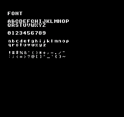
.\kitaqfc\kitaqfc.exe kitaq-docs/samples/fc_font.c -I kitaqfc/lib -I kitaq-docs/samples -o out/fc_font.nes --mapper=nrom --nes-chr=kitaq-docs/samples/font.chr// Display the letters, digits and punctuation from the supplied ascii.c font.
// Expected: Uppercase, lowercase, numbers and all 30 supplied punctuation glyphs
#include "fc_common.h"
// Lay out every supplied character category, yielding between rows. The final
// m_put uses character code 34 to display the double quote separately.
void main(void) {
m_init();
m_text(2,3,"FONT");
m_text(2,5,"ABCDEFGHIJKLMNOP"); m_wait();
m_text(2,6,"QRSTUVWXYZ"); m_wait();
m_text(2,8,"0123456789"); m_wait();
m_text(2,10,"abcdefghijklmnop"); m_wait();
m_text(2,11,"qrstuvwxyz"); m_wait();
m_text(2,13,"!#$%&'()*+,-./"); m_wait();
m_text(2,14,":;<=>?@[]^_`{}~"); m_wait();
m_put(16,13,34); m_wait();
while (1) { m_wait(); }
}最初の画面表示 fc_hello.c
期待結果：HELLO WORLD and 042
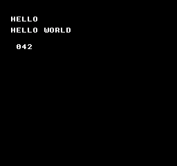
.\kitaqfc\kitaqfc.exe kitaq-docs/samples/fc_hello.c -I kitaqfc/lib -I kitaq-docs/samples -o out/fc_hello.nes --mapper=nrom --nes-chr=kitaq-docs/samples/font.chr// Display a first message on screen.
// Expected: HELLO WORLD and 042
#include "fc_common.h"
// Initialize the display/font, write HELLO WORLD and a three-digit 042,
// then wait for frames so the result remains visible.
void main(void) {
m_init();
m_text(2,3,"HELLO");
m_text(2,5,"HELLO WORLD");
m_number(42);
while (1) { m_wait(); }
}変数・算術・型変換 fc_arithmetic.c
期待結果：030
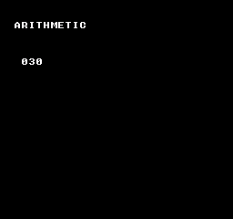
.\kitaqfc\kitaqfc.exe kitaq-docs/samples/fc_arithmetic.c -I kitaqfc/lib -I kitaq-docs/samples -o out/fc_arithmetic.nes --mapper=nrom --nes-chr=kitaq-docs/samples/font.chr// Variables, arithmetic and type conversion.
// Expected: 030
#include "fc_common.h"
// Widen before adding 200 + 100, divide the 16-bit sum, and display 30.
// The cast demonstrates avoiding an 8-bit intermediate result.
void main(void) {
m_init();
m_text(2,3,"ARITHMETIC");
u16 sum;
sum = (u16)200 + 100;
m_number((u8)(sum / 10));
while (1) { m_wait(); }
}条件分岐と繰り返し fc_control.c
期待結果：042
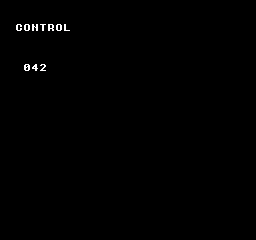
.\kitaqfc\kitaqfc.exe kitaq-docs/samples/fc_control.c -I kitaqfc/lib -I kitaq-docs/samples -o out/fc_control.nes --mapper=nrom --nes-chr=kitaq-docs/samples/font.chr// Conditional branches and loops.
// Expected: 042
#include "fc_common.h"
// Exercise loop control and a final branch, then display the selected value 42.
void main(void) {
m_init();
m_text(2,3,"CONTROL");
u8 i; u8 sum; sum=0;
for (i=0;i<8;i++) { if (i==3) continue; sum=(u8)(sum+i); }
while (sum<32) { sum++; }
if (sum==32) sum=42; else sum=0;
m_number(sum);
while (1) { m_wait(); }
}関数・配列・構造体・ポインタ fc_aggregate.c
期待結果：042
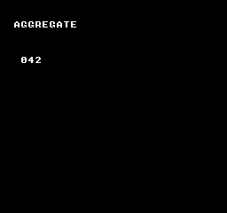
.\kitaqfc\kitaqfc.exe kitaq-docs/samples/fc_aggregate.c -I kitaqfc/lib -I kitaq-docs/samples -o out/fc_aggregate.nes --mapper=nrom --nes-chr=kitaq-docs/samples/font.chr// Functions, arrays, structures and pointers.
// Expected: 042
#include "fc_common.h"
typedef struct { u8 x; u8 y; } Point;
// Add two byte values and explicitly narrow the returned result to u8.
u8 add(u8 a,u8 b) { return (u8)(a+b); }
// Copy a structure, fill an array through a pointer, and combine selected values
// through add() to produce 42. Keep the final screen visible in the idle loop.
void main(void) {
m_init();
m_text(2,3,"AGGREGATE");
Point a; Point b; u8 i; u8 data[4]; u8* ptr;
a.x=10; a.y=20; b=a; ptr=data;
for(i=0;i<4;i++) ptr[i]=(u8)(i+1);
m_number((u8)(add(b.x,b.y)+ptr[0]+ptr[1]+ptr[3]+5));
while (1) { m_wait(); }
}ビット操作・メモリ転送 fc_bits_memory.c
期待結果：010
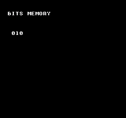
.\kitaqfc\kitaqfc.exe kitaq-docs/samples/fc_bits_memory.c -I kitaqfc/lib -I kitaq-docs/samples -o out/fc_bits_memory.nes --mapper=nrom --nes-chr=kitaq-docs/samples/font.chr// Bit operations and memory copying.
// Expected: 010
#include "fc_common.h"
// Clear the source bytes, set bits 3 and 1, copy the buffer, and display 8 + 2 = 10.
void main(void) {
m_init();
m_text(2,3,"BITS MEMORY");
u8 data[4]; u8 copy[4];
__memset(data,0,4); __bit_set(data,3); __bit_toggle(data,1);
__memcpy(copy,data,4); m_number(copy[0]);
while (1) { m_wait(); }
}ボタン入力と押した瞬間 fc_input.c
期待結果：000 initially; A increments once per press
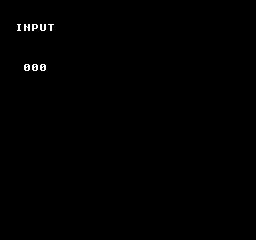
.\kitaqfc\kitaqfc.exe kitaqfc/lib/input.c kitaq-docs/samples/fc_input.c -I kitaqfc/lib -I kitaq-docs/samples -o out/fc_input.nes --mapper=nrom --nes-chr=kitaq-docs/samples/font.chr// Distinguish a new button press from a held button.
// Expected: 000 initially; A increments once per press
#include "fc_common.h"
#include "input.h"
u8 manual_count;
// Sample buttons once per frame and increment only on a new A press.
// Holding A does not repeatedly increment; the byte-sized counter wraps after 255.
void main(void) {
m_init();
m_text(2,3,"INPUT");
input_init();
m_number(0);
while (1) { m_wait(); input_update(); if(input_pressed(BTN_A)) { manual_count++; m_number(manual_count); } }
}固定小数点Q8.8 fc_fixed.c
期待結果：012
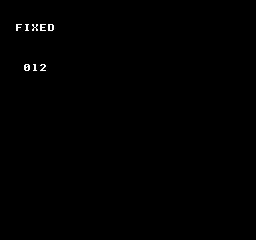
.\kitaqfc\kitaqfc.exe kitaqfc/lib/fixed.c kitaq-docs/samples/fc_fixed.c -I kitaqfc/lib -I kitaq-docs/samples -o out/fc_fixed.nes --mapper=nrom --nes-chr=kitaq-docs/samples/font.chr// Calculate with signed Q8.8 fixed-point values.
// Expected: 012
#include "fc_common.h"
#include "fixed.h"
// Convert 3 and 4 to Q8.8, multiply them, convert the result back to an
// integer, and display 12.
void main(void) {
m_init();
m_text(2,3,"FIXED");
fix8 a; fix8 b; a=fix_from_int(3); b=fix_from_int(4);
m_number((u8)fix_to_int(fix_mul(a,b)));
while (1) { m_wait(); }
}固定長オブジェクトプール fc_entity.c
期待結果：001
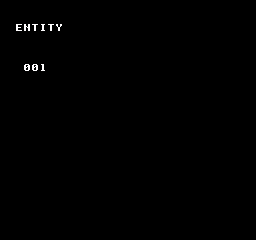
.\kitaqfc\kitaqfc.exe kitaqfc/lib/entity.c kitaq-docs/samples/fc_entity.c -I kitaqfc/lib -I kitaq-docs/samples -o out/fc_entity.nes --mapper=nrom --nes-chr=kitaq-docs/samples/font.chr// Allocate an entity from a fixed-capacity object pool.
// Expected: 001
#include "fc_common.h"
#include "entity.h"
// Create one entity and check the 0xFF allocation-failure sentinel before
// accessing its velocity. Display the pool occupancy, not the entity ID.
void main(void) {
m_init();
m_text(2,3,"ENTITY");
u8 id; entity_init(); id=entity_create(1,20,30);
if(id!=0xFF) entity_get(id)->vx=2; m_number(entity_count_active());
while (1) { m_wait(); }
}値の記録とアサート fc_debug.c
期待結果：001; trace log contains HP=42
.\kitaqfc\kitaqfc.exe kitaqfc/lib/debug.c kitaq-docs/samples/fc_debug.c -I kitaqfc/lib -I kitaq-docs/samples -o out/fc_debug.nes --mapper=nrom --nes-chr=kitaq-docs/samples/font.chr// Record diagnostic values in the debug trace.
// Expected: 001; trace log contains HP=42
#include "fc_common.h"
#include "debug.h"
// Record HP = 42 with frame tag 1 and display the number of trace entries.
// The trace buffer contains the value; the screen displays the count, not HP.
void main(void) {
m_init();
m_text(2,3,"DEBUG");
debug_init(); debug_set_frame(1); debug_trace_u8("HP",42);
m_number(debug_get_trace_count());
while (1) { m_wait(); }
}座標履歴のリングバッファ fc_chain.c
期待結果：042; history contains (20,30)
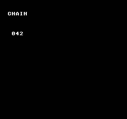
.\kitaqfc\kitaqfc.exe kitaqfc/lib/chain.c kitaq-docs/samples/fc_chain.c -I kitaqfc/lib -I kitaq-docs/samples -o out/fc_chain.nes --mapper=nrom --nes-chr=kitaq-docs/samples/font.chr// Store a position history in a ring buffer.
// Expected: 042; history contains (20,30)
#include "fc_common.h"
#include "chain.h"
Chain trail; ChainPoint points[4];
// Attach four history slots and record one point. The displayed 42 is a fixed
// completion marker; inspect the chain to verify the stored (20,30) point.
void main(void) {
m_init();
m_text(2,3,"CHAIN");
chain_init(&trail,points,4); chain_push_head(&trail,20,30);
m_number(42);
while (1) { m_wait(); }
}フレームカウンター fc_system.c
期待結果：002
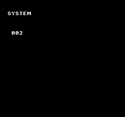
.\kitaqfc\kitaqfc.exe kitaqfc/lib/system.c kitaq-docs/samples/fc_system.c -I kitaqfc/lib -I kitaq-docs/samples -o out/fc_system.nes --mapper=nrom --nes-chr=kitaq-docs/samples/font.chr// Count completed frame waits.
// Expected: 002
#include "fc_common.h"
#include "system.h"
// Reset the library frame count, perform two counted waits, and display 2.
// Subsequent m_wait calls leave that library counter unchanged.
void main(void) {
m_init();
m_text(2,3,"SYSTEM");
system_init(); system_wait_vblank(); system_wait_vblank();
m_number(system_get_frame8());
while (1) { m_wait(); }
}シーン番号の切替 fc_scene.c
期待結果：001; no callbacks registered
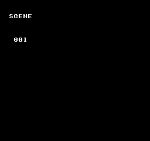
.\kitaqfc\kitaqfc.exe kitaqfc/lib/runtime.c kitaqfc/lib/scene.c kitaq-docs/samples/fc_scene.c -I kitaqfc/lib -I kitaq-docs/samples -o out/fc_scene.nes --mapper=nrom --nes-chr=kitaq-docs/samples/font.chr// The scene streaming module shares runtime.c queue symbols, even though this demo only changes IDs.
#define MANUAL_FC_RUNTIME 1
// Switch the current scene ID.
// Expected: 001; no callbacks registered
#include "fc_common.h"
#include "scene.h"
SceneDef manual_scenes[2];
// Register two zero-initialized scene entries, select ID 1 and display it.
// No callbacks are registered in this example.
void main(void) {
m_init();
m_text(2,3,"SCENE");
scene_init(manual_scenes,2); scene_change(1);
m_number(scene_get_current());
while (1) { m_wait(); }
}Q5.3の1/8画素を整数座標へ加算 fc_subpixel.c
期待結果：042; explicit game-side integration using header constants
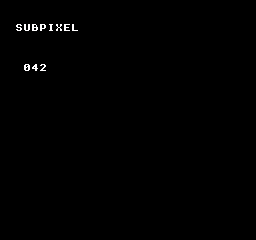
.\kitaqfc\kitaqfc.exe kitaq-docs/samples/fc_subpixel.c -I kitaqfc/lib -I kitaq-docs/samples -o out/fc_subpixel.nes --mapper=nrom --nes-chr=kitaq-docs/samples/font.chr// Accumulate Q5.3 eighth-pixel motion into an integer coordinate.
// Expected: 042; explicit game-side integration using header constants
#include "fc_common.h"
#include "physics2d.h"
// Integrate eight increments of 2/8 pixel. Carry whole pixels into X and
// retain the fractional remainder with the supplied mask, moving X from 40 to 42.
void main(void) {
m_init();
m_text(2,3,"SUBPIXEL");
KQ2DPosition x; KQ2DFraction frac; KQ2DSpeed speed; u8 i;
// This example demonstrates positive motion only; signed negative motion needs a matching carry/borrow path.
x=40; frac=0; speed=2;
for(i=0;i<8;i++) {
frac=(u8)(frac+speed);
x=(u8)(x+(frac>>KQ2D_SUBPIXEL_BITS));
frac=(u8)(frac & KQ2D_SUBPIXEL_MASK);
}
m_number(x);
while (1) { m_wait(); }
}NESの背景スクロール fc_scroll.c
期待結果：title scrolls horizontally
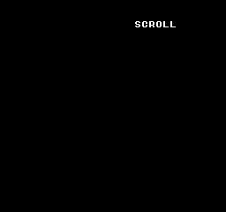
.\kitaqfc\kitaqfc.exe kitaq-docs/samples/fc_scroll.c -I kitaqfc/lib -I kitaq-docs/samples -o out/fc_scroll.nes --mapper=nrom --nes-chr=kitaq-docs/samples/font.chr// Scroll the NES background horizontally.
// Expected: title scrolls horizontally
#include "fc_common.h"
u8 phase;
// Advance an 8-bit horizontal scroll position once per frame, wrapping naturally
// after 255. Background motion demonstrates the changing scroll register.
void main(void) {
m_init();
m_text(2,3,"SCROLL");
__scroll_set(0,0);
while (1) { m_wait(); phase++; __scroll_set(phase,0); }
}NMIでVRAM更新 fc_vram_queue.c
期待結果：4 at (3,8)
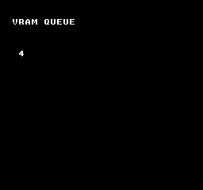
.\kitaqfc\kitaqfc.exe kitaq-docs/samples/fc_vram_queue.c -I kitaqfc/lib -I kitaq-docs/samples -o out/fc_vram_queue.nes --mapper=nrom --nes-chr=kitaq-docs/samples/font.chr// Submit a VRAM update for the NMI handler.
// Expected: 4 at (3,8)
#include "fc_common.h"
// Queue tile 52 at nametable address 0x2103, corresponding to (3,8), and
// commit the queue so the NMI update path displays the digit 4.
void main(void) {
m_init();
m_text(2,3,"VRAM QUEUE");
__vramq_put(0x2103,52); __vramq_commit();
while (1) { m_wait(); }
}NESのOAM fc_sprite.c
期待結果：A sprite on screen
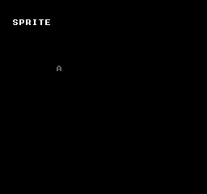
.\kitaqfc\kitaqfc.exe kitaq-docs/samples/fc_sprite.c -I kitaqfc/lib -I kitaq-docs/samples -o out/fc_sprite.nes --mapper=nrom --nes-chr=kitaq-docs/samples/font.chr// Display a sprite using NES OAM.
// Expected: A sprite on screen
#include "fc_common.h"
// Load the sprite palette, assign font tile 65 to OAM slot zero, enable
// background/sprite display, and transfer OAM after each frame wait.
void main(void) {
m_init();
m_text(2,3,"SPRITE");
__palette_sp_load(manual_pal); __sprite_set(0,70,80,65,0);
__ppu_mask_set(0x1E);
while (1) { m_wait(); __oam_dma(); }
}内蔵APUの効果音 fc_sound.c
期待結果：042 and a pulse tone
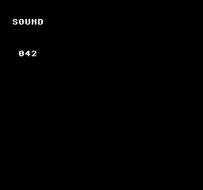
.\kitaqfc\kitaqfc.exe kitaqfc/lib/audio.c kitaq-docs/samples/fc_sound.c -I kitaqfc/lib -I kitaq-docs/samples -o out/fc_sound.nes --mapper=nrom --nes-chr=kitaq-docs/samples/font.chr// Play a pulse-channel effect on the built-in NES APU.
// Expected: 042 and a pulse tone
#include "fc_common.h"
#include "audio.h"
// Initialize the APU, trigger pulse channel 1 with the chosen timer/length
// values, and leave the screen displaying 42 while the hardware plays the tone.
void main(void) {
m_init();
m_text(2,3,"SOUND");
// Control BF selects constant volume and halts the length counter, so this tone sustains.
// Call nes_apu_silence_all when the game should stop it; 20 is a length-table index, not frames.
nes_apu_init(); nes_sfx_square1(0xBF,400,20);
m_number(42);
while (1) { m_wait(); }
}組み込み命令辞典
全157項目。項目名を開くと書式・引数・原注記・使用例を読めます。「呼び出し断片」は単独ROMではなく周辺の初期化が必要です。「引数受け渡し例」は、引数を用意した上位コードから使うための関数例で、実機器の操作確認を意味しません。
fds.h — FDSディスク操作
__fds_availableコンパイラ組み込み
FDSディスク操作に関するAPIです。引数に対応する処理を実行します。正確な引数の単位・終端・戻り値の条件は、以下の宣言・原注記・実装に従います。
u8 __fds_available(void);戻り値の型：u8。意味・成功値・失敗値は原注記と実装のreturn条件を参照してください。
Return the compile-time FDS mapper selection as 0 or 1; this is not a hardware probe.
引数受け渡し例
__fds_available();オブジェクトの初期化、バッファの大きさ、ROMバンク、機器状態は上位コードで準備します。この関数断片単体は実行確認していません。
宣言・識別子の出典：kitaqfc/lib/fds.h:7
__fds_disk_readyコンパイラ組み込み
FDSディスク操作に関するAPIです。値を読み取りします。正確な引数の単位・終端・戻り値の条件は、以下の宣言・原注記・実装に従います。
u8 __fds_disk_ready(void);戻り値の型：u8。意味・成功値・失敗値は原注記と実装のreturn条件を参照してください。
Return the inverted disk-absent bit from 4032 as 0 or 1; this checks presence, not transfer completion.
引数受け渡し例
__fds_disk_ready();オブジェクトの初期化、バッファの大きさ、ROMバンク、機器状態は上位コードで準備します。この関数断片単体は実行確認していません。
宣言・識別子の出典：kitaqfc/lib/fds.h:9
__fds_errorコンパイラ組み込み
FDSディスク操作に関するAPIです。引数に対応する処理を実行します。正確な引数の単位・終端・戻り値の条件は、以下の宣言・原注記・実装に従います。
u8 __fds_error(void);戻り値の型：u8。意味・成功値・失敗値は原注記と実装のreturn条件を参照してください。
Read the entire 4030 status register; this is not a stored BIOS error code.
引数受け渡し例
__fds_error();オブジェクトの初期化、バッファの大きさ、ROMバンク、機器状態は上位コードで準備します。この関数断片単体は実行確認していません。
宣言・識別子の出典：kitaqfc/lib/fds.h:13
__fds_sideコンパイラ組み込み
FDSディスク操作に関するAPIです。引数に対応する処理を実行します。正確な引数の単位・終端・戻り値の条件は、以下の宣言・原注記・実装に従います。
u8 __fds_side(void);戻り値の型：u8。意味・成功値・失敗値は原注記と実装のreturn条件を参照してください。
Return raw status mask 4032 & 04, either 0 or 4. This is not a numbered disk-side identifier.
引数受け渡し例
__fds_side();オブジェクトの初期化、バッファの大きさ、ROMバンク、機器状態は上位コードで準備します。この関数断片単体は実行確認していません。
宣言・識別子の出典：kitaqfc/lib/fds.h:11
__fds_wait_insertコンパイラ組み込み
FDSディスク操作に関するAPIです。条件の成立を待機します。正確な引数の単位・終端・戻り値の条件は、以下の宣言・原注記・実装に従います。
void __fds_wait_insert(void);Alias the same disk-presence wait as __fds_wait_ready; the call can block indefinitely.
引数受け渡し例
__fds_wait_insert();オブジェクトの初期化、バッファの大きさ、ROMバンク、機器状態は上位コードで準備します。この関数断片単体は実行確認していません。
宣言・識別子の出典：kitaqfc/lib/fds.h:17
__fds_wait_readyコンパイラ組み込み
FDSディスク操作に関するAPIです。値を読み取りします。正確な引数の単位・終端・戻り値の条件は、以下の宣言・原注記・実装に従います。
void __fds_wait_ready(void);Poll disk presence until the absent bit clears. There is no timeout or cancellation path.
引数受け渡し例
__fds_wait_ready();オブジェクトの初期化、バッファの大きさ、ROMバンク、機器状態は上位コードで準備します。この関数断片単体は実行確認していません。
宣言・識別子の出典：kitaqfc/lib/fds.h:15
fds_file.h — FDSファイルのロード
__fds_file_existsコンパイラ組み込み
FDSファイルのロードに関するAPIです。引数に対応する処理を実行します。正確な引数の単位・終端・戻り値の条件は、以下の宣言・原注記・実装に従います。
u8 __fds_file_exists(u8 id);引数（左から順）：u8 id。配列・ポインタでは必要な領域を用意し、処理が終わるまで有効に保ちます。
戻り値の型：u8。意味・成功値・失敗値は原注記と実装のreturn条件を参照してください。
Query the compiled --fds-meta/--fds-manifest table, not the inserted disk; return 0 or 1.
引数受け渡し例
u8 example_fds_file_exists(u8 id) {
return __fds_file_exists(id);
}オブジェクトの初期化、バッファの大きさ、ROMバンク、機器状態は上位コードで準備します。この関数断片単体は実行確認していません。
宣言・識別子の出典：kitaqfc/lib/fds_file.h:13
__fds_file_sizeコンパイラ組み込み
FDSファイルのロードに関するAPIです。引数に対応する処理を実行します。正確な引数の単位・終端・戻り値の条件は、以下の宣言・原注記・実装に従います。
u16 __fds_file_size(u8 id);引数（左から順）：u8 id。配列・ポインタでは必要な領域を用意し、処理が終わるまで有効に保ちます。
戻り値の型：u16。意味・成功値・失敗値は原注記と実装のreturn条件を参照してください。
Return the compiled metadata size, or zero if id is absent. No disk directory is read.
引数受け渡し例
u16 example_fds_file_size(u8 id) {
return __fds_file_size(id);
}オブジェクトの初期化、バッファの大きさ、ROMバンク、機器状態は上位コードで準備します。この関数断片単体は実行確認していません。
宣言・識別子の出典：kitaqfc/lib/fds_file.h:15
__fds_load_fileコンパイラ組み込み
FDSファイルのロードに関するAPIです。データを読み込みします。正確な引数の単位・終端・戻り値の条件は、以下の宣言・原注記・実装に従います。
u8 __fds_load_file(u8 id, u8* dst);引数（左から順）：u8 id, u8* dst。配列・ポインタでは必要な領域を用意し、処理が終わるまで有効に保ちます。
戻り値の型：u8。意味・成功値・失敗値は原注記と実装のreturn条件を参照してください。
Call BIOS LoadFiles for id and return its error byte (zero on success). The disk header determines the load address; the current helper does not use dst.
引数受け渡し例
u8 example_fds_load_file(u8 id, u8* dst) {
return __fds_load_file(id, dst);
}オブジェクトの初期化、バッファの大きさ、ROMバンク、機器状態は上位コードで準備します。この関数断片単体は実行確認していません。
宣言・識別子の出典：kitaqfc/lib/fds_file.h:8
__fds_save_fileコンパイラ組み込み
FDSファイルのロードに関するAPIです。データを保存します。正確な引数の単位・終端・戻り値の条件は、以下の宣言・原注記・実装に従います。
u8 __fds_save_file(u8 id, const u8* src, u16 len);引数（左から順）：u8 id, const u8* src, u16 len。配列・ポインタでは必要な領域を用意し、処理が終わるまで有効に保ちます。
戻り値の型：u8。意味・成功値・失敗値は原注記と実装のreturn条件を参照してください。
Call BIOS WriteFile with a RAM source and byte length, returning its error byte. The generated PRG descriptor uses id as file number and the fixed name KQFCFILE.
引数受け渡し例
u8 example_fds_save_file(u8 id, const u8* src, u16 len) {
return __fds_save_file(id, src, len);
}オブジェクトの初期化、バッファの大きさ、ROMバンク、機器状態は上位コードで準備します。この関数断片単体は実行確認していません。
宣言・識別子の出典：kitaqfc/lib/fds_file.h:11
fds_overlay.h — FDSのオーバーレイコード
__fds_current_bankコンパイラ組み込み
FDSのオーバーレイコードに関するAPIです。引数に対応する処理を実行します。正確な引数の単位・終端・戻り値の条件は、以下の宣言・原注記・実装に従います。
u8 __fds_current_bank(void);戻り値の型：u8。意味・成功値・失敗値は原注記と実装のreturn条件を参照してください。
Return the software resident-bank byte; it is not a checksum of overlay memory.
引数受け渡し例
__fds_current_bank();オブジェクトの初期化、バッファの大きさ、ROMバンク、機器状態は上位コードで準備します。この関数断片単体は実行確認していません。
宣言・識別子の出典：kitaqfc/lib/fds_overlay.h:14
__fds_farcallコンパイラ組み込み
FDSのオーバーレイコードに関するAPIです。引数に対応する処理を実行します。正確な引数の単位・終端・戻り値の条件は、以下の宣言・原注記・実装に従います。
u8 __fds_farcall(u8 bank, u16 func);引数（左から順）：u8 bank, u16 func。配列・ポインタでは必要な領域を用意し、処理が終わるまで有効に保ちます。
戻り値の型：u8。意味・成功値・失敗値は原注記と実装のreturn条件を参照してください。
Alternate direct-call spelling for FDS overlay calls; supply a function symbol, not a runtime pointer.
引数受け渡し例
u8 example_fds_farcall(u8 bank, u16 func) {
return __fds_farcall(bank, func);
}オブジェクトの初期化、バッファの大きさ、ROMバンク、機器状態は上位コードで準備します。この関数断片単体は実行確認していません。
宣言・識別子の出典：kitaqfc/lib/fds_overlay.h:22
__fds_is_bank_residentコンパイラ組み込み
FDSのオーバーレイコードに関するAPIです。引数に対応する処理を実行します。正確な引数の単位・終端・戻り値の条件は、以下の宣言・原注記・実装に従います。
u8 __fds_is_bank_resident(u8 bank);引数（左から順）：u8 bank。配列・ポインタでは必要な領域を用意し、処理が終わるまで有効に保ちます。
戻り値の型：u8。意味・成功値・失敗値は原注記と実装のreturn条件を参照してください。
Compare bank with the software resident-bank byte and return 0 or 1.
引数受け渡し例
u8 example_fds_is_bank_resident(u8 bank) {
return __fds_is_bank_resident(bank);
}オブジェクトの初期化、バッファの大きさ、ROMバンク、機器状態は上位コードで準備します。この関数断片単体は実行確認していません。
宣言・識別子の出典：kitaqfc/lib/fds_overlay.h:16
__fds_load_bankコンパイラ組み込み
FDSのオーバーレイコードに関するAPIです。データを読み込みします。正確な引数の単位・終端・戻り値の条件は、以下の宣言・原注記・実装に従います。
u8 __fds_load_bank(u8 bank);引数（左から順）：u8 bank。配列・ポインタでは必要な領域を用意し、処理が終わるまで有効に保ちます。
戻り値の型：u8。意味・成功値・失敗値は原注記と実装のreturn条件を参照してください。
Map bank >=2 to overlay-start-id+(bank-2), load it and update residency on success. Return FF for bank 0 or 1; an enabled residency guard may skip an already-resident load.
引数受け渡し例
u8 example_fds_load_bank(u8 bank) {
return __fds_load_bank(bank);
}オブジェクトの初期化、バッファの大きさ、ROMバンク、機器状態は上位コードで準備します。この関数断片単体は実行確認していません。
宣言・識別子の出典：kitaqfc/lib/fds_overlay.h:10
__fds_load_overlayコンパイラ組み込み
FDSのオーバーレイコードに関するAPIです。データを読み込みします。正確な引数の単位・終端・戻り値の条件は、以下の宣言・原注記・実装に従います。
u8 __fds_load_overlay(u8 id);引数（左から順）：u8 id。配列・ポインタでは必要な領域を用意し、処理が終わるまで有効に保ちます。
戻り値の型：u8。意味・成功値・失敗値は原注記と実装のreturn条件を参照してください。
Load the disk file id through BIOS and return its error byte; this alone does not update bank residency.
引数受け渡し例
u8 example_fds_load_overlay(u8 id) {
return __fds_load_overlay(id);
}オブジェクトの初期化、バッファの大きさ、ROMバンク、機器状態は上位コードで準備します。この関数断片単体は実行確認していません。
宣言・識別子の出典：kitaqfc/lib/fds_overlay.h:7
__fds_overlay_farcallコンパイラ組み込み
FDSのオーバーレイコードに関するAPIです。引数に対応する処理を実行します。正確な引数の単位・終端・戻り値の条件は、以下の宣言・原注記・実装に従います。
u8 __fds_overlay_farcall(u8 bank, u16 func);引数（左から順）：u8 bank, u16 func。配列・ポインタでは必要な領域を用意し、処理が終わるまで有効に保ちます。
戻り値の型：u8。意味・成功値・失敗値は原注記と実装のreturn条件を参照してください。
Use a direct call with a function name as the second argument; arbitrary numeric pointers are rejected.
引数受け渡し例
u8 example_fds_overlay_farcall(u8 bank, u16 func) {
return __fds_overlay_farcall(bank, func);
}オブジェクトの初期化、バッファの大きさ、ROMバンク、機器状態は上位コードで準備します。この関数断片単体は実行確認していません。
宣言・識別子の出典：kitaqfc/lib/fds_overlay.h:20
__fds_overlay_function_countコンパイラ組み込み
FDSのオーバーレイコードに関するAPIです。件数を取得します。正確な引数の単位・終端・戻り値の条件は、以下の宣言・原注記・実装に従います。
u8 __fds_overlay_function_count(void);戻り値の型：u8。意味・成功値・失敗値は原注記と実装のreturn条件を参照してください。
Read the emitted overlay-function table count; the current helper emits an initial zero entry.
引数受け渡し例
__fds_overlay_function_count();オブジェクトの初期化、バッファの大きさ、ROMバンク、機器状態は上位コードで準備します。この関数断片単体は実行確認していません。
宣言・識別子の出典：kitaqfc/lib/fds_overlay.h:18
__fds_require_bankコンパイラ組み込み
FDSのオーバーレイコードに関するAPIです。引数に対応する処理を実行します。正確な引数の単位・終端・戻り値の条件は、以下の宣言・原注記・実装に従います。
u8 __fds_require_bank(u8 bank);引数（左から順）：u8 bank。配列・ポインタでは必要な領域を用意し、処理が終わるまで有効に保ちます。
戻り値の型：u8。意味・成功値・失敗値は原注記と実装のreturn条件を参照してください。
Return zero when the software residency record matches, otherwise call __fds_load_bank.
引数受け渡し例
u8 example_fds_require_bank(u8 bank) {
return __fds_require_bank(bank);
}オブジェクトの初期化、バッファの大きさ、ROMバンク、機器状態は上位コードで準備します。この関数断片単体は実行確認していません。
宣言・識別子の出典：kitaqfc/lib/fds_overlay.h:12
fds_sound.h — FDS波形音源
__fds_env_setコンパイラ組み込み
FDS波形音源に関するAPIです。値や動作条件を設定します。正確な引数の単位・終端・戻り値の条件は、以下の宣言・原注記・実装に従います。
void __fds_env_set(u8 speed, u8 gain, u8 mode);引数（左から順）：u8 speed, u8 gain, u8 mode。配列・ポインタでは必要な領域を用意し、処理が終わるまで有効に保ちます。
Write the three raw arguments to 4080, 4084 and 408A in that order. The legacy parameter names do not describe three independently packed envelope fields.
引数受け渡し例
void example_fds_env_set(u8 speed, u8 gain, u8 mode) {
__fds_env_set(speed, gain, mode);
}オブジェクトの初期化、バッファの大きさ、ROMバンク、機器状態は上位コードで準備します。この関数断片単体は実行確認していません。
宣言・識別子の出典：kitaqfc/lib/fds_sound.h:18
__fds_freq_setコンパイラ組み込み
FDS波形音源に関するAPIです。値や動作条件を設定します。正確な引数の単位・終端・戻り値の条件は、以下の宣言・原注記・実装に従います。
void __fds_freq_set(u16 freq);引数（左から順）：u16 freq。配列・ポインタでは必要な領域を用意し、処理が終わるまで有効に保ちます。
Write a 12-bit frequency to 4082/4083; upper control bits in 4083 are cleared.
引数受け渡し例
void example_fds_freq_set(u16 freq) {
__fds_freq_set(freq);
}オブジェクトの初期化、バッファの大きさ、ROMバンク、機器状態は上位コードで準備します。この関数断片単体は実行確認していません。
宣言・識別子の出典：kitaqfc/lib/fds_sound.h:13
__fds_mod_loadコンパイラ組み込み
FDS波形音源に関するAPIです。データを読み込みします。正確な引数の単位・終端・戻り値の条件は、以下の宣言・原注記・実装に従います。
void __fds_mod_load(const u8* mod32);引数（左から順）：const u8* mod32。配列・ポインタでは必要な領域を用意し、処理が終わるまで有効に保ちます。
Stream 32 readable bytes to 4088; the caller prepares modulation state and write conditions.
引数受け渡し例
void example_fds_mod_load(const u8* mod32) {
__fds_mod_load(mod32);
}オブジェクトの初期化、バッファの大きさ、ROMバンク、機器状態は上位コードで準備します。この関数断片単体は実行確認していません。
宣言・識別子の出典：kitaqfc/lib/fds_sound.h:11
__fds_sound_enableコンパイラ組み込み
FDS波形音源に関するAPIです。機能を有効化します。正確な引数の単位・終端・戻り値の条件は、以下の宣言・原注記・実装に従います。
void __fds_sound_enable(void);Write 83 to 4023 and zero to 4089/408A to initialize disk/sound register gates.
引数受け渡し例
__fds_sound_enable();オブジェクトの初期化、バッファの大きさ、ROMバンク、機器状態は上位コードで準備します。この関数断片単体は実行確認していません。
宣言・識別子の出典：kitaqfc/lib/fds_sound.h:7
__fds_volume_setコンパイラ組み込み
FDS波形音源に関するAPIです。値や動作条件を設定します。正確な引数の単位・終端・戻り値の条件は、以下の宣言・原注記・実装に従います。
void __fds_volume_set(u8 vol);引数（左から順）：u8 vol。配列・ポインタでは必要な領域を用意し、処理が終わるまで有効に保ちます。
Write (volume & 3F) | 80 to 4080 for direct volume control; masking wraps, rather than clamps.
引数受け渡し例
void example_fds_volume_set(u8 vol) {
__fds_volume_set(vol);
}オブジェクトの初期化、バッファの大きさ、ROMバンク、機器状態は上位コードで準備します。この関数断片単体は実行確認していません。
宣言・識別子の出典：kitaqfc/lib/fds_sound.h:15
__fds_wave_loadコンパイラ組み込み
FDS波形音源に関するAPIです。データを読み込みします。正確な引数の単位・終端・戻り値の条件は、以下の宣言・原注記・実装に従います。
void __fds_wave_load(const u8* wave64);引数（左から順）：const u8* wave64。配列・ポインタでは必要な領域を用意し、処理が終わるまで有効に保ちます。
Copy exactly 64 readable bytes to wave RAM with wave writes enabled, then set 4089 to zero.
引数受け渡し例
void example_fds_wave_load(const u8* wave64) {
__fds_wave_load(wave64);
}オブジェクトの初期化、バッファの大きさ、ROMバンク、機器状態は上位コードで準備します。この関数断片単体は実行確認していません。
宣言・識別子の出典：kitaqfc/lib/fds_sound.h:9
intrinsics.h — コンパイラ組み込み命令
__attr_set
ネームテーブル0の0x23C0 + (y>>2)*8 + (x>>2)へ、まとめられた属性1バイト全体を書きます。X・Yはタイル座標で、4×4タイルの属性領域を特定します。2ビットずつの4個のパレット指定をすべて置き換えるため、選んだ四分区画だけを合成する処理ではありません。
書式
void __attr_set(u8 x, u8 y, u8 attr);引数
x / yピクセルではなくタイル座標です。32×30タイルの表示領域では
xを0..31、yを0..29に収めます。1タイルは8×8ピクセルです。1バイトの引数を範囲内へ補正しないため、範囲外の座標では意図したタイル領域の外へ書く場合があります。attrまとめられた属性バイトです。ビット0–1が左上2×2タイル、2–3が右上、4–5が左下、6–7が右下を指定し、各区画でパレット0–3を選びます。
0x55、0xAA、0xFFなら四区画すべてをそれぞれパレット1、2、3にします。
戻り値
ありません（void）。
使用条件と制限
PPU直接アクセスは、描画停止中か、処理全体が安全なVBlank時間内に収まる条件で行います。これらの関数は待機・キュー登録・NMI抑止・スクロール復元を行いません。呼び出し中に割り込みで共有ラッチやアドレスを変更しないでください。PPUCTRLのビット2により、書き込み先は1バイトごとに1または32進みます。ミラーリングとアドレスの周回はPPUの動作に従い、CHR-ROMへは書き込めません。アクセス後、描画を始める前に意図したスクロール状態を設定してください。
使用例
for(i=2;i<12;i=(u8)(i+4)) {
__attr_set(i,6,0xFF);__attr_set(i,10,0xFF); // All quadrants select green.
}呼び出し部分のコード例です。完全なプログラムに組み込む際は、記載した初期化とバッファの条件を満たしてください。
期待する結果
このプログラムではレジスター設定、タイル・属性の直接書き込み、スクロール、背景・スプライトそれぞれのパレット転送を学びます。(0,16)の青い帯は256×16ピクセルです。上段は8×8の塗りつぶし、左半分4×8の棒、8行の三角形を繰り返し、下段は左半分の棒だけを並べます。(16,48)に緑の塗りつぶし64×32、(144,48)に三角形タイルを横8個・縦4個並べた赤い64×32の領域が出ます。
y=96では、x=16・24・32に青い正方形・左半分の棒・三角形、x=80に赤い左半分の棒、x=144に緑の三角形が表示されます。これらは背景タイルです。別パレットを使うスプライトはy=144に並び、x=16が赤い8×8の正方形、x=80が青い左半分4×8の棒、x=144が緑の8行の三角形です。最終スクロールは(0,0)です。
画像ではスプライトの色も含め、16,384ピクセルの形と色を照合します。別の31ケースで、レジスターの置き換え、ステータス・ラッチの副作用、スクロール保存値、0・255バイト転送、増分1・32、マップ端、矩形の寸法0、テーブル選択、属性1バイト全体、背景・スプライト両方のパレットを検証しています。Y=255はレジスターへ書く値としての確認で、正しいスクロール画像の検証ではありません。検証環境はKUROSAKIのNROMで、実機は未検証です。
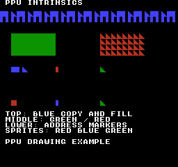
ビルドコマンド
New-Item -ItemType Directory -Force .\out | Out-Null
.\kitaqfc\kitaqfc.exe .\kitaq-docs\samples\api-examples\fc\ppu_intrinsics.c -I .\kitaqfc\lib -I .\kitaq-docs\samples --nes-chr=.\kitaq-docs\samples\api-examples\fc\vram_shapes.chr -o .\out\ppu_intrinsics.nes --no-cache --no-disasm実装とソース
kitaqfc/lib/intrinsics.h:130
Write the entire packed attribute byte at 23C0+(y>>2)*8+(x>>2). Use tile coordinates below 32; this does not merge a single palette quadrant.
kitaqfc/kitaqfc/CodeGenerator.cs:4595
case "__attr_set": return EmitKitaqfcHelperCall(funcName, args, ctx, new[] {1,1,1}, funcName);
void EmitHelperAttrSet()
{
EmitHelperStart("__attr_set");
// args: x,y,attr. Attribute address = $23C0 + (y>>2)*8 + (x>>2), nametable 0.
EmitAsm("LDA", Mem(CallArgBase + 1));
EmitAsm("LSR"); EmitAsm("LSR"); EmitAsm("ASL"); EmitAsm("ASL"); EmitAsm("ASL");
EmitAsm("STA", Mem(_runtimeIntrinsicTmp0Address));
EmitAsm("LDA", Mem(CallArgBase)); EmitAsm("LSR"); EmitAsm("LSR"); EmitAsm("CLC"); EmitAsm("ADC", Mem(_runtimeIntrinsicTmp0Address)); EmitAsm("STA", Mem(_runtimeIntrinsicTmp0Address));
EmitAsm("LDA", Mem(0x2002)); EmitAsm("LDA", Imm(0x23)); EmitAsm("STA", Mem(0x2006));
EmitAsm("LDA", Mem(_runtimeIntrinsicTmp0Address)); EmitAsm("CLC"); EmitAsm("ADC", Imm(0xC0)); EmitAsm("STA", Mem(0x2006));
EmitAsm("LDA", Mem(CallArgBase + 2)); EmitAsm("STA", Mem(0x2007));
EmitAsm("RTS");
}__attr_set_nt
論理ネームテーブルnt & 3を選び、PPUラッチをリセットして、0x23C0 + (nt & 3)*0x400 + (y>>2)*8 + (x>>2)へ属性1バイト全体を書きます。そのバイトのパレット四分区画をすべて上書きします。テーブルの対応はカートリッジの現在のミラーリングに従います。
書式
void __attr_set_nt(u8 nt, u8 x, u8 y, u8 attr);引数
nt論理ネームテーブルの選択値です。下位2ビットだけを使うため（
nt & 3）、たとえば4はテーブル0、7はテーブル3を選びます。独立した保存領域の確保やマッパーのミラーリング変更は行いません。x / yピクセルではなくタイル座標です。32×30タイルの表示領域では
xを0..31、yを0..29に収めます。1タイルは8×8ピクセルです。1バイトの引数を範囲内へ補正しないため、範囲外の座標では意図したタイル領域の外へ書く場合があります。attrまとめられた属性バイトです。ビット0–1が左上2×2タイル、2–3が右上、4–5が左下、6–7が右下を指定し、各区画でパレット0–3を選びます。
0x55、0xAA、0xFFなら四区画すべてをそれぞれパレット1、2、3にします。
戻り値
ありません（void）。
使用条件と制限
PPU直接アクセスは、描画停止中か、処理全体が安全なVBlank時間内に収まる条件で行います。これらの関数は待機・キュー登録・NMI抑止・スクロール復元を行いません。呼び出し中に割り込みで共有ラッチやアドレスを変更しないでください。PPUCTRLのビット2により、書き込み先は1バイトごとに1または32進みます。ミラーリングとアドレスの周回はPPUの動作に従い、CHR-ROMへは書き込めません。アクセス後、描画を始める前に意図したスクロール状態を設定してください。
使用例
for(i=18;i<28;i=(u8)(i+4)) {
__attr_set_nt(4,i,6,0x55);__attr_set_nt(4,i,10,0x55); // nt&3=0; red.
}呼び出し部分のコード例です。完全なプログラムに組み込む際は、記載した初期化とバッファの条件を満たしてください。
期待する結果
このプログラムではレジスター設定、タイル・属性の直接書き込み、スクロール、背景・スプライトそれぞれのパレット転送を学びます。(0,16)の青い帯は256×16ピクセルです。上段は8×8の塗りつぶし、左半分4×8の棒、8行の三角形を繰り返し、下段は左半分の棒だけを並べます。(16,48)に緑の塗りつぶし64×32、(144,48)に三角形タイルを横8個・縦4個並べた赤い64×32の領域が出ます。
y=96では、x=16・24・32に青い正方形・左半分の棒・三角形、x=80に赤い左半分の棒、x=144に緑の三角形が表示されます。これらは背景タイルです。別パレットを使うスプライトはy=144に並び、x=16が赤い8×8の正方形、x=80が青い左半分4×8の棒、x=144が緑の8行の三角形です。最終スクロールは(0,0)です。
画像ではスプライトの色も含め、16,384ピクセルの形と色を照合します。別の31ケースで、レジスターの置き換え、ステータス・ラッチの副作用、スクロール保存値、0・255バイト転送、増分1・32、マップ端、矩形の寸法0、テーブル選択、属性1バイト全体、背景・スプライト両方のパレットを検証しています。Y=255はレジスターへ書く値としての確認で、正しいスクロール画像の検証ではありません。検証環境はKUROSAKIのNROMで、実機は未検証です。
ビルドコマンド
New-Item -ItemType Directory -Force .\out | Out-Null
.\kitaqfc\kitaqfc.exe .\kitaq-docs\samples\api-examples\fc\ppu_intrinsics.c -I .\kitaqfc\lib -I .\kitaq-docs\samples --nes-chr=.\kitaq-docs\samples\api-examples\fc\vram_shapes.chr -o .\out\ppu_intrinsics.nes --no-cache --no-disasm実装とソース
kitaqfc/lib/intrinsics.h:132
Write a whole packed attribute byte in nametable nt&3; other quadrant fields are overwritten.
kitaqfc/kitaqfc/CodeGenerator.cs:4596
case "__attr_set_nt": return EmitKitaqfcHelperCall(funcName, args, ctx, new[] {1,1,1,1}, funcName);
// Palette loaders receive a word pointer; their fixed data layout is handled by the runtime helper.
void EmitHelperAttrSetNt()
{
EmitHelperStart("__attr_set_nt");
// args: nt,x,y,attr. Attribute address = $23C0 + nt*$400 + (y>>2)*8 + (x>>2).
EmitAsm("LDA", Mem(CallArgBase));
EmitAsm("AND", Imm(3));
EmitAsm("ASL");
EmitAsm("ASL");
EmitAsm("CLC");
EmitAsm("ADC", Imm(0x23));
EmitAsm("STA", Mem(_runtimeIntrinsicTmp1Address));
EmitAsm("LDA", Mem(CallArgBase + 2));
EmitAsm("LSR"); EmitAsm("LSR"); EmitAsm("ASL"); EmitAsm("ASL"); EmitAsm("ASL");
EmitAsm("STA", Mem(_runtimeIntrinsicTmp0Address));
EmitAsm("LDA", Mem(CallArgBase + 1)); EmitAsm("LSR"); EmitAsm("LSR"); EmitAsm("CLC"); EmitAsm("ADC", Mem(_runtimeIntrinsicTmp0Address)); EmitAsm("STA", Mem(_runtimeIntrinsicTmp0Address));
EmitAsm("LDA", Mem(0x2002)); EmitAsm("LDA", Mem(_runtimeIntrinsicTmp1Address)); EmitAsm("STA", Mem(0x2006));
EmitAsm("LDA", Mem(_runtimeIntrinsicTmp0Address)); EmitAsm("CLC"); EmitAsm("ADC", Imm(0xC0)); EmitAsm("STA", Mem(0x2006));
EmitAsm("LDA", Mem(CallArgBase + 3)); EmitAsm("STA", Mem(0x2007));
EmitAsm("RTS");
}__bankof
名前で指定したデータまたは関数に割り当てられた論理ROMバンク番号を取得します。配置情報を解決するもので、現在選ばれているバンクの取得やポインター参照ではありません。
書式
u8 bank = __bankof(symbol);引数
symbolコンパイラまたはリンカーが配置を把握しているROMデータや関数の名前です。ポインター変数を指定しても参照先の意味にはなりません。実行時の式はシンボル名として渡せません。
戻り値
u8のバンク番号です。0が共通ROMを表す場合がありますが、すべての対象で切り替え先として有効な番号とは限りません。
使用例
bank_expect(__bankof(payload)==3,3);
bank_expect(__bankof(callback)==3,4);呼び出し部分のコード例です。完全なプログラムに組み込む際は、記載した初期化とバッファの条件を満たしてください。
期待する結果
サンプルではpayloadとcallbackが両方ともバンク3に配置されていることを確認します。これは配置情報の検証であり、実行時のバンク動作は別の読み出しとコールバック検査で確認します。
完成プログラムでは、バンク番号と近アドレスによるデータの指定、バンクをまたぐコールバック、ライブラリの記録と実際のマッピングの区別を学べます。数値はすべて16進数です。BANK INとBANK OUTは02、BYTE HEXはD3、WORD HEXは5C7A、FAILED CHECKSとFIRST FAILUREはどちらも00が期待値です。CGBとFCは青字、DMGは黒字で表示します。
CALL COUNTは02です。far_callマクロと__farcallがそれぞれ1回コールバックを実行します。
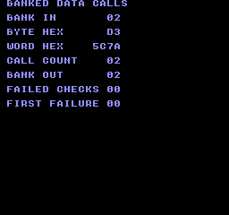
ビルドコマンド
New-Item -ItemType Directory -Force .\out | Out-Null
.\kitaqfc\kitaqfc.exe .\kitaq-docs\samples\api-examples\fc\banked_data_calls.c -I .\kitaqfc\lib -I .\kitaq-docs\samples -o .\out\banked_data_calls.nes --mapper=mmc3 --nes-chr=.\kitaq-docs\samples\font.chr --no-cache --no-disasm実装とソース
kitaqfc/lib/intrinsics.h:77
PRG bank Resolve a symbol or function placement to its byte bank number at compilation time.
kitaqfc/kitaqfc/CodeGenerator.cs:6446
if (expr.MatchAny(Tag.Call, out funcExpr, out args) &&
funcExpr != null &&
funcExpr.Match(Tag.Name, out name) &&
string.Equals(name, "__bankof", StringComparison.Ordinal) &&
args != null &&
args.Length == 1 &&
args[0] != null &&
args[0].Match(Tag.Name, out string bankedSymbol))
{
// Resolve __bankof from placement metadata and keep the byte-sized bank value.
value = ResolveSymbolBank(bankedSymbol) & 0xFF;
return true;
}__bankswitch
コンパイラのマッパー別処理で論理PRGバンクを選び、内部のバンク状態を更新します。マッピングの変更は呼び出し後も続き、bankライブラリが別に保持する記録は更新しません。
書式
void __bankswitch(u8 bank);引数
bank符号なし8ビットのROMバンク番号です。呼び出しでは関数の配置と一致させ、読み出しでは転送元のマッピングを指定します。対象カートリッジで有効な範囲を使用してください。
戻り値
ありません（void）。
使用条件と制限
切り替えを維持する操作では、実行中のコードや戻り先を見えなくしてはいけません。サンプルのように、この呼び出し、使用するbank_switch本体、その後に続くコードを共通・固定バンク0に置いてください。
ライブラリの記録は0で始まり、カートリッジの起動時のマッピングを調べるものではありません。bank_switchで初期化してください。組み込み関数による直接切り替えやマッパーへの直接書き込みではこの記録を更新しないため、bank_get_currentで実際のハードウェア状態を検証することはできません。
FCの切り替え番号はコンパイラの論理バンク番号です。0は共通ROMを示し、切り替え先ではありません。補助処理は0をバンク1として扱います。SUROM512の有効範囲は1〜30で、切り替え組み込み関数へ直接渡す範囲外の定数はビルドエラーです。範囲外の実行時値では1を選び、マッパー異常状態を設定します。共通ROMは、バンク0への切り替えを要求せず直接読んでください。
使用例
__bankswitch(1);
bank_expect(home1[0]==0xA1,19);
bank_expect(bank_get_current()==2,20); // Intrinsics bypass the library record.
__bankswitch(2);呼び出し部分のコード例です。完全なプログラムに組み込む際は、記載した初期化とバッファの条件を満たしてください。
期待する結果
最初のbank_switch(2)でバンク2を記録して選びます。その後の直接切り替えではバンク1を選び、home1からA1を読みますが、bank_get_currentの記録は2です。戻すとhome2から再びB2を読めます。
完成プログラムでは、バンク番号と近アドレスによるデータの指定、バンクをまたぐコールバック、ライブラリの記録と実際のマッピングの区別を学べます。数値はすべて16進数です。BANK INとBANK OUTは02、BYTE HEXはD3、WORD HEXは5C7A、FAILED CHECKSとFIRST FAILUREはどちらも00が期待値です。CGBとFCは青字、DMGは黒字で表示します。
CALL COUNTは02です。far_callマクロと__farcallがそれぞれ1回コールバックを実行します。
ビルドコマンド
New-Item -ItemType Directory -Force .\out | Out-Null
.\kitaqfc\kitaqfc.exe .\kitaq-docs\samples\api-examples\fc\banked_data_calls.c -I .\kitaqfc\lib -I .\kitaq-docs\samples -o .\out\banked_data_calls.nes --mapper=mmc3 --nes-chr=.\kitaq-docs\samples\font.chr --no-cache --no-disasm実装とソース
kitaqfc/lib/intrinsics.h:79
Select the mapper-specific PRG bank; the common bank and legal bank range depend on the target board.
kitaqfc/kitaqfc/CodeGenerator.cs:4451
case "__prg_bank_set":
case "__bankswitch":
if (!Need(1)) return true;
if (Program.NesMapperProfile.IsSurom512 && TryEvaluateConstant(args[0], out int constantBank) && (constantBank < 1 || constantBank > 30))
{
Program.Error("error KQFC2603 KQFC-SUROM-BANK-RANGE: {0} constant bank {1} is outside 1..30; common bank 0 is not a switch target.", funcName, constantBank);
return true;
}
_mapperWritingFunctions.Add(_currentFunctionName);
Load1(args[0]); EmitAsm("JSR", Abs("__kq_prg_set_bank_a")); return true;__bit_clearコンパイラ組み込み
コンパイラ組み込み命令に関するAPIです。内容や状態を消去します。正確な引数の単位・終端・戻り値の条件は、以下の宣言・原注記・実装に従います。
void __bit_clear(u8* base, u16 bit);引数（左から順）：u8* base, u16 bit。配列・ポインタでは必要な領域を用意し、処理が終わるまで有効に保ちます。
Clear the indexed bit in caller storage; no bounds check or interrupt exclusion is inserted.
引数受け渡し例
void example_bit_clear(u8* base, u16 bit) {
__bit_clear(base, bit);
}オブジェクトの初期化、バッファの大きさ、ROMバンク、機器状態は上位コードで準備します。この関数断片単体は実行確認していません。
宣言・識別子の出典：kitaqfc/lib/intrinsics.h:45
__bit_setコンパイラ組み込み
コンパイラ組み込み命令に関するAPIです。値や動作条件を設定します。正確な引数の単位・終端・戻り値の条件は、以下の宣言・原注記・実装に従います。
void __bit_set(u8* base, u16 bit);引数（左から順）：u8* base, u16 bit。配列・ポインタでは必要な領域を用意し、処理が終わるまで有効に保ちます。
Set the indexed bit in caller storage without changing the other seven bits in that byte.
呼び出し例（周辺コードの断片）
m_text(2,3,"BITS MEMORY");
u8 data[4]; u8 copy[4];
__memset(data,0,4); __bit_set(data,3); __bit_toggle(data,1);
__memcpy(copy,data,4); m_number(copy[0]);
while (1) { m_wait(); }
}出典：kitaq-docs/samples/fc_bits_memory.c:11
宣言・識別子の出典：kitaqfc/lib/intrinsics.h:43
__bit_testコンパイラ組み込み
コンパイラ組み込み命令に関するAPIです。引数に対応する処理を実行します。正確な引数の単位・終端・戻り値の条件は、以下の宣言・原注記・実装に従います。
u8 __bit_test(u8* base, u16 bit);引数（左から順）：u8* base, u16 bit。配列・ポインタでは必要な領域を用意し、処理が終わるまで有効に保ちます。
戻り値の型：u8。意味・成功値・失敗値は原注記と実装のreturn条件を参照してください。
Return 0 or 1 for bit at base[bit>>3], using mask 1<<(bit&7); the caller supplies enough storage.
引数受け渡し例
u8 example_bit_test(u8* base, u16 bit) {
return __bit_test(base, bit);
}オブジェクトの初期化、バッファの大きさ、ROMバンク、機器状態は上位コードで準備します。この関数断片単体は実行確認していません。
宣言・識別子の出典：kitaqfc/lib/intrinsics.h:41
__bit_toggleコンパイラ組み込み
コンパイラ組み込み命令に関するAPIです。引数に対応する処理を実行します。正確な引数の単位・終端・戻り値の条件は、以下の宣言・原注記・実装に従います。
void __bit_toggle(u8* base, u16 bit);引数（左から順）：u8* base, u16 bit。配列・ポインタでは必要な領域を用意し、処理が終わるまで有効に保ちます。
XOR the indexed bit in caller storage; coordinate concurrent writers to avoid lost updates.
呼び出し例（周辺コードの断片）
m_text(2,3,"BITS MEMORY");
u8 data[4]; u8 copy[4];
__memset(data,0,4); __bit_set(data,3); __bit_toggle(data,1);
__memcpy(copy,data,4); m_number(copy[0]);
while (1) { m_wait(); }
}出典：kitaq-docs/samples/fc_bits_memory.c:11
宣言・識別子の出典：kitaqfc/lib/intrinsics.h:47
__chr_bank_setコンパイラ組み込み
コンパイラ組み込み命令に関するAPIです。値や動作条件を設定します。正確な引数の単位・終端・戻り値の条件は、以下の宣言・原注記・実装に従います。
void __chr_bank_set(u8 bank);引数（左から順）：u8 bank。配列・ポインタでは必要な領域を用意し、処理が終わるまで有効に保ちます。
Select a CNROM bank or MMC3 register 0 bank; unsupported mapper profiles produce a compile error.
引数受け渡し例
void example_chr_bank_set(u8 bank) {
__chr_bank_set(bank);
}オブジェクトの初期化、バッファの大きさ、ROMバンク、機器状態は上位コードで準備します。この関数断片単体は実行確認していません。
宣言・識別子の出典：kitaqfc/lib/intrinsics.h:311
__chr_bank_set0コンパイラ組み込み
コンパイラ組み込み命令に関するAPIです。値や動作条件を設定します。正確な引数の単位・終端・戻り値の条件は、以下の宣言・原注記・実装に従います。
void __chr_bank_set0(u8 bank);引数（左から順）：u8 bank。配列・ポインタでは必要な領域を用意し、処理が終わるまで有効に保ちます。
Use the same CNROM/MMC3 register 0 selection as __chr_bank_set.
引数受け渡し例
void example_chr_bank_set0(u8 bank) {
__chr_bank_set0(bank);
}オブジェクトの初期化、バッファの大きさ、ROMバンク、機器状態は上位コードで準備します。この関数断片単体は実行確認していません。
宣言・識別子の出典：kitaqfc/lib/intrinsics.h:313
__chr_bank_set1コンパイラ組み込み
コンパイラ組み込み命令に関するAPIです。値や動作条件を設定します。正確な引数の単位・終端・戻り値の条件は、以下の宣言・原注記・実装に従います。
void __chr_bank_set1(u8 bank);引数（左から順）：u8 bank。配列・ポインタでは必要な領域を用意し、処理が終わるまで有効に保ちます。
Select MMC3 register 1, or the same full CNROM bank register; this is mapper-specific banking.
引数受け渡し例
void example_chr_bank_set1(u8 bank) {
__chr_bank_set1(bank);
}オブジェクトの初期化、バッファの大きさ、ROMバンク、機器状態は上位コードで準備します。この関数断片単体は実行確認していません。
宣言・識別子の出典：kitaqfc/lib/intrinsics.h:315
__copy16コンパイラ組み込み
コンパイラ組み込み命令に関するAPIです。データを複製します。正確な引数の単位・終端・戻り値の条件は、以下の宣言・原注記・実装に従います。
void __copy16(u8* dst, const u8* src);引数（左から順）：u8* dst, const u8* src。配列・ポインタでは必要な領域を用意し、処理が終わるまで有効に保ちます。
Copy exactly 16 bytes forward; both ranges must be valid and suitably non-overlapping.
引数受け渡し例
void example_copy16(u8* dst, const u8* src) {
__copy16(dst, src);
}オブジェクトの初期化、バッファの大きさ、ROMバンク、機器状態は上位コードで準備します。この関数断片単体は実行確認していません。
宣言・識別子の出典：kitaqfc/lib/intrinsics.h:27
__copy32コンパイラ組み込み
コンパイラ組み込み命令に関するAPIです。データを複製します。正確な引数の単位・終端・戻り値の条件は、以下の宣言・原注記・実装に従います。
void __copy32(u8* dst, const u8* src);引数（左から順）：u8* dst, const u8* src。配列・ポインタでは必要な領域を用意し、処理が終わるまで有効に保ちます。
Copy exactly 32 bytes forward; bank selection and source lifetime belong to the caller.
引数受け渡し例
void example_copy32(u8* dst, const u8* src) {
__copy32(dst, src);
}オブジェクトの初期化、バッファの大きさ、ROMバンク、機器状態は上位コードで準備します。この関数断片単体は実行確認していません。
宣言・識別子の出典：kitaqfc/lib/intrinsics.h:29
__dot2_q8_8コンパイラ組み込み
コンパイラ組み込み命令に関するAPIです。引数に対応する処理を実行します。正確な引数の単位・終端・戻り値の条件は、以下の宣言・原注記・実装に従います。
u16 __dot2_q8_8(u16 a0, u16 a1, u8 b0, u8 b1);引数（左から順）：u16 a0, u16 a1, u8 b0, u8 b1。配列・ポインタでは必要な領域を用意し、処理が終わるまで有効に保ちます。
戻り値の型：u16。意味・成功値・失敗値は原注記と実装のreturn条件を参照してください。
Return a0*b0+a1*b1 modulo 65536. The FC backend inserts no Q8.8 rescaling or rounding.
引数受け渡し例
u16 example_dot2_q8_8(u16 a0, u16 a1, u8 b0, u8 b1) {
return __dot2_q8_8(a0, a1, b0, b1);
}オブジェクトの初期化、バッファの大きさ、ROMバンク、機器状態は上位コードで準備します。この関数断片単体は実行確認していません。
宣言・識別子の出典：kitaqfc/lib/intrinsics.h:63
__dot3_q8_8コンパイラ組み込み
コンパイラ組み込み命令に関するAPIです。引数に対応する処理を実行します。正確な引数の単位・終端・戻り値の条件は、以下の宣言・原注記・実装に従います。
u16 __dot3_q8_8(u16 a0, u16 a1, u16 a2, u8 b0, u8 b1, u8 b2);引数（左から順）：u16 a0, u16 a1, u16 a2, u8 b0, u8 b1, u8 b2。配列・ポインタでは必要な領域を用意し、処理が終わるまで有効に保ちます。
戻り値の型：u16。意味・成功値・失敗値は原注記と実装のreturn条件を参照してください。
Sum three unsigned word-by-byte products modulo 65536 without a final scaling shift.
引数受け渡し例
u16 example_dot3_q8_8(u16 a0, u16 a1, u16 a2, u8 b0, u8 b1, u8 b2) {
return __dot3_q8_8(a0, a1, a2, b0, b1, b2);
}オブジェクトの初期化、バッファの大きさ、ROMバンク、機器状態は上位コードで準備します。この関数断片単体は実行確認していません。
宣言・識別子の出典：kitaqfc/lib/intrinsics.h:65
__exp_pad_read1
__exp_pad_read1は__pad_read1_d1と同じコンパイラ内ヘルパーを呼びます。$4016の拡張入力D1を、同じラッチ手順で読み取り、8ビットの結果を返します。副作用も同じです。拡張入力用であることを示す名前であり、別の機器モードを有効にしたりD0とD1を合成したりするものではありません。
書式
u8 __exp_pad_read1(void);戻り値
NESの生のビット順による8ビットの押下中マスクです。各ビット1が押されているボタンを表し、0はなしです。0/1に正規化された真偽値ではありません。
使用条件と制限
NESの生の形式は A=0x01、B=0x02、SELECT=0x04、START=0x08、UP=0x10、DOWN=0x20、LEFT=0x40、RIGHT=0x80 です。ビット1が押下中です。nes_pad_* と生の __pad_* の結果にはこの値を使い、input.h の共通 BTN_* マスクとは混同しないでください。
選択したD1に互換性のある8ビットのシリアルパッド信号を出す周辺機器で使います。接続機器の識別や、すべての拡張機器の通信方式への対応は行いません。各呼び出しで両コントローラーの読み取り列をラッチし直すため、1つの読み取りを完了させてから次を始めてください。結果は新たに取得した状態で、input_*やnes_pad1_*の保存済み状態は更新しません。
公開版KUROSAKIのコントローラーモデルが返すのはD0と固定のビット6だけです。そのため通常のボタンを押していても、同エミュレーターではD1とマイクのビットは常に0になります。付属の検証で確認したのは、ビルド、通常ボタン入力、この0の信号表示です。周辺機器からの0以外の信号、電気的タイミング、実機での互換性は未確認です。ここで0が表示されても、接続機器が動作する証明や、実機でも読み取れないという証明にはなりません。
使用例
expansion_first=__exp_pad_read1(); // Same helper as __pad_read1_d1.呼び出し部分のコード例です。完全なプログラムに組み込む際は、記載した初期化とバッファの条件を満たしてください。
期待する結果
通常入力のD0、拡張入力のD1、マイクのデジタルレベルを比較するプログラムです。状態が取得されるまでコントローラー1のAとコントローラー2のBを押します。NORMAL P1とNORMAL P2は001、002になります。付属のKUROSAKI実行結果では、D1 PORT 1、D1 PORT 2、EXP ALIAS 1、EXP ALIAS 2、MIC LEVEL、MIC DIRECTはすべて000です。対応する信号線がエミュレートされていないためです。取得後の表示は固定されます。適切な周辺機器と信号線の実装がある環境では実際の入力で値が変わるため、この0を期待値とせず、上記のビット配置に従って読み取ってください。
公開版KUROSAKIのコントローラーモデルが返すのはD0と固定のビット6だけです。そのため通常のボタンを押していても、同エミュレーターではD1とマイクのビットは常に0になります。付属の検証で確認したのは、ビルド、通常ボタン入力、この0の信号表示です。周辺機器からの0以外の信号、電気的タイミング、実機での互換性は未確認です。ここで0が表示されても、接続機器が動作する証明や、実機でも読み取れないという証明にはなりません。
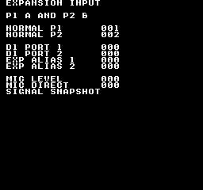
ビルドコマンド
New-Item -ItemType Directory -Force .\out | Out-Null
.\kitaqfc\kitaqfc.exe .\kitaq-docs\samples\api-examples\fc\expansion_input.c -I .\kitaq-docs\samples -I .\kitaqfc\lib -o .\out\expansion_input.nes --mapper=nrom --nes-chr=.\kitaq-docs\samples\font.chr --no-cache --no-disasm実装とソース
kitaqfc/lib/intrinsics.h:223
Alias the port-1 D1 controller reader; the attached device must use the expected serial protocol.
__exp_pad_read2
__exp_pad_read2は__pad_read2_d1と同じコンパイラ内ヘルパーを呼びます。$4017の拡張入力D1を、同じラッチ手順で読み取り、8ビットの結果を返します。副作用も同じです。拡張入力用であることを示す名前であり、別の機器モードを有効にしたりD0とD1を合成したりするものではありません。
書式
u8 __exp_pad_read2(void);戻り値
NESの生のビット順による8ビットの押下中マスクです。各ビット1が押されているボタンを表し、0はなしです。0/1に正規化された真偽値ではありません。
使用条件と制限
NESの生の形式は A=0x01、B=0x02、SELECT=0x04、START=0x08、UP=0x10、DOWN=0x20、LEFT=0x40、RIGHT=0x80 です。ビット1が押下中です。nes_pad_* と生の __pad_* の結果にはこの値を使い、input.h の共通 BTN_* マスクとは混同しないでください。
選択したD1に互換性のある8ビットのシリアルパッド信号を出す周辺機器で使います。接続機器の識別や、すべての拡張機器の通信方式への対応は行いません。各呼び出しで両コントローラーの読み取り列をラッチし直すため、1つの読み取りを完了させてから次を始めてください。結果は新たに取得した状態で、input_*やnes_pad1_*の保存済み状態は更新しません。
公開版KUROSAKIのコントローラーモデルが返すのはD0と固定のビット6だけです。そのため通常のボタンを押していても、同エミュレーターではD1とマイクのビットは常に0になります。付属の検証で確認したのは、ビルド、通常ボタン入力、この0の信号表示です。周辺機器からの0以外の信号、電気的タイミング、実機での互換性は未確認です。ここで0が表示されても、接続機器が動作する証明や、実機でも読み取れないという証明にはなりません。
使用例
expansion_second=__exp_pad_read2(); // Same helper as __pad_read2_d1.呼び出し部分のコード例です。完全なプログラムに組み込む際は、記載した初期化とバッファの条件を満たしてください。
期待する結果
通常入力のD0、拡張入力のD1、マイクのデジタルレベルを比較するプログラムです。状態が取得されるまでコントローラー1のAとコントローラー2のBを押します。NORMAL P1とNORMAL P2は001、002になります。付属のKUROSAKI実行結果では、D1 PORT 1、D1 PORT 2、EXP ALIAS 1、EXP ALIAS 2、MIC LEVEL、MIC DIRECTはすべて000です。対応する信号線がエミュレートされていないためです。取得後の表示は固定されます。適切な周辺機器と信号線の実装がある環境では実際の入力で値が変わるため、この0を期待値とせず、上記のビット配置に従って読み取ってください。
公開版KUROSAKIのコントローラーモデルが返すのはD0と固定のビット6だけです。そのため通常のボタンを押していても、同エミュレーターではD1とマイクのビットは常に0になります。付属の検証で確認したのは、ビルド、通常ボタン入力、この0の信号表示です。周辺機器からの0以外の信号、電気的タイミング、実機での互換性は未確認です。ここで0が表示されても、接続機器が動作する証明や、実機でも読み取れないという証明にはなりません。
ビルドコマンド
New-Item -ItemType Directory -Force .\out | Out-Null
.\kitaqfc\kitaqfc.exe .\kitaq-docs\samples\api-examples\fc\expansion_input.c -I .\kitaq-docs\samples -I .\kitaqfc\lib -o .\out\expansion_input.nes --mapper=nrom --nes-chr=.\kitaq-docs\samples\font.chr --no-cache --no-disasm実装とソース
kitaqfc/lib/intrinsics.h:225
Alias the port-2 D1 controller reader; this is not an expansion-device discovery operation.
__far_memcpy
ROMバンクを一時的に切り替え、srcからdstへアドレスの小さい方からlenバイトをコピーし、コンパイラが保持していたROMバンクへ戻します。この機種では__farmemcpyと__far_memcpyは同じ実装を使います。
書式
void __far_memcpy(u8* dst, u8 bank, u16 src, u16 len);引数
dst書き込み先のメモリです。実際のコピー量を収められる領域を確保してください。0バイト転送以外では、ヌルポインタや無効な書き込み先を検出する処理はありません。
bankコピー元ROMのバンクを選ぶ8ビット値です。カートリッジとコンパイラのバンク配置に対応する番号を使います。コピー元アドレスとは別に指定します。
src選んだROM配置でのコピー元CPUアドレスを16ビット値で指定します。FC版の宣言は
u16なので、素材ポインタは(u16)pointerの形で変換します。lenバイト数を0～65535で指定します。0ならメモリはコピーしませんが、バンクの選択と復帰の処理は実行します。
戻り値
ありません（void）。
使用条件と制限
コピー元全体が目的のROM配置で読め、コピー先全体が書き込み可能な範囲になるようにしてください。バンク窓の端で次のバンクへ進む処理、memmoveのような重なりへの対応、VRAMの安全な書き込み制御はありません。VRAMには描画用の転送APIを使います。
サンプルの呼び出し側コードは固定バンク0に配置し、コピー元の切り替えで実行中のコードが見えなくなることを防ぎます。転送は同期処理です。転送中に割り込み側から別のバンク切り替えコピーを実行したり、この関数だけでアプリ全体の割り込み安全性が確保されると考えたりしないでください。
使用例
__far_memcpy(buffer,payload_bank,(u16)payload_pointer,32);
expect(*asset_bank_marker==0xA1 && bank_get_current()==1,27);
for(i=0;i<32;i++) expect(buffer[(__safe_index u8)i]==expected_shape_byte(i),28);
buffer[32]=0x55;
__far_memcpy(buffer+32,2,(u16)asset_shapes,0);
expect(buffer[32]==0x55 && *asset_bank_marker==0xA1,30);呼び出し部分のコード例です。完全なプログラムに組み込む際は、記載した初期化とバッファの条件を満たしてください。
期待する結果
バンク1を選択した状態から、素材のバンク2にある絵柄2枚、32バイトをコピーします。コピーした全バイト、バンク1への復帰、長さ0のコピーで確認値0x55が変わらないことを検査します。
期待画像では、赤い横一列がピクセル座標(16,32)から始まり、72×8ピクセルを占めます。8×8の三角形、1ピクセル枠の8×8の正方形、左4列を塗ったタイルの順に、3回繰り返します。三角形は左上の1ピクセルから最下段の8ピクセルまで広がります。
FC版では、(16,64)の青い三角形と枠が__far_memcpyの結果、(16,96)の緑の組がasset_load_rawの後にCHRへ転送した結果です。黒地の各組は16×8ピクセルです。数値だけでなく、コピーした絵柄のバイト列が正しいことを目で確認できます。
期待する表示はFAILED CHECKS 000とFIRST FAILURE 00です。検証では300フレーム実行し、文字、図形の形、色を期待値と比較します。これはエミュレータ上の検証であり、実機試験ではありません。
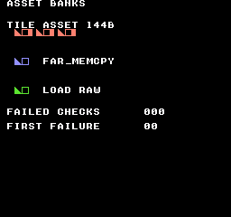
ビルドコマンド
New-Item -ItemType Directory -Force .\out | Out-Null
.\kitaqfc\kitaqfc.exe .\kitaq-docs\samples\api-examples\fc\asset_banks.c -I .\kitaqfc\lib -I .\kitaq-docs\samples -o .\out\asset_banks.nes --mapper=mmc1 --board=surom512 --no-cache --no-disasm実装とソース
kitaqfc/lib/intrinsics.h:86
Switch to the source bank, copy len bytes forward and restore the previous bank. Keep destination RAM and helper code accessible throughout; overlapping copies are not memmove.
__farcall
引数のない名前付き関数を呼び出します。FCコンパイラは関数の配置バンクから、直接呼び出すか、バンク復元付きの補助処理を使うか決めます。bank引数は評価しますが、実際の選択先は関数の配置で決まります。
書式
__farcall(bank, function_name);引数
bank符号なし8ビットのROMバンク番号です。呼び出しでは関数の配置と一致させ、読み出しでは転送元のマッピングを指定します。対象カートリッジで有効な範囲を使用してください。
func宣言済みの、引数のない関数名です。この名前指定の組み込み呼び出しには、関数アドレスを格納した変数を渡せません。bank引数をコールバックの引数として渡すこともありません。
戻り値
戻り値の型は呼び出した関数に従います。voidのコールバックは値を返さず、u8・u16のコールバックはその値を返します。掲載サンプルはvoidのコールバックを使います。
使用条件と制限
これらの呼び出しは、ユーザー引数を渡したり、コールバックを割り込みに対して再入可能にしたりするものではありません。コールバック自身のデータ・スタック・割り込みの使い方を適切に管理してください。バンク復帰は入れ子呼び出しと反復呼び出しで検証していますが、この例で実機や任意の割り込みタイミングを検証したわけではありません。
FCの切り替え番号はコンパイラの論理バンク番号です。0は共通ROMを示し、切り替え先ではありません。補助処理は0をバンク1として扱います。SUROM512の有効範囲は1〜30で、切り替え組み込み関数へ直接渡す範囲外の定数はビルドエラーです。範囲外の実行時値では1を選び、マッパー異常状態を設定します。共通ROMは、バンク0への切り替えを要求せず直接読んでください。
使用例
__farcall(3,callback);
bank_expect(callback_count==2 && callback_byte==0xD3,16);呼び出し部分のコード例です。完全なプログラムに組み込む際は、記載した初期化とバッファの条件を満たしてください。
期待する結果
完成プログラムのこの位置では、__farcallによってcallback_countが2になります。コールバックはバンク3からD3を読みます。その後にhome2を近ポインターで読んでB2を確認し、バンク2が選ばれた状態で復帰したことを確かめます。
完成プログラムでは、バンク番号と近アドレスによるデータの指定、バンクをまたぐコールバック、ライブラリの記録と実際のマッピングの区別を学べます。数値はすべて16進数です。BANK INとBANK OUTは02、BYTE HEXはD3、WORD HEXは5C7A、FAILED CHECKSとFIRST FAILUREはどちらも00が期待値です。CGBとFCは青字、DMGは黒字で表示します。
CALL COUNTは02です。far_callマクロと__farcallがそれぞれ1回コールバックを実行します。
ビルドコマンド
New-Item -ItemType Directory -Force .\out | Out-Null
.\kitaqfc\kitaqfc.exe .\kitaq-docs\samples\api-examples\fc\banked_data_calls.c -I .\kitaqfc\lib -I .\kitaq-docs\samples -o .\out\banked_data_calls.nes --mapper=mmc3 --nes-chr=.\kitaq-docs\samples\font.chr --no-cache --no-disasm実装とソース
kitaqfc/lib/intrinsics.h:83
Call a declared zero-argument function; placement selects its bank and its declared type determines the result.
kitaqfc/kitaqfc/CodeGenerator.cs:3843
if (string.Equals(funcName, "__farcall", StringComparison.Ordinal))
{
Expr[] farArgs = args ?? Array.Empty<Expr>();
if (farArgs.Length != 2)
{
Program.Error("error KQ0000: __farcall(bank, func) expects exactly 2 arguments.");
return;
}
string targetName;
if (!farArgs[1].Match(Tag.Name, out targetName))
{
Program.Error("error KQ0000: __farcall(bank, func) requires the 2nd argument to be a function name.");
return;
}
// This intrinsic supplies no callback arguments. A variable name
// is not a static function target, even when its value is a pointer.
if (!_functionParameters.TryGetValue(targetName, out FieldInfo[] farParameters))
{
Program.Error("error KQFC2610: __farcall requires a declared function name; use an ordinary typed call for a function pointer.");
return;
}
if (farParameters.Length != 0)
{
Program.Error("error KQFC2610: __farcall requires a callback with no parameters.");
return;
}
if (Program.NesMapperProfile.IsSurom512 &&
TryEvaluateConstant(farArgs[0], out int constantFarBank) &&
(constantFarBank < 1 || constantFarBank > 30))
{
Program.Error("error KQFC2603 KQFC-SUROM-BANK-RANGE: __farcall constant bank {0} is outside 1..30; common bank 0 is not a switch target.", constantFarBank);
return;
}
// Evaluate the requested far-call bank byte; the following dispatch uses the target function bank metadata.
EmitLoadValue(farArgs[0], ctx, 1);
int callerBank = ctx == null ? 0 : ctx.Bank;
int calleeBank = GetFunctionBank(targetName);
if (ShouldUseFdsOverlayThunk(callerBank, calleeBank))
{
string fdsThunkName = EnsureFdsOverlayThunk(targetName, calleeBank);
EmitAsm("JSR", Abs(fdsThunkName));
RecordCallEdge(targetName, calleeBank, "fds_overlay_thunk", viaThunk: true, viaFarcall: true);
return;
}
bool bankedPrg = Program.NesMapperProfile.SupportsPrgBanking || Program.NesMapperProfile.UsesDuplicatedCommonBank;
bool directSafe = !bankedPrg || calleeBank == 0 || calleeBank == callerBank;
if (directSafe)
{
EmitAsm("JSR", Abs(targetName));
RecordCallEdge(targetName, calleeBank, "direct", viaThunk: false, viaFarcall: true);
return;
}
string thunkName = EnsureBankThunk(targetName, calleeBank);
EmitAsm("JSR", Abs(thunkName));
RecordCallEdge(targetName, calleeBank, "bank_thunk", viaThunk: true, viaFarcall: true);
return;
}__farpeek16
バンクを一時的に選び、addrとaddr+1からリトルエンディアンの16ビット値を読んで復帰します。far_data_read16が利用する組み込み関数です。
書式
u16 __farpeek16(u8 bank, u16 addr);引数
bank符号なし8ビットのROMバンク番号です。呼び出しでは関数の配置と一致させ、読み出しでは転送元のマッピングを指定します。対象カートリッジで有効な範囲を使用してください。
addr選んだROM配置でのコピー元CPUアドレスを16ビット値で指定します。FC版の宣言は
u16なので、素材ポインタは(u16)pointerの形で変換します。
戻り値
読み出したリトルエンディアンのワードをu16（0〜65535）で返します。
使用条件と制限
対象のバイトまたはワード全体を、選択したCPUマッピングで読める必要があります。ポインターの検査、アドレスの切り詰め、ウィンドウ境界での次バンクへの自動切り替えは行いません。ワード読み出しには連続する有効な2バイトが必要です。
遠方読み出しとコピーは同期処理で、コンパイラの共有作業領域を使います。処理中に割り込みから別のバンク転送を実行し、同じ作業領域を上書きしないでください。GBのコピー補助処理は、復帰バンクの保存にもHRAMの共有領域を1か所使います。例では競合する転送割り込みを設けず、固定コードから実行します。
FCの切り替え番号はコンパイラの論理バンク番号です。0は共通ROMを示し、切り替え先ではありません。補助処理は0をバンク1として扱います。SUROM512の有効範囲は1〜30で、切り替え組み込み関数へ直接渡す範囲外の定数はビルドエラーです。範囲外の実行時値では1を選び、マッパー異常状態を設定します。共通ROMは、バンク0への切り替えを要求せず直接読んでください。
使用例
bank_expect(__farpeek16(3,(u16)(payload+1))==0x5C7A,14);呼び出し部分のコード例です。完全なプログラムに組み込む際は、記載した初期化とバッファの条件を満たしてください。
期待する結果
この断片では__farpeek16でバンク3のpayload+1を読み、5C7Aを確認します。完成プログラムでは、home2の近ポインター読み出しでもバンク2への復帰を確認します。
完成プログラムでは、バンク番号と近アドレスによるデータの指定、バンクをまたぐコールバック、ライブラリの記録と実際のマッピングの区別を学べます。数値はすべて16進数です。BANK INとBANK OUTは02、BYTE HEXはD3、WORD HEXは5C7A、FAILED CHECKSとFIRST FAILUREはどちらも00が期待値です。CGBとFCは青字、DMGは黒字で表示します。
CALL COUNTは02です。far_callマクロと__farcallがそれぞれ1回コールバックを実行します。
ビルドコマンド
New-Item -ItemType Directory -Force .\out | Out-Null
.\kitaqfc\kitaqfc.exe .\kitaq-docs\samples\api-examples\fc\banked_data_calls.c -I .\kitaqfc\lib -I .\kitaq-docs\samples -o .\out\banked_data_calls.nes --mapper=mmc3 --nes-chr=.\kitaq-docs\samples\font.chr --no-cache --no-disasm実装とソース
kitaqfc/lib/intrinsics.h:90
Temporarily select bank and read a little-endian word, then restore the previous mapping.
kitaqfc/kitaqfc/CodeGenerator.cs:8218
EmitHelperStart("__farpeek16");
// args: bank, addr16. Return A=lo, X=hi.
EmitAsm("LDA", Mem(_runtimeCurrentBankAddress));
EmitAsm("PHA");
EmitAsm("LDA", Mem(CallArgBase));
EmitAsm("JSR", Abs("__kq_prg_set_bank_a"));
EmitAsm("LDY", Imm(0));
EmitAsm("LDA", IndY(CallArgBase + 1));
EmitAsm("STA", Mem(_runtimeIntrinsicTmp0Address));
EmitAsm("INY");
EmitAsm("LDA", IndY(CallArgBase + 1));
EmitAsm("STA", Mem(_runtimeIntrinsicTmp1Address));
EmitAsm("PLA");
EmitAsm("JSR", Abs("__kq_prg_set_bank_a"));
EmitAsm("LDA", Mem(_runtimeIntrinsicTmp0Address));
EmitAsm("LDX", Mem(_runtimeIntrinsicTmp1Address));
EmitAsm("RTS");
// Consume the word count while advancing source/destination pointers; zero count still restores the saved bank.__farpeek8
指定バンクを一時的に選び、CPUアドレスから1バイト読んで元のバンクに戻します。far_data_read8が利用する組み込み関数です。
書式
u8 __farpeek8(u8 bank, u16 addr);引数
bank符号なし8ビットのROMバンク番号です。呼び出しでは関数の配置と一致させ、読み出しでは転送元のマッピングを指定します。対象カートリッジで有効な範囲を使用してください。
addr選んだROM配置でのコピー元CPUアドレスを16ビット値で指定します。FC版の宣言は
u16なので、素材ポインタは(u16)pointerの形で変換します。
戻り値
読み出したバイトをu8（0〜255）で返します。
使用条件と制限
対象のバイトまたはワード全体を、選択したCPUマッピングで読める必要があります。ポインターの検査、アドレスの切り詰め、ウィンドウ境界での次バンクへの自動切り替えは行いません。ワード読み出しには連続する有効な2バイトが必要です。
遠方読み出しとコピーは同期処理で、コンパイラの共有作業領域を使います。処理中に割り込みから別のバンク転送を実行し、同じ作業領域を上書きしないでください。GBのコピー補助処理は、復帰バンクの保存にもHRAMの共有領域を1か所使います。例では競合する転送割り込みを設けず、固定コードから実行します。
FCの切り替え番号はコンパイラの論理バンク番号です。0は共通ROMを示し、切り替え先ではありません。補助処理は0をバンク1として扱います。SUROM512の有効範囲は1〜30で、切り替え組み込み関数へ直接渡す範囲外の定数はビルドエラーです。範囲外の実行時値では1を選び、マッパー異常状態を設定します。共通ROMは、バンク0への切り替えを要求せず直接読んでください。
使用例
bank_expect(__farpeek8(3,(u16)payload)==0xD3,13);呼び出し部分のコード例です。完全なプログラムに組み込む際は、記載した初期化とバッファの条件を満たしてください。
期待する結果
この断片では__farpeek8でバンク3のpayloadを読み、D3を確認します。完成プログラムでは、home2の近ポインター読み出しでもバンク2への復帰を確認します。
完成プログラムでは、バンク番号と近アドレスによるデータの指定、バンクをまたぐコールバック、ライブラリの記録と実際のマッピングの区別を学べます。数値はすべて16進数です。BANK INとBANK OUTは02、BYTE HEXはD3、WORD HEXは5C7A、FAILED CHECKSとFIRST FAILUREはどちらも00が期待値です。CGBとFCは青字、DMGは黒字で表示します。
CALL COUNTは02です。far_callマクロと__farcallがそれぞれ1回コールバックを実行します。
ビルドコマンド
New-Item -ItemType Directory -Force .\out | Out-Null
.\kitaqfc\kitaqfc.exe .\kitaq-docs\samples\api-examples\fc\banked_data_calls.c -I .\kitaqfc\lib -I .\kitaq-docs\samples -o .\out\banked_data_calls.nes --mapper=mmc3 --nes-chr=.\kitaq-docs\samples\font.chr --no-cache --no-disasm実装とソース
kitaqfc/lib/intrinsics.h:88
Temporarily select bank, read one byte at addr and restore the prior bank mapping.
kitaqfc/kitaqfc/CodeGenerator.cs:8203
EmitHelperStart("__farpeek8");
// args: bank, addr16. Return A.
EmitAsm("LDA", Mem(_runtimeCurrentBankAddress));
EmitAsm("PHA");
EmitAsm("LDA", Mem(CallArgBase));
EmitAsm("JSR", Abs("__kq_prg_set_bank_a"));
EmitAsm("LDY", Imm(0));
EmitAsm("LDA", IndY(CallArgBase + 1));
EmitAsm("STA", Mem(_runtimeIntrinsicTmp0Address));
EmitAsm("PLA");
EmitAsm("JSR", Abs("__kq_prg_set_bank_a"));
EmitAsm("LDA", Mem(_runtimeIntrinsicTmp0Address));
EmitAsm("RTS");
// Retain both fetched bytes across bank restoration and return the word in A/X.__fkb_detectコンパイラ組み込み
コンパイラ組み込み命令に関するAPIです。引数に対応する処理を実行します。正確な引数の単位・終端・戻り値の条件は、以下の宣言・原注記・実装に従います。
u8 __fkb_detect(void);戻り値の型：u8。意味・成功値・失敗値は原注記と実装のreturn条件を参照してください。
Zapper / light gun. The no-suffix names default to the usual port-2/Famicom expansion-port mapping. __zapper_light*() returns 1 when light is detected. / Return raw 4016 & 18, retaining trigger and active-low light bits. u8 __zapper_raw1(void); Return raw 4017 & 18 for the second port. u8 __zapper_raw2(void); Return port-1 trigger bit 4 normalized to 0 or 1. u8 __zapper_trigger1(void); Return port-2 trigger bit 4 normalized to 0 or 1. u8 __zapper_trigger2(void); Invert port-1 bit 3 and normalize: one means light detected. u8 __zapper_light1(void); Invert port-2 bit 3 and normalize: one means light detected. u8 __zapper_light2(void); Default to the port-2 normalized trigger reader. u8 __zapper_trigger(void); Default to the port-2 normalized light reader. u8 __zapper_light(void); Family BASIC Keyboard. __fkb_scan() writes 18 bytes: 9 rows x 2 columns, each byte containing raw $4017 & 0x1E for that row/column. / Probe selected-row and disabled-matrix bit patterns and return 0 or 1; this is a heuristic detection.
引数受け渡し例
__fkb_detect();オブジェクトの初期化、バッファの大きさ、ROMバンク、機器状態は上位コードで準備します。この関数断片単体は実行確認していません。
宣言・識別子の出典：kitaqfc/lib/intrinsics.h:255
__fkb_read_row_colコンパイラ組み込み
コンパイラ組み込み命令に関するAPIです。値を読み取りします。正確な引数の単位・終端・戻り値の条件は、以下の宣言・原注記・実装に従います。
u8 __fkb_read_row_col(u8 row, u8 col);引数（左から順）：u8 row, u8 col。配列・ポインタでは必要な領域を用意し、処理が終わるまで有効に保ちます。
戻り値の型：u8。意味・成功値・失敗値は原注記と実装のreturn条件を参照してください。
Select a matrix row and the low bit of col, then return raw 4017 & 1E. Use rows 0..8 for keys; row 9 is used by detection. No row-range validation is emitted.
引数受け渡し例
u8 example_fkb_read_row_col(u8 row, u8 col) {
return __fkb_read_row_col(row, col);
}オブジェクトの初期化、バッファの大きさ、ROMバンク、機器状態は上位コードで準備します。この関数断片単体は実行確認していません。
宣言・識別子の出典：kitaqfc/lib/intrinsics.h:260
__fkb_scanコンパイラ組み込み
コンパイラ組み込み命令に関するAPIです。引数に対応する処理を実行します。正確な引数の単位・終端・戻り値の条件は、以下の宣言・原注記・実装に従います。
void __fkb_scan(u8* dst18);引数（左から順）：u8* dst18。配列・ポインタでは必要な領域を用意し、処理が終わるまで有効に保ちます。
Write 18 raw masked samples (4017 & 1E), two per row, to caller storage; reset 4016 afterward.
引数受け渡し例
void example_fkb_scan(u8* dst18) {
__fkb_scan(dst18);
}オブジェクトの初期化、バッファの大きさ、ROMバンク、機器状態は上位コードで準備します。この関数断片単体は実行確認していません。
宣言・識別子の出典：kitaqfc/lib/intrinsics.h:257
__irq_disable
SEI命令でCPUの状態レジスターのIビットを立て、通常のIRQ要求をマスクします。IRQによる割り込みを避けたい処理区間で使います。NMIの停止、APUの消音、IRQ発生源の確認応答、元のマスク状態の保存は行いません。
書式
void __irq_disable(void);戻り値
ありません（void）。
使用条件と制限
Iビットが制御するのは通常のIRQだけで、処理区間の途中でもNMIは発生します。IRQを禁止してもデバイスの保留要求は解除されず、NMIと共有するデータも保護されません。発生源とハンドラーは別途準備してください。このサンプルではIRQを発生させる周辺機器は試験しません。
使用例
__irq_disable();
disabled=(__irq_save()&4)>>2; // The CPU I bit must be 1.呼び出し部分のコード例です。完全なプログラムに組み込む際は、記載した初期化とバッファの条件を満たしてください。
期待する結果
CPUのIRQマスクとPPUのNMI制御の違いを調べるプログラムです。黒背景の青文字で、IRQ DISABLED Iは001、IRQ ENABLED Iは000、SAVED SECTION Iは001、RESTORED Iは000になります。表示するのは状態バイト全体ではなく、取り出したIビットです。FAILED CHECKSは000が期待値です。
256回待つ実演が終わるように、エミュレータを360フレーム以上実行してください。IRQ禁止中でもNMI DELTA 3 WAITSは003になります。NMI DELTA 256 WAITSは1バイトが一周するため000、NMI OFF DELTAも000です。runtime.cをリンクせず標準ハンドラーを使います。別の状態検証では、状態ビットの復元やNMI無効時・空の独自ハンドラー使用時の待機を含む21ケースを確認しています。KUROSAKIのNROM環境での検証で、実機は未検証です。
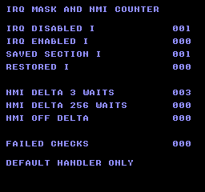
ビルドコマンド
New-Item -ItemType Directory -Force .\out | Out-Null
.\kitaqfc\kitaqfc.exe .\kitaq-docs\samples\api-examples\fc\interrupt_intrinsics.c -I .\kitaqfc\lib -I .\kitaq-docs\samples --nes-chr=.\kitaq-docs\samples\font.chr -o .\out\interrupt_intrinsics.nes --no-cache --no-disasm実装とソース
kitaqfc/lib/intrinsics.h:172
Emit SEI to mask CPU IRQs; NMI is unaffected.
kitaqfc/kitaqfc/CodeGenerator.cs:4504
case "__irq_disable": if (!Need(0)) return true; EmitAsm("SEI"); return true;__irq_enable
CLI命令でCPUの状態レジスターのIビットを落とし、通常のIRQ要求を受け付けられる状態にします。マッパーやAPUの割り込み発生源を設定する処理は行いません。発生源を有効にする前に、対応するハンドラーと割り込み要求を解除する処理を用意してください。
書式
void __irq_enable(void);戻り値
ありません（void）。
使用条件と制限
Iビットが制御するのは通常のIRQだけで、処理区間の途中でもNMIは発生します。IRQを禁止してもデバイスの保留要求は解除されず、NMIと共有するデータも保護されません。発生源とハンドラーは別途準備してください。このサンプルではIRQを発生させる周辺機器は試験しません。
使用例
__irq_enable();
enabled=(__irq_save()&4)>>2; // Save returns the old I bit: 0, then masks IRQ.呼び出し部分のコード例です。完全なプログラムに組み込む際は、記載した初期化とバッファの条件を満たしてください。
期待する結果
CPUのIRQマスクとPPUのNMI制御の違いを調べるプログラムです。黒背景の青文字で、IRQ DISABLED Iは001、IRQ ENABLED Iは000、SAVED SECTION Iは001、RESTORED Iは000になります。表示するのは状態バイト全体ではなく、取り出したIビットです。FAILED CHECKSは000が期待値です。
256回待つ実演が終わるように、エミュレータを360フレーム以上実行してください。IRQ禁止中でもNMI DELTA 3 WAITSは003になります。NMI DELTA 256 WAITSは1バイトが一周するため000、NMI OFF DELTAも000です。runtime.cをリンクせず標準ハンドラーを使います。別の状態検証では、状態ビットの復元やNMI無効時・空の独自ハンドラー使用時の待機を含む21ケースを確認しています。KUROSAKIのNROM環境での検証で、実機は未検証です。
ビルドコマンド
New-Item -ItemType Directory -Force .\out | Out-Null
.\kitaqfc\kitaqfc.exe .\kitaq-docs\samples\api-examples\fc\interrupt_intrinsics.c -I .\kitaqfc\lib -I .\kitaq-docs\samples --nes-chr=.\kitaq-docs\samples\font.chr -o .\out\interrupt_intrinsics.nes --no-cache --no-disasm実装とソース
kitaqfc/lib/intrinsics.h:174
Emit CLI to unmask CPU IRQs; the caller must have a valid interrupt handler.
kitaqfc/kitaqfc/CodeGenerator.cs:4505
case "__irq_enable": if (!Need(0)) return true; EmitAsm("CLI"); return true;
// Return the saved processor status in A after masking IRQs; restore consumes a status byte, not a Boolean.__irq_restore
引数の状態バイトを評価してPHA命令で積み、PLP命令でCPUの状態を復元します。常にIRQを許可するのではなく、保存したIRQマスクと演算フラグを戻します。その後に実行する通常のC式で演算フラグが変わることはあります。
書式
void __irq_restore(u8 state);引数
state__irq_saveが保存する8ビットのCPU状態値です。__irq_restoreへ渡すため全ビットを保持し、真偽値に変換しないでください。ビット2がIで、1はIRQ禁止、0は許可です。PHPが積む形式ではビット4と5も立ちます。
戻り値
ありません（void）。
使用条件と制限
Iビットが制御するのは通常のIRQだけで、処理区間の途中でもNMIは発生します。IRQを禁止してもデバイスの保留要求は解除されず、NMIと共有するデータも保護されません。発生源とハンドラーは別途準備してください。このサンプルではIRQを発生させる周辺機器は試験しません。
使用例
__irq_restore(saved_state); // Restore the caller's original IRQ mask.
restored=(__irq_save()&4)>>2; // Original I was 0; this probe masks it again.呼び出し部分のコード例です。完全なプログラムに組み込む際は、記載した初期化とバッファの条件を満たしてください。
期待する結果
CPUのIRQマスクとPPUのNMI制御の違いを調べるプログラムです。黒背景の青文字で、IRQ DISABLED Iは001、IRQ ENABLED Iは000、SAVED SECTION Iは001、RESTORED Iは000になります。表示するのは状態バイト全体ではなく、取り出したIビットです。FAILED CHECKSは000が期待値です。
256回待つ実演が終わるように、エミュレータを360フレーム以上実行してください。IRQ禁止中でもNMI DELTA 3 WAITSは003になります。NMI DELTA 256 WAITSは1バイトが一周するため000、NMI OFF DELTAも000です。runtime.cをリンクせず標準ハンドラーを使います。別の状態検証では、状態ビットの復元やNMI無効時・空の独自ハンドラー使用時の待機を含む21ケースを確認しています。KUROSAKIのNROM環境での検証で、実機は未検証です。
ビルドコマンド
New-Item -ItemType Directory -Force .\out | Out-Null
.\kitaqfc\kitaqfc.exe .\kitaq-docs\samples\api-examples\fc\interrupt_intrinsics.c -I .\kitaqfc\lib -I .\kitaq-docs\samples --nes-chr=.\kitaq-docs\samples\font.chr -o .\out\interrupt_intrinsics.nes --no-cache --no-disasm実装とソース
kitaqfc/lib/intrinsics.h:178
Restore processor status with PLP, including arithmetic flags and the saved IRQ mask.
kitaqfc/kitaqfc/CodeGenerator.cs:4508
case "__irq_restore": if (!Need(1)) return true; Load1(args[0]); EmitAsm("PHA"); EmitAsm("PLP"); return true;__irq_save
PHP命令でCPUの状態バイトを保存した後、SEI命令でIRQをマスクし、保存したバイトをPLA命令で取り出して返します。保存値のIビットはマスクする前の状態です。__irq_restoreと組み合わせると、処理区間を入れ子にしても、元からIRQ禁止だった状態を維持できます。
書式
u8 __irq_save(void);戻り値
__irq_saveが保存する8ビットのCPU状態値です。__irq_restoreへ渡すため全ビットを保持し、真偽値に変換しないでください。ビット2がIで、1はIRQ禁止、0は許可です。PHPが積む形式ではビット4と5も立ちます。
使用条件と制限
Iビットが制御するのは通常のIRQだけで、処理区間の途中でもNMIは発生します。IRQを禁止してもデバイスの保留要求は解除されず、NMIと共有するデータも保護されません。発生源とハンドラーは別途準備してください。このサンプルではIRQを発生させる周辺機器は試験しません。
使用例
saved_state=__irq_save(); // Save all processor-status bits, then set I.
inside=(__irq_save()&4)>>2; // IRQ remains masked inside this section.呼び出し部分のコード例です。完全なプログラムに組み込む際は、記載した初期化とバッファの条件を満たしてください。
期待する結果
CPUのIRQマスクとPPUのNMI制御の違いを調べるプログラムです。黒背景の青文字で、IRQ DISABLED Iは001、IRQ ENABLED Iは000、SAVED SECTION Iは001、RESTORED Iは000になります。表示するのは状態バイト全体ではなく、取り出したIビットです。FAILED CHECKSは000が期待値です。
256回待つ実演が終わるように、エミュレータを360フレーム以上実行してください。IRQ禁止中でもNMI DELTA 3 WAITSは003になります。NMI DELTA 256 WAITSは1バイトが一周するため000、NMI OFF DELTAも000です。runtime.cをリンクせず標準ハンドラーを使います。別の状態検証では、状態ビットの復元やNMI無効時・空の独自ハンドラー使用時の待機を含む21ケースを確認しています。KUROSAKIのNROM環境での検証で、実機は未検証です。
ビルドコマンド
New-Item -ItemType Directory -Force .\out | Out-Null
.\kitaqfc\kitaqfc.exe .\kitaq-docs\samples\api-examples\fc\interrupt_intrinsics.c -I .\kitaqfc\lib -I .\kitaq-docs\samples --nes-chr=.\kitaq-docs\samples\font.chr -o .\out\interrupt_intrinsics.nes --no-cache --no-disasm実装とソース
kitaqfc/lib/intrinsics.h:176
Return the processor-status byte captured before SEI. Pass that byte to __irq_restore.
kitaqfc/kitaqfc/CodeGenerator.cs:4507
case "__irq_save": if (!Need(0)) return true; EmitAsm("PHP"); EmitAsm("SEI"); EmitAsm("PLA"); return true;__irq_scanline_setコンパイラ組み込み
コンパイラ組み込み命令に関するAPIです。値や動作条件を設定します。正確な引数の単位・終端・戻り値の条件は、以下の宣言・原注記・実装に従います。
void __irq_scanline_set(u8 line);引数（左から順）：u8 line。配列・ポインタでは必要な領域を用意し、処理が終わるまで有効に保ちます。
Write the MMC3 IRQ latch and reload registers. This does not enable IRQ delivery.
引数受け渡し例
void example_irq_scanline_set(u8 line) {
__irq_scanline_set(line);
}オブジェクトの初期化、バッファの大きさ、ROMバンク、機器状態は上位コードで準備します。この関数断片単体は実行確認していません。
宣言・識別子の出典：kitaqfc/lib/intrinsics.h:319
__joypad2p_voice
__joypad2p_voiceは__mic_read2pのヘルパーを呼ぶ別名です。どちらも同じデジタルマイクビットを読みます。名前の「voice」は音声処理を意味しません。別々に呼ぶとそれぞれの時点で読み取るため、その間に信号が変化すれば値が異なることがあります。
ファミコンの2番目のコントローラーのマイクに対応するデジタル信号を、$4016のビット2から読みます。レジスターを1回読み、0x04でマスクして、反転せず0か1に正規化します。コントローラーのラッチ、音声の録音、音量測定、音声認識は行いません。
書式
u8 __joypad2p_voice(void);戻り値
$4016 & 0x04が0以外なら正確に1、それ以外は0です。読み取ったデジタルレベルであり、ボタンマスク、振幅、周波数、発話した単語数ではありません。
使用条件と制限
マイクは2番目のコントローラーにありますが、このヘルパーが読むのは$4017ではなく$4016です。ストローブが低いときのレジスター読み取りはコントローラーのシリアル読み取り列も進めることがあるため、別のコントローラーの8ビット読み取りループの途中にマイクの読み取りを挟まないでください。入力履歴の保存済み状態は更新しません。
公開版KUROSAKIのコントローラーモデルが返すのはD0と固定のビット6だけです。そのため通常のボタンを押していても、同エミュレーターではD1とマイクのビットは常に0になります。付属の検証で確認したのは、ビルド、通常ボタン入力、この0の信号表示です。周辺機器からの0以外の信号、電気的タイミング、実機での互換性は未確認です。ここで0が表示されても、接続機器が動作する証明や、実機でも読み取れないという証明にはなりません。
使用例
voice=__joypad2p_voice();呼び出し部分のコード例です。完全なプログラムに組み込む際は、記載した初期化とバッファの条件を満たしてください。
期待する結果
通常入力のD0、拡張入力のD1、マイクのデジタルレベルを比較するプログラムです。状態が取得されるまでコントローラー1のAとコントローラー2のBを押します。NORMAL P1とNORMAL P2は001、002になります。付属のKUROSAKI実行結果では、D1 PORT 1、D1 PORT 2、EXP ALIAS 1、EXP ALIAS 2、MIC LEVEL、MIC DIRECTはすべて000です。対応する信号線がエミュレートされていないためです。取得後の表示は固定されます。適切な周辺機器と信号線の実装がある環境では実際の入力で値が変わるため、この0を期待値とせず、上記のビット配置に従って読み取ってください。
公開版KUROSAKIのコントローラーモデルが返すのはD0と固定のビット6だけです。そのため通常のボタンを押していても、同エミュレーターではD1とマイクのビットは常に0になります。付属の検証で確認したのは、ビルド、通常ボタン入力、この0の信号表示です。周辺機器からの0以外の信号、電気的タイミング、実機での互換性は未確認です。ここで0が表示されても、接続機器が動作する証明や、実機でも読み取れないという証明にはなりません。
ビルドコマンド
New-Item -ItemType Directory -Force .\out | Out-Null
.\kitaqfc\kitaqfc.exe .\kitaq-docs\samples\api-examples\fc\expansion_input.c -I .\kitaq-docs\samples -I .\kitaqfc\lib -o .\out\expansion_input.nes --mapper=nrom --nes-chr=.\kitaq-docs\samples\font.chr --no-cache --no-disasm実装とソース
kitaqfc/lib/intrinsics.h:227
Return controller-port 4016 bit 2 normalized to 0 or 1; this is a microphone level bit, not PCM audio.
__mac16コンパイラ組み込み
コンパイラ組み込み命令に関するAPIです。引数に対応する処理を実行します。正確な引数の単位・終端・戻り値の条件は、以下の宣言・原注記・実装に従います。
u16 __mac16(u16 acc, u16 a, u8 b);引数（左から順）：u16 acc, u16 a, u8 b。配列・ポインタでは必要な領域を用意し、処理が終わるまで有効に保ちます。
戻り値の型：u16。意味・成功値・失敗値は原注記と実装のreturn条件を参照してください。
Return acc+a*b modulo 65536 using unsigned multiplication.
引数受け渡し例
u16 example_mac16(u16 acc, u16 a, u8 b) {
return __mac16(acc, a, b);
}オブジェクトの初期化、バッファの大きさ、ROMバンク、機器状態は上位コードで準備します。この関数断片単体は実行確認していません。
宣言・識別子の出典：kitaqfc/lib/intrinsics.h:55
__manhattanコンパイラ組み込み
コンパイラ組み込み命令に関するAPIです。引数に対応する処理を実行します。正確な引数の単位・終端・戻り値の条件は、以下の宣言・原注記・実装に従います。
u8 __manhattan(u8 x1, u8 y1, u8 x2, u8 y2);引数（左から順）：u8 x1, u8 y1, u8 x2, u8 y2。配列・ポインタでは必要な領域を用意し、処理が終わるまで有効に保ちます。
戻り値の型：u8。意味・成功値・失敗値は原注記と実装のreturn条件を参照してください。
Return abs(x1-x2)+abs(y1-y2) modulo 256; large distances are not saturated.
引数受け渡し例
u8 example_manhattan(u8 x1, u8 y1, u8 x2, u8 y2) {
return __manhattan(x1, y1, x2, y2);
}オブジェクトの初期化、バッファの大きさ、ROMバンク、機器状態は上位コードで準備します。この関数断片単体は実行確認していません。
宣言・識別子の出典：kitaqfc/lib/intrinsics.h:33
__map_indexコンパイラ組み込み
コンパイラ組み込み命令に関するAPIです。引数に対応する処理を実行します。正確な引数の単位・終端・戻り値の条件は、以下の宣言・原注記・実装に従います。
u16 __map_index(u8 x, u8 y, u8 width);引数（左から順）：u8 x, u8 y, u8 width。配列・ポインタでは必要な領域を用意し、処理が終わるまで有効に保ちます。
戻り値の型：u16。意味・成功値・失敗値は原注記と実装のreturn条件を参照してください。
Return y*width+x as a word without checking coordinates against map dimensions.
引数受け渡し例
u16 example_map_index(u8 x, u8 y, u8 width) {
return __map_index(x, y, width);
}オブジェクトの初期化、バッファの大きさ、ROMバンク、機器状態は上位コードで準備します。この関数断片単体は実行確認していません。
宣言・識別子の出典：kitaqfc/lib/intrinsics.h:35
__mapper_idコンパイラ組み込み
コンパイラ組み込み命令に関するAPIです。引数に対応する処理を実行します。正確な引数の単位・終端・戻り値の条件は、以下の宣言・原注記・実装に従います。
u8 __mapper_id(void);戻り値の型：u8。意味・成功値・失敗値は原注記と実装のreturn条件を参照してください。
Mapper Return the low byte of the mapper number selected for this build; no cartridge probe is performed.
引数受け渡し例
__mapper_id();オブジェクトの初期化、バッファの大きさ、ROMバンク、機器状態は上位コードで準備します。この関数断片単体は実行確認していません。
宣言・識別子の出典：kitaqfc/lib/intrinsics.h:309
__mapper_irq_ackコンパイラ組み込み
コンパイラ組み込み命令に関するAPIです。引数に対応する処理を実行します。正確な引数の単位・終端・戻り値の条件は、以下の宣言・原注記・実装に従います。
void __mapper_irq_ack(void);Use the same E000 write as disable; explicitly re-enable when another interrupt is needed.
引数受け渡し例
__mapper_irq_ack();オブジェクトの初期化、バッファの大きさ、ROMバンク、機器状態は上位コードで準備します。この関数断片単体は実行確認していません。
宣言・識別子の出典：kitaqfc/lib/intrinsics.h:327
__mapper_irq_disableコンパイラ組み込み
コンパイラ組み込み命令に関するAPIです。機能を無効化します。正確な引数の単位・終端・戻り値の条件は、以下の宣言・原注記・実装に従います。
void __mapper_irq_disable(void);Write MMC3 E000 to disable and acknowledge mapper IRQs.
引数受け渡し例
__mapper_irq_disable();オブジェクトの初期化、バッファの大きさ、ROMバンク、機器状態は上位コードで準備します。この関数断片単体は実行確認していません。
宣言・識別子の出典：kitaqfc/lib/intrinsics.h:325
__mapper_irq_enableコンパイラ組み込み
コンパイラ組み込み命令に関するAPIです。機能を有効化します。正確な引数の単位・終端・戻り値の条件は、以下の宣言・原注記・実装に従います。
void __mapper_irq_enable(void);Write MMC3 E001. The CPU IRQ mask and a valid handler are separate caller responsibilities.
引数受け渡し例
__mapper_irq_enable();オブジェクトの初期化、バッファの大きさ、ROMバンク、機器状態は上位コードで準備します。この関数断片単体は実行確認していません。
宣言・識別子の出典：kitaqfc/lib/intrinsics.h:323
__mapper_irq_setコンパイラ組み込み
コンパイラ組み込み命令に関するAPIです。値や動作条件を設定します。正確な引数の単位・終端・戻り値の条件は、以下の宣言・原注記・実装に従います。
void __mapper_irq_set(u8 scanline);引数（左から順）：u8 scanline。配列・ポインタでは必要な領域を用意し、処理が終わるまで有効に保ちます。
Alias the MMC3 IRQ latch/reload operation; other mapper profiles are rejected.
引数受け渡し例
void example_mapper_irq_set(u8 scanline) {
__mapper_irq_set(scanline);
}オブジェクトの初期化、バッファの大きさ、ROMバンク、機器状態は上位コードで準備します。この関数断片単体は実行確認していません。
宣言・識別子の出典：kitaqfc/lib/intrinsics.h:321
__memcpyコンパイラ組み込み
転送元から転送先へlenバイトを複製します。領域の大きさとバンクの有効性を呼び出し側で保証します。
void __memcpy(u8* dst, const u8* src, u16 len);引数（左から順）：u8* dst, const u8* src, u16 len。配列・ポインタでは必要な領域を用意し、処理が終わるまで有効に保ちます。
FC/NES native intrinsic API. This header intentionally does not expose KITAQGB/CGB compatibility stubs. The compiler recognizes these names and emits 6502-oriented code or calls an internal 6502 helper generated by the backend. / Direct PPU operations require caller-controlled access timing. Generated helpers share runtime argument/scratch storage: do not assume calls are reentrant across NMI or IRQ handlers. typedef unsigned char u8; typedef unsigned short u16; memory / bit / math Copy len bytes forward between readable/writable CPU ranges; overlapping copies are not memmove. A compile-time zero length may omit pointer-expression evaluation, so avoid argument side effects.
呼び出し例（周辺コードの断片）
u8 data[4]; u8 copy[4];
__memset(data,0,4); __bit_set(data,3); __bit_toggle(data,1);
__memcpy(copy,data,4); m_number(copy[0]);
while (1) { m_wait(); }
}出典：kitaq-docs/samples/fc_bits_memory.c:12
宣言・識別子の出典：kitaqfc/lib/intrinsics.h:19
__memcpy_smallコンパイラ組み込み
コンパイラ組み込み命令に関するAPIです。引数に対応する処理を実行します。正確な引数の単位・終端・戻り値の条件は、以下の宣言・原注記・実装に従います。
void __memcpy_small(u8* dst, const u8* src, u8 len);引数（左から順）：u8* dst, const u8* src, u8 len。配列・ポインタでは必要な領域を用意し、処理が終わるまで有効に保ちます。
Forward copy with an 8-bit length, zero through 255; the dynamic helper promotes it to a word count.
引数受け渡し例
void example_memcpy_small(u8* dst, const u8* src, u8 len) {
__memcpy_small(dst, src, len);
}オブジェクトの初期化、バッファの大きさ、ROMバンク、機器状態は上位コードで準備します。この関数断片単体は実行確認していません。
宣言・識別子の出典：kitaqfc/lib/intrinsics.h:23
__memsetコンパイラ組み込み
指定領域を同じバイト値で埋めます。lenはバイト数です。
void __memset(u8* dst, u8 value, u16 len);引数（左から順）：u8* dst, u8 value, u16 len。配列・ポインタでは必要な領域を用意し、処理が終わるまで有効に保ちます。
Fill len CPU bytes with value. A compile-time zero length may omit argument evaluation.
呼び出し例（周辺コードの断片）
m_text(2,3,"BITS MEMORY");
u8 data[4]; u8 copy[4];
__memset(data,0,4); __bit_set(data,3); __bit_toggle(data,1);
__memcpy(copy,data,4); m_number(copy[0]);
while (1) { m_wait(); }
}出典：kitaq-docs/samples/fc_bits_memory.c:11
宣言・識別子の出典：kitaqfc/lib/intrinsics.h:21
__memset_smallコンパイラ組み込み
コンパイラ組み込み命令に関するAPIです。値や動作条件を設定します。正確な引数の単位・終端・戻り値の条件は、以下の宣言・原注記・実装に従います。
void __memset_small(u8* dst, u8 value, u8 len);引数（左から順）：u8* dst, u8 value, u8 len。配列・ポインタでは必要な領域を用意し、処理が終わるまで有効に保ちます。
Fill zero through 255 CPU bytes; this is ordinary RAM access, not a PPU transfer.
引数受け渡し例
void example_memset_small(u8* dst, u8 value, u8 len) {
__memset_small(dst, value, len);
}オブジェクトの初期化、バッファの大きさ、ROMバンク、機器状態は上位コードで準備します。この関数断片単体は実行確認していません。
宣言・識別子の出典：kitaqfc/lib/intrinsics.h:25
__metasprite_draw
終端付きの部品データ列を読み、ページ02のシャドーバッファの連続した項目へ展開します。各部品の1バイトのX・Yオフセットを基準位置へ加え、部品ごとのタイルと属性を設定します。戻り値は次のOAM番号です。
書式
u8 __metasprite_draw(u8 oam_index, u8 base_x, u8 base_y, const u8* metasprite);引数
oam_indexスプライトの項目番号0〜63です。バイト単位のオフセットではありません。内部では8ビットのカーソルで4倍するため、範囲外の値は64を周期に折り返し、別の項目を上書きします。確保済みかどうかの検査は行いません。
base_xピクセル単位の横位置を符号なし8ビット値で渡します。タイル座標ではありません。
base_yOAMに格納するY値です。画面の1行目以降に上端を置く場合は表示上端−1を渡します。239〜255は240行の表示範囲外です。
metaspritedx, dy, tile, attrの4バイトを1組とする読み出し可能なデータ列へのポインタです。次のdxの位置に0xFFがあれば終了し、その後のバイトは不要です。オフセットは256を周期に加算します。0xFEは−2、dyの0xFFは−1として使えますが、dxの0xFFは終端専用なので−1を表せません。現在選択中のメモリでポインタが有効である必要があります。
戻り値
次のOAM項目番号で、(oam_index + 書き込んだ部品数) modulo 64です。描いた部品数ではなく、次の書き込み位置を返します。空のデータ列ではoam_index modulo 64です。
使用条件と制限
これらの操作はCPU RAMの0x0200–0x02FFを書き換えます。ハードウェアOAMへ即座に反映されるわけではありません。ページを完成させてから__oam_dmaで転送してください。スプライトライブラリの確保フラグ・座標配列・使用数は更新しません。準備途中のページを割り込み処理で変更・転送しないようにします。
部品数・画面外クリッピング・容量の検査はありません。必ず終端を付け、部品数を64−oam_index以下にしてください。座標は256を周期に折り返し、63番の次は0番へ書き込みます。空のデータ列は何も変更しません。この形式は、スプライトライブラリのmetasprite_drawで使う個数指定のMetaSpritePart配列とは異なります。
使用例
fc_oam_next=__metasprite_draw(5,136,95,fc_oam_pair); // Returns 7 after two entries.呼び出し部分のコード例です。完全なプログラムに組み込む際は、記載した初期化とバッファの条件を満たしてください。
期待する結果
操作ごとに見出し付きの行を分けたサンプルです。SETとMOVEは(144,16)・(144,32)の8×8右向き矢印、TILEは(144,48)の緑の四角、ATTRは(144,64)の上下左右を反転した矢印です。HIDEの(144,80)とCLEARの(144,112)には何も表示されません。METAは(136,96)と(144,96)の2個組で、2個目を左右反転します。NEXT 07は5・6番へ書き込んだ後の次の位置です。矢印の輪郭は赤、軸は緑、先端の一部は青です。検証では画像ごとに8,704ピクセルと転送後のOAMデータを照合します。実機では未検証です。
TRANSFERの(144,128)には矢印を表示します。このプログラムは、個別のスプライト操作で設定した全項目を含むページ02を__oam_dmaで直接転送します。

ビルドコマンド
New-Item -ItemType Directory -Force .\out | Out-Null
.\kitaqfc\kitaqfc.exe .\kitaq-docs\samples\api-examples\fc\oam_intrinsics.c -I .\kitaqfc\lib -I .\kitaq-docs\samples --nes-chr=.\kitaq-docs\samples\sprite_example.chr -o .\out\oam_intrinsics.nes --no-cache --no-disasm実装とソース
kitaqfc/lib/intrinsics.h:199
Expand dx,dy,tile,attr records into page-02 shadow OAM until dx=FF; return the next index. Coordinates and the byte OAM cursor wrap; keep the terminated stream within the available slots.
EmitHelperStart("__metasprite_draw");
// args: oam_index, base_x, base_y, metasprite_ptr16.
// stream: dx, dy, tile, attr ... dx=$FF terminates. Returns next OAM index in A.
EmitAsm("LDA", Mem(CallArgBase));
EmitAsm("ASL");
EmitAsm("ASL");
EmitAsm("STA", Mem(_runtimeIntrinsicTmp2Address)); // dst byte offset
string msLoop = NewGeneratedLabel("metasprite_loop");
string msDone = NewGeneratedLabel("metasprite_done");
_assembly.Add(Expr.Make(Tag.Label, msLoop));
EmitAsm("LDY", Imm(0));
EmitAsm("LDA", IndY(CallArgBase + 3));
EmitAsm("CMP", Imm(0xFF));
EmitAsm("BEQ", Rel(msDone));
EmitAsm("STA", Mem(_runtimeIntrinsicTmp0Address)); // dx
EmitAsm("LDX", Mem(_runtimeIntrinsicTmp2Address));
EmitAsm("INY");
EmitAsm("LDA", IndY(CallArgBase + 3));
EmitAsm("CLC");
EmitAsm("ADC", Mem(CallArgBase + 2));
EmitAsm("STA", new AsmOperand(OamRamBase + 0, AddressMode.AbsoluteX));
EmitAsm("INY");
EmitAsm("LDA", IndY(CallArgBase + 3));
EmitAsm("STA", new AsmOperand(OamRamBase + 1, AddressMode.AbsoluteX));
EmitAsm("INY");
EmitAsm("LDA", IndY(CallArgBase + 3));
EmitAsm("STA", new AsmOperand(OamRamBase + 2, AddressMode.AbsoluteX));
EmitAsm("LDA", Mem(_runtimeIntrinsicTmp0Address));
EmitAsm("CLC");
EmitAsm("ADC", Mem(CallArgBase + 1));
EmitAsm("STA", new AsmOperand(OamRamBase + 3, AddressMode.AbsoluteX));
EmitAsm("LDA", Mem(_runtimeIntrinsicTmp2Address));
EmitAsm("CLC");
EmitAsm("ADC", Imm(4));
EmitAsm("STA", Mem(_runtimeIntrinsicTmp2Address));
EmitAsm("LDA", Mem(CallArgBase + 3));
EmitAsm("CLC");
EmitAsm("ADC", Imm(4));
EmitAsm("STA", Mem(CallArgBase + 3));
// Propagate stream-pointer page carry after consuming the complete four-byte record.
string msPtrOk = NewGeneratedLabel("metasprite_ptr_ok");
EmitAsm("BCC", Rel(msPtrOk));
EmitAsm("INC", Mem(CallArgBase + 4));
_assembly.Add(Expr.Make(Tag.Label, msPtrOk));
EmitAsm("JMP", Abs(msLoop));
_assembly.Add(Expr.Make(Tag.Label, msDone));
EmitAsm("LDA", Mem(_runtimeIntrinsicTmp2Address));
EmitAsm("LSR");
EmitAsm("LSR");
EmitAsm("RTS");__mic_read2p
ファミコンの2番目のコントローラーのマイクに対応するデジタル信号を、$4016のビット2から読みます。レジスターを1回読み、0x04でマスクして、反転せず0か1に正規化します。コントローラーのラッチ、音声の録音、音量測定、音声認識は行いません。
書式
u8 __mic_read2p(void);戻り値
$4016 & 0x04が0以外なら正確に1、それ以外は0です。読み取ったデジタルレベルであり、ボタンマスク、振幅、周波数、発話した単語数ではありません。
使用条件と制限
マイクは2番目のコントローラーにありますが、このヘルパーが読むのは$4017ではなく$4016です。ストローブが低いときのレジスター読み取りはコントローラーのシリアル読み取り列も進めることがあるため、別のコントローラーの8ビット読み取りループの途中にマイクの読み取りを挟まないでください。入力履歴の保存済み状態は更新しません。
公開版KUROSAKIのコントローラーモデルが返すのはD0と固定のビット6だけです。そのため通常のボタンを押していても、同エミュレーターではD1とマイクのビットは常に0になります。付属の検証で確認したのは、ビルド、通常ボタン入力、この0の信号表示です。周辺機器からの0以外の信号、電気的タイミング、実機での互換性は未確認です。ここで0が表示されても、接続機器が動作する証明や、実機でも読み取れないという証明にはなりません。
使用例
mic_direct=__mic_read2p(); // A separate sample of the same digital signal.呼び出し部分のコード例です。完全なプログラムに組み込む際は、記載した初期化とバッファの条件を満たしてください。
期待する結果
通常入力のD0、拡張入力のD1、マイクのデジタルレベルを比較するプログラムです。状態が取得されるまでコントローラー1のAとコントローラー2のBを押します。NORMAL P1とNORMAL P2は001、002になります。付属のKUROSAKI実行結果では、D1 PORT 1、D1 PORT 2、EXP ALIAS 1、EXP ALIAS 2、MIC LEVEL、MIC DIRECTはすべて000です。対応する信号線がエミュレートされていないためです。取得後の表示は固定されます。適切な周辺機器と信号線の実装がある環境では実際の入力で値が変わるため、この0を期待値とせず、上記のビット配置に従って読み取ってください。
公開版KUROSAKIのコントローラーモデルが返すのはD0と固定のビット6だけです。そのため通常のボタンを押していても、同エミュレーターではD1とマイクのビットは常に0になります。付属の検証で確認したのは、ビルド、通常ボタン入力、この0の信号表示です。周辺機器からの0以外の信号、電気的タイミング、実機での互換性は未確認です。ここで0が表示されても、接続機器が動作する証明や、実機でも読み取れないという証明にはなりません。
ビルドコマンド
New-Item -ItemType Directory -Force .\out | Out-Null
.\kitaqfc\kitaqfc.exe .\kitaq-docs\samples\api-examples\fc\expansion_input.c -I .\kitaq-docs\samples -I .\kitaqfc\lib -o .\out\expansion_input.nes --mapper=nrom --nes-chr=.\kitaq-docs\samples\font.chr --no-cache --no-disasm実装とソース
kitaqfc/lib/intrinsics.h:229
Alias the same normalized microphone input bit as __joypad2p_voice.
__midi_clockコンパイラ組み込み
コンパイラ組み込み命令に関するAPIです。引数に対応する処理を実行します。正確な引数の単位・終端・戻り値の条件は、以下の宣言・原注記・実装に従います。
void __midi_clock(void);Transmit the single realtime byte F8 synchronously; this does not schedule future ticks.
引数受け渡し例
__midi_clock();オブジェクトの初期化、バッファの大きさ、ROMバンク、機器状態は上位コードで準備します。この関数断片単体は実行確認していません。
宣言・識別子の出典：kitaqfc/lib/intrinsics.h:299
__midi_continueコンパイラ組み込み
コンパイラ組み込み命令に関するAPIです。引数に対応する処理を実行します。正確な引数の単位・終端・戻り値の条件は、以下の宣言・原注記・実装に従います。
void __midi_continue(void);Transmit realtime Continue (FB) through the serial adapter path.
引数受け渡し例
__midi_continue();オブジェクトの初期化、バッファの大きさ、ROMバンク、機器状態は上位コードで準備します。この関数断片単体は実行確認していません。
宣言・識別子の出典：kitaqfc/lib/intrinsics.h:303
__midi_control_changeコンパイラ組み込み
コンパイラ組み込み命令に関するAPIです。引数に対応する処理を実行します。正確な引数の単位・終端・戻り値の条件は、以下の宣言・原注記・実装に従います。
void __midi_control_change(u8 ch, u8 cc, u8 value);引数（左から順）：u8 ch, u8 cc, u8 value。配列・ポインタでは必要な領域を用意し、処理が終わるまで有効に保ちます。
Send B0|(ch&0F), controller and value; both data arguments must be valid 7-bit values.
引数受け渡し例
void example_midi_control_change(u8 ch, u8 cc, u8 value) {
__midi_control_change(ch, cc, value);
}オブジェクトの初期化、バッファの大きさ、ROMバンク、機器状態は上位コードで準備します。この関数断片単体は実行確認していません。
宣言・識別子の出典：kitaqfc/lib/intrinsics.h:295
__midi_in_byteコンパイラ組み込み
コンパイラ組み込み命令に関するAPIです。引数に対応する処理を実行します。正確な引数の単位・終端・戻り値の条件は、以下の宣言・原注記・実装に従います。
u8 __midi_in_byte(void);戻り値の型：u8。意味・成功値・失敗値は原注記と実装のreturn条件を参照してください。
Block for a low start signal and sample eight bits. No timeout, framing check or receive buffer is provided.
引数受け渡し例
__midi_in_byte();オブジェクトの初期化、バッファの大きさ、ROMバンク、機器状態は上位コードで準備します。この関数断片単体は実行確認していません。
宣言・識別子の出典：kitaqfc/lib/intrinsics.h:289
__midi_note_offコンパイラ組み込み
コンパイラ組み込み命令に関するAPIです。引数に対応する処理を実行します。正確な引数の単位・終端・戻り値の条件は、以下の宣言・原注記・実装に従います。
void __midi_note_off(u8 ch, u8 note, u8 velocity);引数（左から順）：u8 ch, u8 note, u8 velocity。配列・ポインタでは必要な領域を用意し、処理が終わるまで有効に保ちます。
Send 80|(ch&0F), note and velocity through the same synchronous serial path.
引数受け渡し例
void example_midi_note_off(u8 ch, u8 note, u8 velocity) {
__midi_note_off(ch, note, velocity);
}オブジェクトの初期化、バッファの大きさ、ROMバンク、機器状態は上位コードで準備します。この関数断片単体は実行確認していません。
宣言・識別子の出典：kitaqfc/lib/intrinsics.h:293
__midi_note_onコンパイラ組み込み
コンパイラ組み込み命令に関するAPIです。引数に対応する処理を実行します。正確な引数の単位・終端・戻り値の条件は、以下の宣言・原注記・実装に従います。
void __midi_note_on(u8 ch, u8 note, u8 velocity);引数（左から順）：u8 ch, u8 note, u8 velocity。配列・ポインタでは必要な領域を用意し、処理が終わるまで有効に保ちます。
Send 90|(ch&0F), note and velocity. Supply 7-bit data bytes; they are not masked by this helper.
引数受け渡し例
void example_midi_note_on(u8 ch, u8 note, u8 velocity) {
__midi_note_on(ch, note, velocity);
}オブジェクトの初期化、バッファの大きさ、ROMバンク、機器状態は上位コードで準備します。この関数断片単体は実行確認していません。
宣言・識別子の出典：kitaqfc/lib/intrinsics.h:291
__midi_out_byteコンパイラ組み込み
コンパイラ組み込み命令に関するAPIです。引数に対応する処理を実行します。正確な引数の単位・終端・戻り値の条件は、以下の宣言・原注記・実装に従います。
void __midi_out_byte(u8 byte);引数（左から順）：u8 byte。配列・ポインタでは必要な領域を用意し、処理が終わるまで有効に保ちます。
Send start-low, eight least-significant-first bits and stop-high using fixed NOP delays. Instruction and interrupt overhead is additional; the emitted loop does not establish a verified MIDI baud rate.
引数受け渡し例
void example_midi_out_byte(u8 byte) {
__midi_out_byte(byte);
}オブジェクトの初期化、バッファの大きさ、ROMバンク、機器状態は上位コードで準備します。この関数断片単体は実行確認していません。
宣言・識別子の出典：kitaqfc/lib/intrinsics.h:287
__midi_program_changeコンパイラ組み込み
コンパイラ組み込み命令に関するAPIです。引数に対応する処理を実行します。正確な引数の単位・終端・戻り値の条件は、以下の宣言・原注記・実装に従います。
void __midi_program_change(u8 ch, u8 program);引数（左から順）：u8 ch, u8 program。配列・ポインタでは必要な領域を用意し、処理が終わるまで有効に保ちます。
Send C0|(ch&0F) followed by the caller-supplied 7-bit program value.
引数受け渡し例
void example_midi_program_change(u8 ch, u8 program) {
__midi_program_change(ch, program);
}オブジェクトの初期化、バッファの大きさ、ROMバンク、機器状態は上位コードで準備します。この関数断片単体は実行確認していません。
宣言・識別子の出典：kitaqfc/lib/intrinsics.h:297
__midi_startコンパイラ組み込み
コンパイラ組み込み命令に関するAPIです。引数に対応する処理を実行します。正確な引数の単位・終端・戻り値の条件は、以下の宣言・原注記・実装に従います。
void __midi_start(void);Transmit realtime Start (FA) through the serial adapter path.
引数受け渡し例
__midi_start();オブジェクトの初期化、バッファの大きさ、ROMバンク、機器状態は上位コードで準備します。この関数断片単体は実行確認していません。
宣言・識別子の出典：kitaqfc/lib/intrinsics.h:301
__midi_stopコンパイラ組み込み
コンパイラ組み込み命令に関するAPIです。引数に対応する処理を実行します。正確な引数の単位・終端・戻り値の条件は、以下の宣言・原注記・実装に従います。
void __midi_stop(void);Transmit realtime Stop (FC) through the serial adapter path.
引数受け渡し例
__midi_stop();オブジェクトの初期化、バッファの大きさ、ROMバンク、機器状態は上位コードで準備します。この関数断片単体は実行確認していません。
宣言・識別子の出典：kitaqfc/lib/intrinsics.h:305
__mirroring_setコンパイラ組み込み
コンパイラ組み込み命令に関するAPIです。値や動作条件を設定します。正確な引数の単位・終端・戻り値の条件は、以下の宣言・原注記・実装に従います。
void __mirroring_set(u8 mode);引数（左から順）：u8 mode。配列・ポインタでは必要な領域を用意し、処理が終わるまで有効に保ちます。
Emit the selected mapper mirroring operation; available modes and writable control depend on the board.
引数受け渡し例
void example_mirroring_set(u8 mode) {
__mirroring_set(mode);
}オブジェクトの初期化、バッファの大きさ、ROMバンク、機器状態は上位コードで準備します。この関数断片単体は実行確認していません。
宣言・識別子の出典：kitaqfc/lib/intrinsics.h:317
__mul16x8コンパイラ組み込み
コンパイラ組み込み命令に関するAPIです。引数に対応する処理を実行します。正確な引数の単位・終端・戻り値の条件は、以下の宣言・原注記・実装に従います。
u16 __mul16x8(u16 a, u8 b);引数（左から順）：u16 a, u8 b。配列・ポインタでは必要な領域を用意し、処理が終わるまで有効に保ちます。
戻り値の型：u16。意味・成功値・失敗値は原注記と実装のreturn条件を参照してください。
Return the low word of the unsigned product; overflow wraps without saturation.
引数受け渡し例
u16 example_mul16x8(u16 a, u8 b) {
return __mul16x8(a, b);
}オブジェクトの初期化、バッファの大きさ、ROMバンク、機器状態は上位コードで準備します。この関数断片単体は実行確認していません。
宣言・識別子の出典：kitaqfc/lib/intrinsics.h:51
__mul8x8_hiコンパイラ組み込み
コンパイラ組み込み命令に関するAPIです。引数に対応する処理を実行します。正確な引数の単位・終端・戻り値の条件は、以下の宣言・原注記・実装に従います。
u8 __mul8x8_hi(u8 a, u8 b);引数（左から順）：u8 a, u8 b。配列・ポインタでは必要な領域を用意し、処理が終わるまで有効に保ちます。
戻り値の型：u8。意味・成功値・失敗値は原注記と実装のreturn条件を参照してください。
Return the high byte of the unsigned 8-by-8 product, equivalent to floor(a*b/256).
引数受け渡し例
u8 example_mul8x8_hi(u8 a, u8 b) {
return __mul8x8_hi(a, b);
}オブジェクトの初期化、バッファの大きさ、ROMバンク、機器状態は上位コードで準備します。この関数断片単体は実行確認していません。
宣言・識別子の出典：kitaqfc/lib/intrinsics.h:49
__nametable_put
PPUアドレス0x2000 + y*32 + xへ、ネームテーブル0のタイル番号を1バイト直接書きます。アドレス設定前にラッチをリセットします。タイルの絵柄やパレット属性は書かず、座標の切り詰めも行いません。
書式
void __nametable_put(u8 x, u8 y, u8 tile);引数
x / yピクセルではなくタイル座標です。32×30タイルの表示領域では
xを0..31、yを0..29に収めます。1タイルは8×8ピクセルです。1バイトの引数を範囲内へ補正しないため、範囲外の座標では意図したタイル領域の外へ書く場合があります。tilePPUCTRLで選んだ背景パターンテーブル内のタイル番号
0..255です。既存のCHR画像を選ぶ値で、ピクセルの色や転送元ポインターではありません。
戻り値
ありません（void）。
使用条件と制限
PPU直接アクセスは、描画停止中か、処理全体が安全なVBlank時間内に収まる条件で行います。これらの関数は待機・キュー登録・NMI抑止・スクロール復元を行いません。呼び出し中に割り込みで共有ラッチやアドレスを変更しないでください。PPUCTRLのビット2により、書き込み先は1バイトごとに1または32進みます。ミラーリングとアドレスの周回はPPUの動作に従い、CHR-ROMへは書き込めません。アクセス後、描画を始める前に意図したスクロール状態を設定してください。
使用例
__nametable_put(2,12,1); // Blue solid marker at (16,96).呼び出し部分のコード例です。完全なプログラムに組み込む際は、記載した初期化とバッファの条件を満たしてください。
期待する結果
このプログラムではレジスター設定、タイル・属性の直接書き込み、スクロール、背景・スプライトそれぞれのパレット転送を学びます。(0,16)の青い帯は256×16ピクセルです。上段は8×8の塗りつぶし、左半分4×8の棒、8行の三角形を繰り返し、下段は左半分の棒だけを並べます。(16,48)に緑の塗りつぶし64×32、(144,48)に三角形タイルを横8個・縦4個並べた赤い64×32の領域が出ます。
y=96では、x=16・24・32に青い正方形・左半分の棒・三角形、x=80に赤い左半分の棒、x=144に緑の三角形が表示されます。これらは背景タイルです。別パレットを使うスプライトはy=144に並び、x=16が赤い8×8の正方形、x=80が青い左半分4×8の棒、x=144が緑の8行の三角形です。最終スクロールは(0,0)です。
画像ではスプライトの色も含め、16,384ピクセルの形と色を照合します。別の31ケースで、レジスターの置き換え、ステータス・ラッチの副作用、スクロール保存値、0・255バイト転送、増分1・32、マップ端、矩形の寸法0、テーブル選択、属性1バイト全体、背景・スプライト両方のパレットを検証しています。Y=255はレジスターへ書く値としての確認で、正しいスクロール画像の検証ではありません。検証環境はKUROSAKIのNROMで、実機は未検証です。
ビルドコマンド
New-Item -ItemType Directory -Force .\out | Out-Null
.\kitaqfc\kitaqfc.exe .\kitaq-docs\samples\api-examples\fc\ppu_intrinsics.c -I .\kitaqfc\lib -I .\kitaq-docs\samples --nes-chr=.\kitaq-docs\samples\api-examples\fc\vram_shapes.chr -o .\out\ppu_intrinsics.nes --no-cache --no-disasm実装とソース
kitaqfc/lib/intrinsics.h:120
Write one tile directly at 2000+y*32+x; use x<32, y<30 for visible nametable cells.
kitaqfc/kitaqfc/CodeGenerator.cs:4591
case "__nametable_put": return EmitKitaqfcHelperCall(funcName, args, ctx, new[] {1,1,1}, funcName);
void EmitHelperNametablePut()
{
EmitHelperStart("__nametable_put");
// args: x, y, tile. PPU address = $2000 + y * 32 + x.
EmitAsm("LDA", Mem(CallArgBase + 1));
EmitAsm("STA", Mem(_runtimeIntrinsicTmp0Address));
EmitAsm("LDA", Imm(0));
EmitAsm("STA", Mem(_runtimeIntrinsicTmp1Address));
for (int i = 0; i < 5; i++) { EmitAsm("ASL", Mem(_runtimeIntrinsicTmp0Address)); EmitAsm("ROL", Mem(_runtimeIntrinsicTmp1Address)); }
EmitAsm("LDA", Mem(_runtimeIntrinsicTmp0Address));
EmitAsm("CLC");
EmitAsm("ADC", Mem(CallArgBase));
EmitAsm("STA", Mem(_runtimeIntrinsicTmp0Address));
EmitAsm("LDA", Mem(_runtimeIntrinsicTmp1Address));
EmitAsm("ADC", Imm(0x20));
EmitAsm("STA", Mem(_runtimeIntrinsicTmp1Address));
EmitAsm("LDA", Mem(0x2002));
EmitAsm("LDA", Mem(_runtimeIntrinsicTmp1Address));
EmitAsm("STA", Mem(0x2006));
EmitAsm("LDA", Mem(_runtimeIntrinsicTmp0Address));
EmitAsm("STA", Mem(0x2006));
EmitAsm("LDA", Mem(CallArgBase + 2));
EmitAsm("STA", Mem(0x2007));
EmitAsm("RTS");
}__nametable_put_nt
論理ネームテーブルnt & 3を選び、0x2000 + (nt & 3)*0x400 + y*32 + xへタイル番号を1個書きます。アドレスの2バイトを書く前にラッチをリセットします。カートリッジのミラーリングにより、異なる論理テーブル番号が同じ物理メモリーを指す場合があります。
書式
void __nametable_put_nt(u8 nt, u8 x, u8 y, u8 tile);引数
nt論理ネームテーブルの選択値です。下位2ビットだけを使うため（
nt & 3）、たとえば4はテーブル0、7はテーブル3を選びます。独立した保存領域の確保やマッパーのミラーリング変更は行いません。x / yピクセルではなくタイル座標です。32×30タイルの表示領域では
xを0..31、yを0..29に収めます。1タイルは8×8ピクセルです。1バイトの引数を範囲内へ補正しないため、範囲外の座標では意図したタイル領域の外へ書く場合があります。tilePPUCTRLで選んだ背景パターンテーブル内のタイル番号
0..255です。既存のCHR画像を選ぶ値で、ピクセルの色や転送元ポインターではありません。
戻り値
ありません（void）。
使用条件と制限
PPU直接アクセスは、描画停止中か、処理全体が安全なVBlank時間内に収まる条件で行います。これらの関数は待機・キュー登録・NMI抑止・スクロール復元を行いません。呼び出し中に割り込みで共有ラッチやアドレスを変更しないでください。PPUCTRLのビット2により、書き込み先は1バイトごとに1または32進みます。ミラーリングとアドレスの周回はPPUの動作に従い、CHR-ROMへは書き込めません。アクセス後、描画を始める前に意図したスクロール状態を設定してください。
使用例
__nametable_put_nt(4,10,12,2); // Red left-half marker at (80,96), table 0.呼び出し部分のコード例です。完全なプログラムに組み込む際は、記載した初期化とバッファの条件を満たしてください。
期待する結果
このプログラムではレジスター設定、タイル・属性の直接書き込み、スクロール、背景・スプライトそれぞれのパレット転送を学びます。(0,16)の青い帯は256×16ピクセルです。上段は8×8の塗りつぶし、左半分4×8の棒、8行の三角形を繰り返し、下段は左半分の棒だけを並べます。(16,48)に緑の塗りつぶし64×32、(144,48)に三角形タイルを横8個・縦4個並べた赤い64×32の領域が出ます。
y=96では、x=16・24・32に青い正方形・左半分の棒・三角形、x=80に赤い左半分の棒、x=144に緑の三角形が表示されます。これらは背景タイルです。別パレットを使うスプライトはy=144に並び、x=16が赤い8×8の正方形、x=80が青い左半分4×8の棒、x=144が緑の8行の三角形です。最終スクロールは(0,0)です。
画像ではスプライトの色も含め、16,384ピクセルの形と色を照合します。別の31ケースで、レジスターの置き換え、ステータス・ラッチの副作用、スクロール保存値、0・255バイト転送、増分1・32、マップ端、矩形の寸法0、テーブル選択、属性1バイト全体、背景・スプライト両方のパレットを検証しています。Y=255はレジスターへ書く値としての確認で、正しいスクロール画像の検証ではありません。検証環境はKUROSAKIのNROMで、実機は未検証です。
ビルドコマンド
New-Item -ItemType Directory -Force .\out | Out-Null
.\kitaqfc\kitaqfc.exe .\kitaq-docs\samples\api-examples\fc\ppu_intrinsics.c -I .\kitaqfc\lib -I .\kitaq-docs\samples --nes-chr=.\kitaq-docs\samples\api-examples\fc\vram_shapes.chr -o .\out\ppu_intrinsics.nes --no-cache --no-disasm実装とソース
kitaqfc/lib/intrinsics.h:122
Write one tile in nametable nt&3. Mirroring can alias logical nametables; coordinates are unchecked.
kitaqfc/kitaqfc/CodeGenerator.cs:4592
case "__nametable_put_nt": return EmitKitaqfcHelperCall(funcName, args, ctx, new[] {1,1,1,1}, funcName);
void EmitHelperNametablePutNt()
{
EmitHelperStart("__nametable_put_nt");
// args: nt,x,y,tile. PPU address = $2000 + nt*$400 + y*32 + x.
EmitAsm("LDA", Mem(CallArgBase));
EmitAsm("AND", Imm(3));
EmitAsm("ASL");
EmitAsm("ASL");
EmitAsm("CLC");
EmitAsm("ADC", Imm(0x20));
EmitAsm("STA", Mem(_runtimeIntrinsicTmp2Address));
EmitAsm("LDA", Mem(CallArgBase + 2));
EmitAsm("STA", Mem(_runtimeIntrinsicTmp0Address));
EmitAsm("LDA", Imm(0));
EmitAsm("STA", Mem(_runtimeIntrinsicTmp1Address));
for (int i = 0; i < 5; i++) { EmitAsm("ASL", Mem(_runtimeIntrinsicTmp0Address)); EmitAsm("ROL", Mem(_runtimeIntrinsicTmp1Address)); }
EmitAsm("LDA", Mem(_runtimeIntrinsicTmp0Address));
EmitAsm("CLC");
EmitAsm("ADC", Mem(CallArgBase + 1));
EmitAsm("STA", Mem(_runtimeIntrinsicTmp0Address));
EmitAsm("LDA", Mem(_runtimeIntrinsicTmp1Address));
EmitAsm("ADC", Mem(_runtimeIntrinsicTmp2Address));
EmitAsm("STA", Mem(_runtimeIntrinsicTmp1Address));
EmitAsm("LDA", Mem(0x2002));
EmitAsm("LDA", Mem(_runtimeIntrinsicTmp1Address));
EmitAsm("STA", Mem(0x2006));
EmitAsm("LDA", Mem(_runtimeIntrinsicTmp0Address));
EmitAsm("STA", Mem(0x2006));
EmitAsm("LDA", Mem(CallArgBase + 3));
EmitAsm("STA", Mem(0x2007));
EmitAsm("RTS");
}__nametable_rect
ネームテーブル0の(x,y)を起点に、幅w・高さhのタイル番号を埋めます。各行でラッチとアドレスを設定し、tileをw個書いて、次の行の先頭を32バイト先へ進めます。パレット属性は変更しません。
書式
void __nametable_rect(u8 x, u8 y, u8 w, u8 h, u8 tile);引数
x / yピクセルではなくタイル座標です。32×30タイルの表示領域では
xを0..31、yを0..29に収めます。1タイルは8×8ピクセルです。1バイトの引数を範囲内へ補正しないため、範囲外の座標では意図したタイル領域の外へ書く場合があります。w / hタイル単位の幅と高さで、どちらも符号なし1バイトです。
x+w<=32、y+h<=30に収めてください。高さ0ならPPUにアクセスしません。幅0ならタイル番号は書きませんが、h行それぞれのラッチリセットとアドレス設定は行います。横に並ぶ行にはPPU増分1を使います。tilePPUCTRLで選んだ背景パターンテーブル内のタイル番号
0..255です。既存のCHR画像を選ぶ値で、ピクセルの色や転送元ポインターではありません。
戻り値
ありません（void）。
使用条件と制限
PPU直接アクセスは、描画停止中か、処理全体が安全なVBlank時間内に収まる条件で行います。これらの関数は待機・キュー登録・NMI抑止・スクロール復元を行いません。呼び出し中に割り込みで共有ラッチやアドレスを変更しないでください。PPUCTRLのビット2により、書き込み先は1バイトごとに1または32進みます。ミラーリングとアドレスの周回はPPUの動作に従い、CHR-ROMへは書き込めません。アクセス後、描画を始める前に意図したスクロール状態を設定してください。
使用例
__nametable_rect(2,6,8,4,1); // Solid green rectangle at (16,48), 64x32 pixels.呼び出し部分のコード例です。完全なプログラムに組み込む際は、記載した初期化とバッファの条件を満たしてください。
期待する結果
このプログラムではレジスター設定、タイル・属性の直接書き込み、スクロール、背景・スプライトそれぞれのパレット転送を学びます。(0,16)の青い帯は256×16ピクセルです。上段は8×8の塗りつぶし、左半分4×8の棒、8行の三角形を繰り返し、下段は左半分の棒だけを並べます。(16,48)に緑の塗りつぶし64×32、(144,48)に三角形タイルを横8個・縦4個並べた赤い64×32の領域が出ます。
y=96では、x=16・24・32に青い正方形・左半分の棒・三角形、x=80に赤い左半分の棒、x=144に緑の三角形が表示されます。これらは背景タイルです。別パレットを使うスプライトはy=144に並び、x=16が赤い8×8の正方形、x=80が青い左半分4×8の棒、x=144が緑の8行の三角形です。最終スクロールは(0,0)です。
画像ではスプライトの色も含め、16,384ピクセルの形と色を照合します。別の31ケースで、レジスターの置き換え、ステータス・ラッチの副作用、スクロール保存値、0・255バイト転送、増分1・32、マップ端、矩形の寸法0、テーブル選択、属性1バイト全体、背景・スプライト両方のパレットを検証しています。Y=255はレジスターへ書く値としての確認で、正しいスクロール画像の検証ではありません。検証環境はKUROSAKIのNROMで、実機は未検証です。
ビルドコマンド
New-Item -ItemType Directory -Force .\out | Out-Null
.\kitaqfc\kitaqfc.exe .\kitaq-docs\samples\api-examples\fc\ppu_intrinsics.c -I .\kitaqfc\lib -I .\kitaq-docs\samples --nes-chr=.\kitaq-docs\samples\api-examples\fc\vram_shapes.chr -o .\out\ppu_intrinsics.nes --no-cache --no-disasm実装とソース
kitaqfc/lib/intrinsics.h:125
Fill rows of nametable zero directly, advancing each row start by 32 bytes. Keep the rectangle in bounds and use PPU increment one; this does not enqueue or clip.
kitaqfc/kitaqfc/CodeGenerator.cs:4593
case "__nametable_rect": return EmitKitaqfcHelperCall(funcName, args, ctx, new[] {1,1,1,1,1}, funcName);
void EmitHelperNametableRect()
{
EmitHelperStart("__nametable_rect");
// args: x,y,w,h,tile; writes tile-filled rectangle to nametable 0.
EmitAsm("LDA", Mem(CallArgBase + 1));
EmitAsm("STA", Mem(_runtimeIntrinsicTmp0Address));
EmitAsm("LDA", Imm(0));
EmitAsm("STA", Mem(_runtimeIntrinsicTmp1Address));
for (int i = 0; i < 5; i++) { EmitAsm("ASL", Mem(_runtimeIntrinsicTmp0Address)); EmitAsm("ROL", Mem(_runtimeIntrinsicTmp1Address)); }
EmitAsm("LDA", Mem(_runtimeIntrinsicTmp0Address)); EmitAsm("CLC"); EmitAsm("ADC", Mem(CallArgBase)); EmitAsm("STA", Mem(_runtimeIntrinsicTmp0Address));
EmitAsm("LDA", Mem(_runtimeIntrinsicTmp1Address)); EmitAsm("ADC", Imm(0x20)); EmitAsm("STA", Mem(_runtimeIntrinsicTmp1Address));
EmitAsm("LDA", Mem(CallArgBase + 3)); EmitAsm("STA", Mem(_runtimeIntrinsicTmp2Address));
string rowLoop = NewGeneratedLabel("nt_rect_row");
string done = NewGeneratedLabel("nt_rect_done");
_assembly.Add(Expr.Make(Tag.Label, rowLoop));
EmitAsm("LDA", Mem(_runtimeIntrinsicTmp2Address)); EmitAsm("BEQ", Rel(done));
EmitAsm("LDA", Mem(0x2002)); EmitAsm("LDA", Mem(_runtimeIntrinsicTmp1Address)); EmitAsm("STA", Mem(0x2006)); EmitAsm("LDA", Mem(_runtimeIntrinsicTmp0Address)); EmitAsm("STA", Mem(0x2006));
EmitAsm("LDY", Imm(0));
string colLoop = NewGeneratedLabel("nt_rect_col");
string rowDone = NewGeneratedLabel("nt_rect_row_done");
_assembly.Add(Expr.Make(Tag.Label, colLoop));
EmitAsm("CPY", Mem(CallArgBase + 2)); EmitAsm("BEQ", Rel(rowDone));
EmitAsm("LDA", Mem(CallArgBase + 4)); EmitAsm("STA", Mem(0x2007)); EmitAsm("INY"); EmitAsm("BNE", Rel(colLoop));
_assembly.Add(Expr.Make(Tag.Label, rowDone));
EmitAsm("LDA", Mem(_runtimeIntrinsicTmp0Address)); EmitAsm("CLC"); EmitAsm("ADC", Imm(32)); EmitAsm("STA", Mem(_runtimeIntrinsicTmp0Address));
EmitAsm("BCC", Rel(rowLoop + "_nohi"));
EmitAsm("INC", Mem(_runtimeIntrinsicTmp1Address));
_assembly.Add(Expr.Make(Tag.Label, rowLoop + "_nohi"));
EmitAsm("DEC", Mem(_runtimeIntrinsicTmp2Address));
EmitAsm("JMP", Abs(rowLoop));
_assembly.Add(Expr.Make(Tag.Label, done));
EmitAsm("RTS");
}__nametable_rect_nt
論理ネームテーブルnt & 3で、1行wタイルをh行埋めます。開始アドレスは0x2000 + (nt & 3)*0x400 + y*32 + xで、行の先頭を32ずつ進めます。書くのはタイル番号だけです。属性更新、切り詰め、ミラーリング設定は行いません。
書式
void __nametable_rect_nt(u8 nt, u8 x, u8 y, u8 w, u8 h, u8 tile);引数
nt論理ネームテーブルの選択値です。下位2ビットだけを使うため（
nt & 3）、たとえば4はテーブル0、7はテーブル3を選びます。独立した保存領域の確保やマッパーのミラーリング変更は行いません。x / yピクセルではなくタイル座標です。32×30タイルの表示領域では
xを0..31、yを0..29に収めます。1タイルは8×8ピクセルです。1バイトの引数を範囲内へ補正しないため、範囲外の座標では意図したタイル領域の外へ書く場合があります。w / hタイル単位の幅と高さで、どちらも符号なし1バイトです。
x+w<=32、y+h<=30に収めてください。高さ0ならPPUにアクセスしません。幅0ならタイル番号は書きませんが、h行それぞれのラッチリセットとアドレス設定は行います。横に並ぶ行にはPPU増分1を使います。tilePPUCTRLで選んだ背景パターンテーブル内のタイル番号
0..255です。既存のCHR画像を選ぶ値で、ピクセルの色や転送元ポインターではありません。
戻り値
ありません（void）。
使用条件と制限
PPU直接アクセスは、描画停止中か、処理全体が安全なVBlank時間内に収まる条件で行います。これらの関数は待機・キュー登録・NMI抑止・スクロール復元を行いません。呼び出し中に割り込みで共有ラッチやアドレスを変更しないでください。PPUCTRLのビット2により、書き込み先は1バイトごとに1または32進みます。ミラーリングとアドレスの周回はPPUの動作に従い、CHR-ROMへは書き込めません。アクセス後、描画を始める前に意図したスクロール状態を設定してください。
使用例
__nametable_rect_nt(4,18,6,8,4,3); // nt&3=0; red triangle tiles at (144,48).呼び出し部分のコード例です。完全なプログラムに組み込む際は、記載した初期化とバッファの条件を満たしてください。
期待する結果
このプログラムではレジスター設定、タイル・属性の直接書き込み、スクロール、背景・スプライトそれぞれのパレット転送を学びます。(0,16)の青い帯は256×16ピクセルです。上段は8×8の塗りつぶし、左半分4×8の棒、8行の三角形を繰り返し、下段は左半分の棒だけを並べます。(16,48)に緑の塗りつぶし64×32、(144,48)に三角形タイルを横8個・縦4個並べた赤い64×32の領域が出ます。
y=96では、x=16・24・32に青い正方形・左半分の棒・三角形、x=80に赤い左半分の棒、x=144に緑の三角形が表示されます。これらは背景タイルです。別パレットを使うスプライトはy=144に並び、x=16が赤い8×8の正方形、x=80が青い左半分4×8の棒、x=144が緑の8行の三角形です。最終スクロールは(0,0)です。
画像ではスプライトの色も含め、16,384ピクセルの形と色を照合します。別の31ケースで、レジスターの置き換え、ステータス・ラッチの副作用、スクロール保存値、0・255バイト転送、増分1・32、マップ端、矩形の寸法0、テーブル選択、属性1バイト全体、背景・スプライト両方のパレットを検証しています。Y=255はレジスターへ書く値としての確認で、正しいスクロール画像の検証ではありません。検証環境はKUROSAKIのNROMで、実機は未検証です。
ビルドコマンド
New-Item -ItemType Directory -Force .\out | Out-Null
.\kitaqfc\kitaqfc.exe .\kitaq-docs\samples\api-examples\fc\ppu_intrinsics.c -I .\kitaqfc\lib -I .\kitaq-docs\samples --nes-chr=.\kitaq-docs\samples\api-examples\fc\vram_shapes.chr -o .\out\ppu_intrinsics.nes --no-cache --no-disasm実装とソース
kitaqfc/lib/intrinsics.h:127
Fill a rectangle in nametable nt&3 with the same unchecked, direct-write row loop.
kitaqfc/kitaqfc/CodeGenerator.cs:4594
case "__nametable_rect_nt": return EmitKitaqfcHelperCall(funcName, args, ctx, new[] {1,1,1,1,1,1}, funcName);
void EmitHelperNametableRectNt()
{
EmitHelperStart("__nametable_rect_nt");
// args: nt,x,y,w,h,tile.
EmitAsm("LDA", Mem(CallArgBase));
EmitAsm("AND", Imm(3));
EmitAsm("ASL");
EmitAsm("ASL");
EmitAsm("CLC");
EmitAsm("ADC", Imm(0x20));
EmitAsm("STA", Mem(_runtimeIntrinsicTmp2Address));
EmitAsm("LDA", Mem(CallArgBase + 2));
EmitAsm("STA", Mem(_runtimeIntrinsicTmp0Address));
EmitAsm("LDA", Imm(0));
EmitAsm("STA", Mem(_runtimeIntrinsicTmp1Address));
for (int i = 0; i < 5; i++) { EmitAsm("ASL", Mem(_runtimeIntrinsicTmp0Address)); EmitAsm("ROL", Mem(_runtimeIntrinsicTmp1Address)); }
EmitAsm("LDA", Mem(_runtimeIntrinsicTmp0Address)); EmitAsm("CLC"); EmitAsm("ADC", Mem(CallArgBase + 1)); EmitAsm("STA", Mem(_runtimeIntrinsicTmp0Address));
EmitAsm("LDA", Mem(_runtimeIntrinsicTmp1Address)); EmitAsm("ADC", Mem(_runtimeIntrinsicTmp2Address)); EmitAsm("STA", Mem(_runtimeIntrinsicTmp1Address));
EmitAsm("LDA", Mem(CallArgBase + 4)); EmitAsm("STA", Mem(_runtimeIntrinsicTmp2Address));
string rowLoop = NewGeneratedLabel("nt_rect_nt_row");
string done = NewGeneratedLabel("nt_rect_nt_done");
_assembly.Add(Expr.Make(Tag.Label, rowLoop));
EmitAsm("LDA", Mem(_runtimeIntrinsicTmp2Address)); EmitAsm("BEQ", Rel(done));
EmitAsm("LDA", Mem(0x2002)); EmitAsm("LDA", Mem(_runtimeIntrinsicTmp1Address)); EmitAsm("STA", Mem(0x2006)); EmitAsm("LDA", Mem(_runtimeIntrinsicTmp0Address)); EmitAsm("STA", Mem(0x2006));
EmitAsm("LDY", Imm(0));
string colLoop = NewGeneratedLabel("nt_rect_nt_col");
string rowDone = NewGeneratedLabel("nt_rect_nt_row_done");
_assembly.Add(Expr.Make(Tag.Label, colLoop));
EmitAsm("CPY", Mem(CallArgBase + 3)); EmitAsm("BEQ", Rel(rowDone));
EmitAsm("LDA", Mem(CallArgBase + 5)); EmitAsm("STA", Mem(0x2007)); EmitAsm("INY"); EmitAsm("BNE", Rel(colLoop));
_assembly.Add(Expr.Make(Tag.Label, rowDone));
EmitAsm("LDA", Mem(_runtimeIntrinsicTmp0Address)); EmitAsm("CLC"); EmitAsm("ADC", Imm(32)); EmitAsm("STA", Mem(_runtimeIntrinsicTmp0Address));
EmitAsm("BCC", Rel(rowLoop + "_nohi"));
EmitAsm("INC", Mem(_runtimeIntrinsicTmp1Address));
_assembly.Add(Expr.Make(Tag.Label, rowLoop + "_nohi"));
EmitAsm("DEC", Mem(_runtimeIntrinsicTmp2Address));
EmitAsm("JMP", Abs(rowLoop));
_assembly.Add(Expr.Make(Tag.Label, done));
EmitAsm("RTS");
}__nmi_disable
コンパイラが保持するPPUCTRLの値のビット7を落とし、$2000へ書き込んでPPUからのNMI発生を無効にします。他のビットは維持します。CPUのIRQマスクや描画の有効・無効は変更しません。
書式
void __nmi_disable(void);戻り値
ありません（void）。
使用条件と制限
有効化・無効化にはPPUCTRLの保持値を使い、ハードウェアから読み戻しません。$2000へ直接書いても保持値は更新されません。VBlankフラグが立っていると、有効化直後にNMIが発生する場合があります。PPU側を無効にしても、CPUが既に取り込んだ要求は取り消せません。
使用例
__nmi_disable();
before_count=__nmi_ready();
for(i=0;i<2000;i++)frozen=__nmi_ready();
frozen=(u8)(frozen-before_count); // No default-handler advances while off.呼び出し部分のコード例です。完全なプログラムに組み込む際は、記載した初期化とバッファの条件を満たしてください。
期待する結果
CPUのIRQマスクとPPUのNMI制御の違いを調べるプログラムです。黒背景の青文字で、IRQ DISABLED Iは001、IRQ ENABLED Iは000、SAVED SECTION Iは001、RESTORED Iは000になります。表示するのは状態バイト全体ではなく、取り出したIビットです。FAILED CHECKSは000が期待値です。
256回待つ実演が終わるように、エミュレータを360フレーム以上実行してください。IRQ禁止中でもNMI DELTA 3 WAITSは003になります。NMI DELTA 256 WAITSは1バイトが一周するため000、NMI OFF DELTAも000です。runtime.cをリンクせず標準ハンドラーを使います。別の状態検証では、状態ビットの復元やNMI無効時・空の独自ハンドラー使用時の待機を含む21ケースを確認しています。KUROSAKIのNROM環境での検証で、実機は未検証です。
ビルドコマンド
New-Item -ItemType Directory -Force .\out | Out-Null
.\kitaqfc\kitaqfc.exe .\kitaq-docs\samples\api-examples\fc\interrupt_intrinsics.c -I .\kitaqfc\lib -I .\kitaq-docs\samples --nes-chr=.\kitaq-docs\samples\font.chr -o .\out\interrupt_intrinsics.nes --no-cache --no-disasm実装とソース
kitaqfc/lib/intrinsics.h:170
Clear bit 7 in the PPUCTRL shadow and write it to hardware; CPU IRQ masking is separate.
kitaqfc/kitaqfc/CodeGenerator.cs:4501
case "__nmi_disable":
if (!Need(0)) return true;
EmitAsm("LDA", Mem(_runtimePpuCtrlShadowAddress)); EmitAsm("AND", Imm(0x7F)); EmitAsm("STA", Mem(_runtimePpuCtrlShadowAddress)); EmitAsm("STA", Mem(0x2000)); return true;__nmi_enable
コンパイラが保持するPPUCTRLの値のビット7を立て、$2000へ書き込み、PPUからのNMIを有効にします。保持値の他のビットとCPUのIRQマスクは維持します。背景やスプライトの描画を有効にする関数ではありません。
書式
void __nmi_enable(void);戻り値
ありません（void）。
使用条件と制限
有効化・無効化にはPPUCTRLの保持値を使い、ハードウェアから読み戻しません。$2000へ直接書いても保持値は更新されません。VBlankフラグが立っていると、有効化直後にNMIが発生する場合があります。PPU側を無効にしても、CPUが既に取り込んだ要求は取り消せません。
使用例
__nmi_enable(); // Preserve the PPUCTRL shadow's other bits; CPU I stays set.
__nmi_wait(); // The default NMI handler still runs with IRQ masked.呼び出し部分のコード例です。完全なプログラムに組み込む際は、記載した初期化とバッファの条件を満たしてください。
期待する結果
CPUのIRQマスクとPPUのNMI制御の違いを調べるプログラムです。黒背景の青文字で、IRQ DISABLED Iは001、IRQ ENABLED Iは000、SAVED SECTION Iは001、RESTORED Iは000になります。表示するのは状態バイト全体ではなく、取り出したIビットです。FAILED CHECKSは000が期待値です。
256回待つ実演が終わるように、エミュレータを360フレーム以上実行してください。IRQ禁止中でもNMI DELTA 3 WAITSは003になります。NMI DELTA 256 WAITSは1バイトが一周するため000、NMI OFF DELTAも000です。runtime.cをリンクせず標準ハンドラーを使います。別の状態検証では、状態ビットの復元やNMI無効時・空の独自ハンドラー使用時の待機を含む21ケースを確認しています。KUROSAKIのNROM環境での検証で、実機は未検証です。
ビルドコマンド
New-Item -ItemType Directory -Force .\out | Out-Null
.\kitaqfc\kitaqfc.exe .\kitaq-docs\samples\api-examples\fc\interrupt_intrinsics.c -I .\kitaqfc\lib -I .\kitaq-docs\samples --nes-chr=.\kitaq-docs\samples\font.chr -o .\out\interrupt_intrinsics.nes --no-cache --no-disasm実装とソース
kitaqfc/lib/intrinsics.h:168
Set bit 7 in the PPUCTRL shadow and write it to hardware, preserving the other shadow bits.
kitaqfc/kitaqfc/CodeGenerator.cs:4498
case "__nmi_enable":
if (!Need(0)) return true;
EmitAsm("LDA", Mem(_runtimePpuCtrlShadowAddress)); EmitAsm("ORA", Imm(0x80)); EmitAsm("STA", Mem(_runtimePpuCtrlShadowAddress)); EmitAsm("STA", Mem(0x2000)); return true;__nmi_ready
コンパイラ側の現在のNMIカウンターを、待機もクリアもせずに読み取ります。名前にreadyとありますが、返すのは真偽値ではなくカウンターの1バイトです。保存した値と比較すると、標準NMIハンドラーの処理が進んだかを調べられます。
書式
u8 __nmi_ready(void);戻り値
0～255の符号なし1バイトで、標準NMIハンドラーで増加し、256で一周します。0も有効です。256回進むと保存値と現在値が再び一致するため、間隔を空けた読み取りで無制限の経過回数を数えることはできません。
使用条件と制限
このカウンターはコンパイラの標準NMIハンドラー用です。__nes_nmiを定義するとハンドラーが置き換わります。runtime.cは独自のnes_nmi_counterとnes_wait_nmiを使います。空の独自ハンドラーではコンパイラ側のカウンターが進まず、__nmi_waitは戻りません。NMIを有効にし、待機はNMIハンドラーの外から呼んでください。
使用例
before_count=__nmi_ready(); // A wrapping byte, not a Boolean ready flag.呼び出し部分のコード例です。完全なプログラムに組み込む際は、記載した初期化とバッファの条件を満たしてください。
期待する結果
CPUのIRQマスクとPPUのNMI制御の違いを調べるプログラムです。黒背景の青文字で、IRQ DISABLED Iは001、IRQ ENABLED Iは000、SAVED SECTION Iは001、RESTORED Iは000になります。表示するのは状態バイト全体ではなく、取り出したIビットです。FAILED CHECKSは000が期待値です。
256回待つ実演が終わるように、エミュレータを360フレーム以上実行してください。IRQ禁止中でもNMI DELTA 3 WAITSは003になります。NMI DELTA 256 WAITSは1バイトが一周するため000、NMI OFF DELTAも000です。runtime.cをリンクせず標準ハンドラーを使います。別の状態検証では、状態ビットの復元やNMI無効時・空の独自ハンドラー使用時の待機を含む21ケースを確認しています。KUROSAKIのNROM環境での検証で、実機は未検証です。
ビルドコマンド
New-Item -ItemType Directory -Force .\out | Out-Null
.\kitaqfc\kitaqfc.exe .\kitaq-docs\samples\api-examples\fc\interrupt_intrinsics.c -I .\kitaqfc\lib -I .\kitaq-docs\samples --nes-chr=.\kitaq-docs\samples\font.chr -o .\out\interrupt_intrinsics.nes --no-cache --no-disasm実装とソース
kitaqfc/lib/intrinsics.h:166
Return the current wrapping NMI counter byte, not a Boolean ready flag.
kitaqfc/kitaqfc/CodeGenerator.cs:4511
case "__nmi_ready": if (!Need(0)) return true; EmitAsm("LDA", Mem(_runtimeNmiCounterAddress)); return true;
// Reset OAMADDR and transfer page 02; the page-selecting variant evaluates its own byte argument.
// The default NMI executes the queued VRAM work and increments the runtime frame counter before RTI.
if (!_functions.ContainsKey("__nes_nmi"))
{
EmitPlacement(0, true);
_assembly.Add(Expr.Make(Tag.Function, "__kq_nmi_default"));
// NMI may interrupt argument evaluation, a pointer dispatch or an ordinary expression.
// Preserve registers and every shared byte touched by the queue executor; RTI restores P.
EmitAsm("PHA"); EmitAsm("TXA"); EmitAsm("PHA"); EmitAsm("TYA"); EmitAsm("PHA");
int[] queueScratch = { CallArgBase, CallArgBase + 1, CallArgBase + 2,
_runtimeIntrinsicTmp0Address, _runtimeIntrinsicTmp1Address, _runtimeIntrinsicTmp2Address };
foreach (int address in queueScratch) { EmitAsm("LDA", Mem(address)); EmitAsm("PHA"); }
EmitAsm("JSR", Abs("__vramq_exec"));
EmitAsm("INC", Mem(_runtimeNmiCounterAddress));
foreach (int address in queueScratch.Reverse()) { EmitAsm("PLA"); EmitAsm("STA", Mem(address)); }
EmitAsm("PLA"); EmitAsm("TAY"); EmitAsm("PLA"); EmitAsm("TAX"); EmitAsm("PLA");
EmitAsm("RTI");
}__nmi_wait
呼び出し時にコンパイラ側のNMIカウンターを読み、その値が変わるまでループで待ちます。標準NMIハンドラーでは、コミット済みVRAMキューの処理を含む、その後のハンドラー完了を待ちます。NMIの有効化、キューのコミット、タイムアウト処理は行いません。
書式
void __nmi_wait(void);戻り値
ありません（void）。
使用条件と制限
このカウンターはコンパイラの標準NMIハンドラー用です。__nes_nmiを定義するとハンドラーが置き換わります。runtime.cは独自のnes_nmi_counterとnes_wait_nmiを使います。空の独自ハンドラーではコンパイラ側のカウンターが進まず、__nmi_waitは戻りません。NMIを有効にし、待機はNMIハンドラーの外から呼んでください。
使用例
__nmi_wait();__nmi_wait();__nmi_wait();
delta=(u8)(__nmi_ready()-before_count); // Three completed default NMIs.呼び出し部分のコード例です。完全なプログラムに組み込む際は、記載した初期化とバッファの条件を満たしてください。
期待する結果
CPUのIRQマスクとPPUのNMI制御の違いを調べるプログラムです。黒背景の青文字で、IRQ DISABLED Iは001、IRQ ENABLED Iは000、SAVED SECTION Iは001、RESTORED Iは000になります。表示するのは状態バイト全体ではなく、取り出したIビットです。FAILED CHECKSは000が期待値です。
256回待つ実演が終わるように、エミュレータを360フレーム以上実行してください。IRQ禁止中でもNMI DELTA 3 WAITSは003になります。NMI DELTA 256 WAITSは1バイトが一周するため000、NMI OFF DELTAも000です。runtime.cをリンクせず標準ハンドラーを使います。別の状態検証では、状態ビットの復元やNMI無効時・空の独自ハンドラー使用時の待機を含む21ケースを確認しています。KUROSAKIのNROM環境での検証で、実機は未検証です。
ビルドコマンド
New-Item -ItemType Directory -Force .\out | Out-Null
.\kitaqfc\kitaqfc.exe .\kitaq-docs\samples\api-examples\fc\interrupt_intrinsics.c -I .\kitaqfc\lib -I .\kitaq-docs\samples --nes-chr=.\kitaq-docs\samples\font.chr -o .\out\interrupt_intrinsics.nes --no-cache --no-disasm実装とソース
kitaqfc/lib/intrinsics.h:164
NMI VRAM transfer queue. Queue entries are consumed by __vramq_exec(), and the default NMI handler calls __vramq_exec() automatically. / Reset pending intrinsic-queue records; this is separate from runtime.c nes_vram_queue_clear. void __vramq_clear(void); Append one address/value update; use the overflow latch to detect capacity failure. void __vramq_put(u16 ppu_addr, u8 value); Retain the source address for later consumption; keep its storage and bank mapping valid. void __vramq_copy(u16 ppu_addr, const u8* src, u8 len); Append a repeated-byte update; the source value is stored in the record. void __vramq_fill(u16 ppu_addr, u8 value, u8 len); Publish the pending records to the configured consumer. Do not mutate them while consumption can run. void __vramq_commit(void); Execute a ready queue directly; committing and safe PPU timing are caller responsibilities. void __vramq_exec(void); Return encoded bytes currently occupied, not transfer payload bytes or command count. u8 __vramq_len(void); Read the latched capacity failure; reading does not reset it. u8 __vramq_overflow(void); Clear the overflow latch explicitly after handling the failed submission. void __vramq_clear_overflow(void); Return total encoded command-buffer capacity; this is independent of PPU VRAM capacity. u8 __vramq_capacity(void); NMI / IRQ Spin until the runtime NMI counter changes; the configured handler must advance it. No timeout is emitted.
kitaqfc/kitaqfc/CodeGenerator.cs:4509
case "__nmi_wait": if (!Need(0)) return true; EmitAsm("JSR", Abs("__nmi_wait")); return true;
// Return the current NMI counter byte; callers decide how to compare it with their previous value.
void EmitHelperNmiWait()
{
EmitHelperStart("__nmi_wait");
EmitAsm("LDA", Mem(_runtimeNmiCounterAddress));
EmitAsm("STA", Mem(_runtimeIntrinsicTmp0Address));
string loop = NewGeneratedLabel("nmi_wait_loop");
_assembly.Add(Expr.Make(Tag.Label, loop));
EmitAsm("LDA", Mem(_runtimeNmiCounterAddress));
EmitAsm("CMP", Mem(_runtimeIntrinsicTmp0Address));
EmitAsm("BEQ", Rel(loop));
EmitAsm("RTS");
}
// The default NMI executes the queued VRAM work and increments the runtime frame counter before RTI.
if (!_functions.ContainsKey("__nes_nmi"))
{
EmitPlacement(0, true);
_assembly.Add(Expr.Make(Tag.Function, "__kq_nmi_default"));
// NMI may interrupt argument evaluation, a pointer dispatch or an ordinary expression.
// Preserve registers and every shared byte touched by the queue executor; RTI restores P.
EmitAsm("PHA"); EmitAsm("TXA"); EmitAsm("PHA"); EmitAsm("TYA"); EmitAsm("PHA");
int[] queueScratch = { CallArgBase, CallArgBase + 1, CallArgBase + 2,
_runtimeIntrinsicTmp0Address, _runtimeIntrinsicTmp1Address, _runtimeIntrinsicTmp2Address };
foreach (int address in queueScratch) { EmitAsm("LDA", Mem(address)); EmitAsm("PHA"); }
EmitAsm("JSR", Abs("__vramq_exec"));
EmitAsm("INC", Mem(_runtimeNmiCounterAddress));
foreach (int address in queueScratch.Reverse()) { EmitAsm("PLA"); EmitAsm("STA", Mem(address)); }
EmitAsm("PLA"); EmitAsm("TAY"); EmitAsm("PLA"); EmitAsm("TAX"); EmitAsm("PLA");
EmitAsm("RTI");
}__oam_clear
ページ02のシャドーバッファにある64個のスプライトすべてのYを0xF0にして非表示にします。タイル番号・属性・X座標は変更しません。
書式
void __oam_clear(void);戻り値
ありません（void）。
使用条件と制限
これらの操作はCPU RAMの0x0200–0x02FFを書き換えます。ハードウェアOAMへ即座に反映されるわけではありません。ページを完成させてから__oam_dmaで転送してください。スプライトライブラリの確保フラグ・座標配列・使用数は更新しません。準備途中のページを割り込み処理で変更・転送しないようにします。
使用例
__sprite_set(63,144,111,128,0); // Seed the CLEAR row with a visible entry.
__oam_clear(); // Set every Y byte to 240; tile, attributes and X are retained.呼び出し部分のコード例です。完全なプログラムに組み込む際は、記載した初期化とバッファの条件を満たしてください。
期待する結果
操作ごとに見出し付きの行を分けたサンプルです。SETとMOVEは(144,16)・(144,32)の8×8右向き矢印、TILEは(144,48)の緑の四角、ATTRは(144,64)の上下左右を反転した矢印です。HIDEの(144,80)とCLEARの(144,112)には何も表示されません。METAは(136,96)と(144,96)の2個組で、2個目を左右反転します。NEXT 07は5・6番へ書き込んだ後の次の位置です。矢印の輪郭は赤、軸は緑、先端の一部は青です。検証では画像ごとに8,704ピクセルと転送後のOAMデータを照合します。実機では未検証です。
TRANSFERの(144,128)には矢印を表示します。このプログラムは、個別のスプライト操作で設定した全項目を含むページ02を__oam_dmaで直接転送します。
ビルドコマンド
New-Item -ItemType Directory -Force .\out | Out-Null
.\kitaqfc\kitaqfc.exe .\kitaq-docs\samples\api-examples\fc\oam_intrinsics.c -I .\kitaqfc\lib -I .\kitaq-docs\samples --nes-chr=.\kitaq-docs\samples\sprite_example.chr -o .\out\oam_intrinsics.nes --no-cache --no-disasm実装とソース
kitaqfc/lib/intrinsics.h:186
Hide all 64 page-02 shadow sprites by writing Y=F0; hardware OAM changes only after DMA.
EmitHelperStart("__oam_clear");
EmitAsm("LDX", Imm(0));
EmitAsm("LDA", Imm(0xF0));
string loop = NewGeneratedLabel("oam_clear_loop");
_assembly.Add(Expr.Make(Tag.Label, loop));
EmitAsm("STA", new AsmOperand(0x0200, AddressMode.AbsoluteX));
EmitAsm("INX"); EmitAsm("INX"); EmitAsm("INX"); EmitAsm("INX");
EmitAsm("BNE", Rel(loop));
EmitAsm("RTS");__oam_dma
0x0200–0x02FFのシャドーページ全体256バイトを、ハードウェアOAMの先頭へ転送します。転送中はCPUが停止し、完了後に処理が再開します。
書式
void __oam_dma(void);戻り値
ありません（void）。
使用条件と制限
VBlank中、または描画を停止して呼び出してください。どちらのDMA組み込み関数もVBlank待ちは行わず、転送前にOAMADDRを0にします。実機のDMAは通常513または514サイクルCPUを停止し、DMC動作によって延長されることがあります。KUROSAKIは513サイクルで近似するため、画像検証だけでは実機の正確なタイミングは確認できません。コンパイラは呼び出し元の名前で判定するので、明示的にVBlankを待っていてもKQ2421が出る場合があります。
使用例
m_wait();__oam_dma(); // Transfer all 256 bytes from page 02 at VBlank.呼び出し部分のコード例です。完全なプログラムに組み込む際は、記載した初期化とバッファの条件を満たしてください。
期待する結果
操作ごとに見出し付きの行を分けたサンプルです。SETとMOVEは(144,16)・(144,32)の8×8右向き矢印、TILEは(144,48)の緑の四角、ATTRは(144,64)の上下左右を反転した矢印です。HIDEの(144,80)とCLEARの(144,112)には何も表示されません。METAは(136,96)と(144,96)の2個組で、2個目を左右反転します。NEXT 07は5・6番へ書き込んだ後の次の位置です。矢印の輪郭は赤、軸は緑、先端の一部は青です。検証では画像ごとに8,704ピクセルと転送後のOAMデータを照合します。実機では未検証です。
TRANSFERの(144,128)には矢印を表示します。このプログラムは、個別のスプライト操作で設定した全項目を含むページ02を__oam_dmaで直接転送します。
ビルドコマンド
New-Item -ItemType Directory -Force .\out | Out-Null
.\kitaqfc\kitaqfc.exe .\kitaq-docs\samples\api-examples\fc\oam_intrinsics.c -I .\kitaqfc\lib -I .\kitaq-docs\samples --nes-chr=.\kitaq-docs\samples\sprite_example.chr -o .\out\oam_intrinsics.nes --no-cache --no-disasm実装とソース
kitaqfc/lib/intrinsics.h:182
NMI / IRQ Spin until the runtime NMI counter changes; the configured handler must advance it. No timeout is emitted. void __nmi_wait(void); Return the current wrapping NMI counter byte, not a Boolean ready flag. u8 __nmi_ready(void); Set bit 7 in the PPUCTRL shadow and write it to hardware, preserving the other shadow bits. void __nmi_enable(void); Clear bit 7 in the PPUCTRL shadow and write it to hardware; CPU IRQ masking is separate. void __nmi_disable(void); Emit SEI to mask CPU IRQs; NMI is unaffected. void __irq_disable(void); Emit CLI to unmask CPU IRQs; the caller must have a valid interrupt handler. void __irq_enable(void); Return the processor-status byte captured before SEI. Pass that byte to __irq_restore. u8 __irq_save(void); Restore processor status with PLP, including arithmetic flags and the saved IRQ mask. void __irq_restore(u8 state); OAM / input Set OAMADDR to zero and start DMA from CPU page 02; arrange safe PPU timing in the caller.
case "__oam_dma": if (!Need(0)) return true; EmitAsm("LDA", Imm(0)); EmitAsm("STA", Mem(0x2003)); EmitAsm("LDA", Imm(0x02)); EmitAsm("STA", Mem(0x4014)); return true;__oam_dma_page
選択したCPUメモリページの256バイトを、ハードウェアOAMの先頭へ転送します。別に用意したOAMページを、ページ02へコピーせずに使えます。転送元は変更しません。
書式
void __oam_dma_page(u8 page);引数
page転送元CPUアドレスの上位バイトです。
0x0400–0x04FFなら0x0400ではなく4を渡します。256バイトすべてが読み出せるページを用意し、必要なバンクを選択しておいてください。読み出しに副作用があるI/Oレジスタを含むページは避けます。転送元の検査は行いません。
戻り値
ありません（void）。
使用条件と制限
VBlank中、または描画を停止して呼び出してください。どちらのDMA組み込み関数もVBlank待ちは行わず、転送前にOAMADDRを0にします。実機のDMAは通常513または514サイクルCPUを停止し、DMC動作によって延長されることがあります。KUROSAKIは513サイクルで近似するため、画像検証だけでは実機の正確なタイミングは確認できません。コンパイラは呼び出し元の名前で判定するので、明示的にVBlankを待っていてもKQ2421が出る場合があります。
使用例
m_wait();__oam_dma_page(4); // The argument is a page number, not 0x0400.呼び出し部分のコード例です。完全なプログラムに組み込む際は、記載した初期化とバッファの条件を満たしてください。
期待する結果
操作ごとに見出し付きの行を分けたサンプルです。SETとMOVEは(144,16)・(144,32)の8×8右向き矢印、TILEは(144,48)の緑の四角、ATTRは(144,64)の上下左右を反転した矢印です。HIDEの(144,80)とCLEARの(144,112)には何も表示されません。METAは(136,96)と(144,96)の2個組で、2個目を左右反転します。NEXT 07は5・6番へ書き込んだ後の次の位置です。矢印の輪郭は赤、軸は緑、先端の一部は青です。検証では画像ごとに8,704ピクセルと転送後のOAMデータを照合します。実機では未検証です。
この例では準備済みのページ02を0x0400の別配列へコピーし、7番のタイルだけを129に変更します。__oam_dma_page(4)により、TRANSFERの(144,128)には緑の四角を表示しますが、ページ02には矢印のタイル128が残ります。他の行は標準ページの例と同じです。検証ではハードウェアOAM全256バイトをページ04と照合し、ページ02が変更されていないことも確認します。
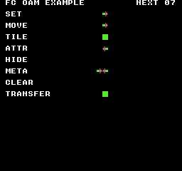
ビルドコマンド
New-Item -ItemType Directory -Force .\out | Out-Null
.\kitaqfc\kitaqfc.exe .\kitaq-docs\samples\api-examples\fc\oam_page.c -I .\kitaqfc\lib -I .\kitaq-docs\samples --nes-chr=.\kitaq-docs\samples\sprite_example.chr -o .\out\oam_page.nes --no-cache --no-disasm実装とソース
kitaqfc/lib/intrinsics.h:184
Set OAMADDR to zero and DMA 256 bytes from page<<8. The source page must remain readable.
case "__oam_dma_page": if (!Need(1)) return true; EmitAsm("LDA", Imm(0)); EmitAsm("STA", Mem(0x2003)); Load1(args[0]); EmitAsm("STA", Mem(0x4014)); return true;__pad_buttons
渡されたNES形式の値のbit 0～3（pad & 0x0F）を残し、A・B・Select・Startだけを取り出します。読込済みの値を加工するだけで、コントローラにはアクセスしません。
書式
u8 __pad_buttons(u8 pad);引数
pad__pad_read1_safe()の戻り値など、読込済みの8ビットNESパッド値です。ポインタ、ポート番号、input_*の共通形式のマスクではなく、その値自体を渡します。
戻り値
上記のビット順による0～15のマスクです。複数のビットが立つ場合があるため、全体が1かどうかではなく result & bit で特定のボタンを調べます。
使用条件と制限
NESの生の形式は A=0x01、B=0x02、SELECT=0x04、START=0x08、UP=0x10、DOWN=0x20、LEFT=0x40、RIGHT=0x80 です。ビット1が押下中です。nes_pad_* と生の __pad_* の結果にはこの値を使い、input.h の共通 BTN_* マスクとは混同しないでください。
使用例
buttons=__pad_buttons(raw1); // Low nibble of 129: 1, the A button.呼び出し部分のコード例です。完全なプログラムに組み込む際は、記載した初期化とバッファの条件を満たしてください。
期待する結果
2つのコントローラーポート、通常読み取りと一致確認付き読み取り、マスク抽出、短縮マクロを比較するプログラムです。コントローラー1ではAと右、コントローラー2ではBと左を同時に押します。RAW P1、SAFE P1、ALIAS P1は129、P2の3項目は66になります。BUTTONS P1は1、DIRS P1は128です。方向の抽出では上位ビットの位置を保ちます。FAILED CHECKSは0が正常です。取得した値は画面に残ります。
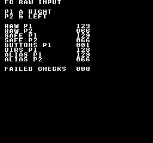
ビルドコマンド
New-Item -ItemType Directory -Force .\out | Out-Null
.\kitaqfc\kitaqfc.exe .\kitaq-docs\samples\api-examples\fc\input_raw.c -I .\kitaqfc\lib -I .\kitaq-docs\samples -o .\out\input_raw.nes --mapper=nrom --nes-chr=.\kitaq-docs\samples\font.chr --no-disasm --no-cache実装とソース
kitaqfc/lib/intrinsics.h:209
Return pad & 0F for A/B/Select/Start; this masks a supplied snapshot and performs no polling.
__pad_dirs
渡されたNES形式の値のbit 4～7（pad & 0xF0）を残し、上・下・左・右だけを取り出します。ビットは元の位置のままなので、右だけなら8ではなく128です。コントローラの読込は行いません。
書式
u8 __pad_dirs(u8 pad);引数
pad__pad_read1_safe()の戻り値など、読込済みの8ビットNESパッド値です。ポインタ、ポート番号、input_*の共通形式のマスクではなく、その値自体を渡します。
戻り値
渡された値と 0xF0 のANDで、0、16、32、…、240のいずれかです。方向ビットはbit 4～7の位置を保ちます。
使用条件と制限
NESの生の形式は A=0x01、B=0x02、SELECT=0x04、START=0x08、UP=0x10、DOWN=0x20、LEFT=0x40、RIGHT=0x80 です。ビット1が押下中です。nes_pad_* と生の __pad_* の結果にはこの値を使い、input.h の共通 BTN_* マスクとは混同しないでください。
使用例
directions=__pad_dirs(raw1); // High nibble retained in place: 128, not 8.呼び出し部分のコード例です。完全なプログラムに組み込む際は、記載した初期化とバッファの条件を満たしてください。
期待する結果
2つのコントローラーポート、通常読み取りと一致確認付き読み取り、マスク抽出、短縮マクロを比較するプログラムです。コントローラー1ではAと右、コントローラー2ではBと左を同時に押します。RAW P1、SAFE P1、ALIAS P1は129、P2の3項目は66になります。BUTTONS P1は1、DIRS P1は128です。方向の抽出では上位ビットの位置を保ちます。FAILED CHECKSは0が正常です。取得した値は画面に残ります。
ビルドコマンド
New-Item -ItemType Directory -Force .\out | Out-Null
.\kitaqfc\kitaqfc.exe .\kitaq-docs\samples\api-examples\fc\input_raw.c -I .\kitaqfc\lib -I .\kitaq-docs\samples -o .\out\input_raw.nes --mapper=nrom --nes-chr=.\kitaq-docs\samples\font.chr --no-disasm --no-cache実装とソース
kitaqfc/lib/intrinsics.h:211
Return pad & F0 in the original bit positions; this does not normalize directions to bits 0..3.
__pad_read1
$4016 に1→0を書いて両コントローラの状態をラッチし、$4016 のD0からコントローラ1の8ビットをシリアル読込します。NES形式の押下中マスクを1回読み取って返します。再試行や押下・解放の変化の計算は行いません。
書式
u8 __pad_read1(void);戻り値
NESの生のビット順による8ビットの押下中マスクです。各ビット1が押されているボタンを表し、0はなしです。0/1に正規化された真偽値ではありません。
使用条件と制限
NESの生の形式は A=0x01、B=0x02、SELECT=0x04、START=0x08、UP=0x10、DOWN=0x20、LEFT=0x40、RIGHT=0x80 です。ビット1が押下中です。nes_pad_* と生の __pad_* の結果にはこの値を使い、input.h の共通 BTN_* マスクとは混同しないでください。
この呼び出しはハードウェアの状態を新たに読みます。input_* や nes_pad1_* の保存状態は更新せず、押下・解放イベントやリピートも生成しません。必要なら読み取った値を保存し、自分で保持した前回マスクと比較して変化を求めてください。
使用例
raw1=__pad_read1(); // Controller 1: A (1) | Right (128) = 129.呼び出し部分のコード例です。完全なプログラムに組み込む際は、記載した初期化とバッファの条件を満たしてください。
期待する結果
2つのコントローラーポート、通常読み取りと一致確認付き読み取り、マスク抽出、短縮マクロを比較するプログラムです。コントローラー1ではAと右、コントローラー2ではBと左を同時に押します。RAW P1、SAFE P1、ALIAS P1は129、P2の3項目は66になります。BUTTONS P1は1、DIRS P1は128です。方向の抽出では上位ビットの位置を保ちます。FAILED CHECKSは0が正常です。取得した値は画面に残ります。
ビルドコマンド
New-Item -ItemType Directory -Force .\out | Out-Null
.\kitaqfc\kitaqfc.exe .\kitaq-docs\samples\api-examples\fc\input_raw.c -I .\kitaqfc\lib -I .\kitaq-docs\samples -o .\out\input_raw.nes --mapper=nrom --nes-chr=.\kitaq-docs\samples\font.chr --no-disasm --no-cache実装とソース
kitaqfc/lib/intrinsics.h:201
Latch and sample eight D0 bits from port 1; bit order is A,B,Select,Start,Up,Down,Left,Right.
__pad_read1_d1
$4016の拡張入力D1から8ビットをシリアル読み取りします。$4016に1、0の順に書いてコントローラーの状態をラッチし、ビット1を8回読み、順に結果のビット0〜7へ格納します。ポート1のD1を1回読み取る処理です。通常のコントローラーが使うD0の読み取りや、一致確認のための再試行は行いません。
書式
u8 __pad_read1_d1(void);戻り値
NESの生のビット順による8ビットの押下中マスクです。各ビット1が押されているボタンを表し、0はなしです。0/1に正規化された真偽値ではありません。
使用条件と制限
NESの生の形式は A=0x01、B=0x02、SELECT=0x04、START=0x08、UP=0x10、DOWN=0x20、LEFT=0x40、RIGHT=0x80 です。ビット1が押下中です。nes_pad_* と生の __pad_* の結果にはこの値を使い、input.h の共通 BTN_* マスクとは混同しないでください。
選択したD1に互換性のある8ビットのシリアルパッド信号を出す周辺機器で使います。接続機器の識別や、すべての拡張機器の通信方式への対応は行いません。各呼び出しで両コントローラーの読み取り列をラッチし直すため、1つの読み取りを完了させてから次を始めてください。結果は新たに取得した状態で、input_*やnes_pad1_*の保存済み状態は更新しません。
公開版KUROSAKIのコントローラーモデルが返すのはD0と固定のビット6だけです。そのため通常のボタンを押していても、同エミュレーターではD1とマイクのビットは常に0になります。付属の検証で確認したのは、ビルド、通常ボタン入力、この0の信号表示です。周辺機器からの0以外の信号、電気的タイミング、実機での互換性は未確認です。ここで0が表示されても、接続機器が動作する証明や、実機でも読み取れないという証明にはなりません。
使用例
d1_first=__pad_read1_d1();呼び出し部分のコード例です。完全なプログラムに組み込む際は、記載した初期化とバッファの条件を満たしてください。
期待する結果
通常入力のD0、拡張入力のD1、マイクのデジタルレベルを比較するプログラムです。状態が取得されるまでコントローラー1のAとコントローラー2のBを押します。NORMAL P1とNORMAL P2は001、002になります。付属のKUROSAKI実行結果では、D1 PORT 1、D1 PORT 2、EXP ALIAS 1、EXP ALIAS 2、MIC LEVEL、MIC DIRECTはすべて000です。対応する信号線がエミュレートされていないためです。取得後の表示は固定されます。適切な周辺機器と信号線の実装がある環境では実際の入力で値が変わるため、この0を期待値とせず、上記のビット配置に従って読み取ってください。
公開版KUROSAKIのコントローラーモデルが返すのはD0と固定のビット6だけです。そのため通常のボタンを押していても、同エミュレーターではD1とマイクのビットは常に0になります。付属の検証で確認したのは、ビルド、通常ボタン入力、この0の信号表示です。周辺機器からの0以外の信号、電気的タイミング、実機での互換性は未確認です。ここで0が表示されても、接続機器が動作する証明や、実機でも読み取れないという証明にはなりません。
ビルドコマンド
New-Item -ItemType Directory -Force .\out | Out-Null
.\kitaqfc\kitaqfc.exe .\kitaq-docs\samples\api-examples\fc\expansion_input.c -I .\kitaq-docs\samples -I .\kitaqfc\lib -o .\out\expansion_input.nes --mapper=nrom --nes-chr=.\kitaq-docs\samples\font.chr --no-cache --no-disasm実装とソース
kitaqfc/lib/intrinsics.h:219
Famicom/NES expansion input devices. D1 readers are for expansion-port controllers/joysticks that expose a standard 8-bit joypad stream on data line D1 instead of D0. __joypad2p_voice() / __mic_read2p() return the Famicom 2P microphone bit. / Latch and read an eight-button stream from port-1 data line D1 rather than D0.
__pad_read1_safe
__pad_read1() による全ボタンの読込を2回ずつ繰り返し、コントローラ1の二つの読込値が一致したらNES形式のマスクを返します。新たな押下イベントではなく、押下中の状態です。
書式
u8 __pad_read1_safe(void);戻り値
NESの生のビット順による8ビットの押下中マスクです。各ビット1が押されているボタンを表し、0はなしです。0/1に正規化された真偽値ではありません。
使用条件と制限
NESの生の形式は A=0x01、B=0x02、SELECT=0x04、START=0x08、UP=0x10、DOWN=0x20、LEFT=0x40、RIGHT=0x80 です。ビット1が押下中です。nes_pad_* と生の __pad_* の結果にはこの値を使い、input.h の共通 BTN_* マスクとは混同しないでください。
この呼び出しはハードウェアの状態を新たに読みます。input_* や nes_pad1_* の保存状態は更新せず、押下・解放イベントやリピートも生成しません。必要なら読み取った値を保存し、自分で保持した前回マスクと比較して変化を求めてください。
safe版は全ボタンを2回ずつ読み、二つのマスクが一致するまで繰り返します。各読込で $4016 をストローブし、両コントローラのシリアル読込位置を先頭へ戻します。再試行回数に上限はありません。この一致確認だけで、すべてのDMC・周辺機器との組み合わせを保証するわけではありません。
使用例
safe1=__pad_read1_safe(); // Repeat paired controller-1 reads until they agree.呼び出し部分のコード例です。完全なプログラムに組み込む際は、記載した初期化とバッファの条件を満たしてください。
期待する結果
2つのコントローラーポート、通常読み取りと一致確認付き読み取り、マスク抽出、短縮マクロを比較するプログラムです。コントローラー1ではAと右、コントローラー2ではBと左を同時に押します。RAW P1、SAFE P1、ALIAS P1は129、P2の3項目は66になります。BUTTONS P1は1、DIRS P1は128です。方向の抽出では上位ビットの位置を保ちます。FAILED CHECKSは0が正常です。取得した値は画面に残ります。
ビルドコマンド
New-Item -ItemType Directory -Force .\out | Out-Null
.\kitaqfc\kitaqfc.exe .\kitaq-docs\samples\api-examples\fc\input_raw.c -I .\kitaqfc\lib -I .\kitaq-docs\samples -o .\out\input_raw.nes --mapper=nrom --nes-chr=.\kitaq-docs\samples\font.chr --no-disasm --no-cache実装とソース
kitaqfc/lib/intrinsics.h:205
Repeat pairs of port-1 polls until both bytes match; the retry loop has no fixed limit.
__pad_read2
$4016 に1→0を書いて両コントローラの状態をラッチし、$4017 のD0からコントローラ2の8ビットをシリアル読込します。NES形式の押下中マスクを1回読み取って返します。再試行や押下・解放の変化の計算は行いません。
書式
u8 __pad_read2(void);戻り値
NESの生のビット順による8ビットの押下中マスクです。各ビット1が押されているボタンを表し、0はなしです。0/1に正規化された真偽値ではありません。
使用条件と制限
NESの生の形式は A=0x01、B=0x02、SELECT=0x04、START=0x08、UP=0x10、DOWN=0x20、LEFT=0x40、RIGHT=0x80 です。ビット1が押下中です。nes_pad_* と生の __pad_* の結果にはこの値を使い、input.h の共通 BTN_* マスクとは混同しないでください。
この呼び出しはハードウェアの状態を新たに読みます。input_* や nes_pad1_* の保存状態は更新せず、押下・解放イベントやリピートも生成しません。必要なら読み取った値を保存し、自分で保持した前回マスクと比較して変化を求めてください。
使用例
raw2=__pad_read2(); // Controller 2: B (2) | Left (64) = 66.呼び出し部分のコード例です。完全なプログラムに組み込む際は、記載した初期化とバッファの条件を満たしてください。
期待する結果
2つのコントローラーポート、通常読み取りと一致確認付き読み取り、マスク抽出、短縮マクロを比較するプログラムです。コントローラー1ではAと右、コントローラー2ではBと左を同時に押します。RAW P1、SAFE P1、ALIAS P1は129、P2の3項目は66になります。BUTTONS P1は1、DIRS P1は128です。方向の抽出では上位ビットの位置を保ちます。FAILED CHECKSは0が正常です。取得した値は画面に残ります。
ビルドコマンド
New-Item -ItemType Directory -Force .\out | Out-Null
.\kitaqfc\kitaqfc.exe .\kitaq-docs\samples\api-examples\fc\input_raw.c -I .\kitaqfc\lib -I .\kitaq-docs\samples -o .\out\input_raw.nes --mapper=nrom --nes-chr=.\kitaq-docs\samples\font.chr --no-disasm --no-cache実装とソース
kitaqfc/lib/intrinsics.h:203
Latch and sample eight D0 bits from port 2 in the same NES button order.
__pad_read2_d1
$4017の拡張入力D1から8ビットをシリアル読み取りします。$4016に1、0の順に書いてコントローラーの状態をラッチし、ビット1を8回読み、順に結果のビット0〜7へ格納します。ポート2のD1を1回読み取る処理です。通常のコントローラーが使うD0の読み取りや、一致確認のための再試行は行いません。
書式
u8 __pad_read2_d1(void);戻り値
NESの生のビット順による8ビットの押下中マスクです。各ビット1が押されているボタンを表し、0はなしです。0/1に正規化された真偽値ではありません。
使用条件と制限
NESの生の形式は A=0x01、B=0x02、SELECT=0x04、START=0x08、UP=0x10、DOWN=0x20、LEFT=0x40、RIGHT=0x80 です。ビット1が押下中です。nes_pad_* と生の __pad_* の結果にはこの値を使い、input.h の共通 BTN_* マスクとは混同しないでください。
選択したD1に互換性のある8ビットのシリアルパッド信号を出す周辺機器で使います。接続機器の識別や、すべての拡張機器の通信方式への対応は行いません。各呼び出しで両コントローラーの読み取り列をラッチし直すため、1つの読み取りを完了させてから次を始めてください。結果は新たに取得した状態で、input_*やnes_pad1_*の保存済み状態は更新しません。
公開版KUROSAKIのコントローラーモデルが返すのはD0と固定のビット6だけです。そのため通常のボタンを押していても、同エミュレーターではD1とマイクのビットは常に0になります。付属の検証で確認したのは、ビルド、通常ボタン入力、この0の信号表示です。周辺機器からの0以外の信号、電気的タイミング、実機での互換性は未確認です。ここで0が表示されても、接続機器が動作する証明や、実機でも読み取れないという証明にはなりません。
使用例
d1_second=__pad_read2_d1();呼び出し部分のコード例です。完全なプログラムに組み込む際は、記載した初期化とバッファの条件を満たしてください。
期待する結果
通常入力のD0、拡張入力のD1、マイクのデジタルレベルを比較するプログラムです。状態が取得されるまでコントローラー1のAとコントローラー2のBを押します。NORMAL P1とNORMAL P2は001、002になります。付属のKUROSAKI実行結果では、D1 PORT 1、D1 PORT 2、EXP ALIAS 1、EXP ALIAS 2、MIC LEVEL、MIC DIRECTはすべて000です。対応する信号線がエミュレートされていないためです。取得後の表示は固定されます。適切な周辺機器と信号線の実装がある環境では実際の入力で値が変わるため、この0を期待値とせず、上記のビット配置に従って読み取ってください。
公開版KUROSAKIのコントローラーモデルが返すのはD0と固定のビット6だけです。そのため通常のボタンを押していても、同エミュレーターではD1とマイクのビットは常に0になります。付属の検証で確認したのは、ビルド、通常ボタン入力、この0の信号表示です。周辺機器からの0以外の信号、電気的タイミング、実機での互換性は未確認です。ここで0が表示されても、接続機器が動作する証明や、実機でも読み取れないという証明にはなりません。
ビルドコマンド
New-Item -ItemType Directory -Force .\out | Out-Null
.\kitaqfc\kitaqfc.exe .\kitaq-docs\samples\api-examples\fc\expansion_input.c -I .\kitaq-docs\samples -I .\kitaqfc\lib -o .\out\expansion_input.nes --mapper=nrom --nes-chr=.\kitaq-docs\samples\font.chr --no-cache --no-disasm実装とソース
kitaqfc/lib/intrinsics.h:221
Latch and read an eight-button stream from port-2 data line D1 rather than D0.
__pad_read2_safe
__pad_read2() による全ボタンの読込を2回ずつ繰り返し、コントローラ2の二つの読込値が一致したらNES形式のマスクを返します。新たな押下イベントではなく、押下中の状態です。
書式
u8 __pad_read2_safe(void);戻り値
NESの生のビット順による8ビットの押下中マスクです。各ビット1が押されているボタンを表し、0はなしです。0/1に正規化された真偽値ではありません。
使用条件と制限
NESの生の形式は A=0x01、B=0x02、SELECT=0x04、START=0x08、UP=0x10、DOWN=0x20、LEFT=0x40、RIGHT=0x80 です。ビット1が押下中です。nes_pad_* と生の __pad_* の結果にはこの値を使い、input.h の共通 BTN_* マスクとは混同しないでください。
この呼び出しはハードウェアの状態を新たに読みます。input_* や nes_pad1_* の保存状態は更新せず、押下・解放イベントやリピートも生成しません。必要なら読み取った値を保存し、自分で保持した前回マスクと比較して変化を求めてください。
safe版は全ボタンを2回ずつ読み、二つのマスクが一致するまで繰り返します。各読込で $4016 をストローブし、両コントローラのシリアル読込位置を先頭へ戻します。再試行回数に上限はありません。この一致確認だけで、すべてのDMC・周辺機器との組み合わせを保証するわけではありません。
使用例
safe2=__pad_read2_safe(); // The same consistency check on controller 2.呼び出し部分のコード例です。完全なプログラムに組み込む際は、記載した初期化とバッファの条件を満たしてください。
期待する結果
2つのコントローラーポート、通常読み取りと一致確認付き読み取り、マスク抽出、短縮マクロを比較するプログラムです。コントローラー1ではAと右、コントローラー2ではBと左を同時に押します。RAW P1、SAFE P1、ALIAS P1は129、P2の3項目は66になります。BUTTONS P1は1、DIRS P1は128です。方向の抽出では上位ビットの位置を保ちます。FAILED CHECKSは0が正常です。取得した値は画面に残ります。
ビルドコマンド
New-Item -ItemType Directory -Force .\out | Out-Null
.\kitaqfc\kitaqfc.exe .\kitaq-docs\samples\api-examples\fc\input_raw.c -I .\kitaqfc\lib -I .\kitaq-docs\samples -o .\out\input_raw.nes --mapper=nrom --nes-chr=.\kitaq-docs\samples\font.chr --no-disasm --no-cache実装とソース
kitaqfc/lib/intrinsics.h:207
Repeat pairs of port-2 polls until both bytes match; this does not populate pad.c globals.
__palette_bg_load
PPUラッチをリセットし、アドレスを0x3F00にして、4組の背景パレット用に転送元の16バイトをPPUDATAへ書きます。即時転送であり、ネームテーブルの属性によるパレット選択やタイル画像の読み込みは行いません。
書式
void __palette_bg_load(const u8* pal16);引数
pal16NESのパレットコード16バイトを読めるCPU側ポインターです。RGBの3成分ではなく、パレットコードを渡します。同期呼び出しが戻るまで転送元のバンクを保ってください。バンク切り替えや長さ確認は行いません。意図した16個のパレットアドレスへ書くため、PPU増分1を使います。
戻り値
ありません（void）。
使用条件と制限
PPUアドレス0x3F10/14/18/1Cは0x3F00/04/08/0Cと同じ保存場所です。スプライトパレットを読み込むと、これらの背景エントリーも書き換えます。コンパイラは指定バイトをそのまま送り、色の妥当性確認、パレットの合成、共有エントリーの保存は行いません。
PPU直接アクセスは、描画停止中か、処理全体が安全なVBlank時間内に収まる条件で行います。これらの関数は待機・キュー登録・NMI抑止・スクロール復元を行いません。呼び出し中に割り込みで共有ラッチやアドレスを変更しないでください。PPUCTRLのビット2により、書き込み先は1バイトごとに1または32進みます。ミラーリングとアドレスの周回はPPUの動作に従い、CHR-ROMへは書き込めません。アクセス後、描画を始める前に意図したスクロール状態を設定してください。
使用例
__palette_bg_load(scene_palette); // Four background palettes, 16 bytes total.呼び出し部分のコード例です。完全なプログラムに組み込む際は、記載した初期化とバッファの条件を満たしてください。
期待する結果
このプログラムではレジスター設定、タイル・属性の直接書き込み、スクロール、背景・スプライトそれぞれのパレット転送を学びます。(0,16)の青い帯は256×16ピクセルです。上段は8×8の塗りつぶし、左半分4×8の棒、8行の三角形を繰り返し、下段は左半分の棒だけを並べます。(16,48)に緑の塗りつぶし64×32、(144,48)に三角形タイルを横8個・縦4個並べた赤い64×32の領域が出ます。
y=96では、x=16・24・32に青い正方形・左半分の棒・三角形、x=80に赤い左半分の棒、x=144に緑の三角形が表示されます。これらは背景タイルです。別パレットを使うスプライトはy=144に並び、x=16が赤い8×8の正方形、x=80が青い左半分4×8の棒、x=144が緑の8行の三角形です。最終スクロールは(0,0)です。
画像ではスプライトの色も含め、16,384ピクセルの形と色を照合します。別の31ケースで、レジスターの置き換え、ステータス・ラッチの副作用、スクロール保存値、0・255バイト転送、増分1・32、マップ端、矩形の寸法0、テーブル選択、属性1バイト全体、背景・スプライト両方のパレットを検証しています。Y=255はレジスターへ書く値としての確認で、正しいスクロール画像の検証ではありません。検証環境はKUROSAKIのNROMで、実機は未検証です。
ビルドコマンド
New-Item -ItemType Directory -Force .\out | Out-Null
.\kitaqfc\kitaqfc.exe .\kitaq-docs\samples\api-examples\fc\ppu_intrinsics.c -I .\kitaqfc\lib -I .\kitaq-docs\samples --nes-chr=.\kitaq-docs\samples\api-examples\fc\vram_shapes.chr -o .\out\ppu_intrinsics.nes --no-cache --no-disasm実装とソース
kitaqfc/lib/intrinsics.h:134
Stream exactly 16 source bytes to 3F00. Arrange PPU access timing and increment one.
kitaqfc/kitaqfc/CodeGenerator.cs:4598
case "__palette_bg_load": return EmitKitaqfcHelperCall(funcName, args, ctx, new[] {2}, funcName);
void EmitHelperPalette(string name, int ppuAddress)
{
EmitHelperStart(name);
EmitAsm("LDA", Mem(0x2002));
EmitAsm("LDA", Imm((ppuAddress >> 8) & 0xFF));
EmitAsm("STA", Mem(0x2006));
EmitAsm("LDA", Imm(ppuAddress & 0xFF));
EmitAsm("STA", Mem(0x2006));
EmitAsm("LDY", Imm(0));
string loop = NewGeneratedLabel("pal_loop");
_assembly.Add(Expr.Make(Tag.Label, loop));
EmitAsm("LDA", IndY(CallArgBase));
EmitAsm("STA", Mem(0x2007));
EmitAsm("INY");
EmitAsm("CPY", Imm(16));
EmitAsm("BNE", Rel(loop));
EmitAsm("RTS");
}
EmitHelperPalette("__palette_bg_load", 0x3F00);__palette_sp_load
PPUラッチをリセットし、アドレスを0x3F10にして、4組のスプライトパレット用に転送元の16バイトをPPUDATAへ書きます。表示に使うパレットはスプライト属性のビットで選びます。この呼び出しはOAMの変更やスプライトのタイル画像転送を行いません。
書式
void __palette_sp_load(const u8* pal16);引数
pal16NESのパレットコード16バイトを読めるCPU側ポインターです。RGBの3成分ではなく、パレットコードを渡します。同期呼び出しが戻るまで転送元のバンクを保ってください。バンク切り替えや長さ確認は行いません。意図した16個のパレットアドレスへ書くため、PPU増分1を使います。
戻り値
ありません（void）。
使用条件と制限
PPUアドレス0x3F10/14/18/1Cは0x3F00/04/08/0Cと同じ保存場所です。スプライトパレットを読み込むと、これらの背景エントリーも書き換えます。コンパイラは指定バイトをそのまま送り、色の妥当性確認、パレットの合成、共有エントリーの保存は行いません。
PPU直接アクセスは、描画停止中か、処理全体が安全なVBlank時間内に収まる条件で行います。これらの関数は待機・キュー登録・NMI抑止・スクロール復元を行いません。呼び出し中に割り込みで共有ラッチやアドレスを変更しないでください。PPUCTRLのビット2により、書き込み先は1バイトごとに1または32進みます。ミラーリングとアドレスの周回はPPUの動作に従い、CHR-ROMへは書き込めません。アクセス後、描画を始める前に意図したスクロール状態を設定してください。
使用例
__palette_sp_load(scene_palette); // Four sprite palettes, 16 bytes total.呼び出し部分のコード例です。完全なプログラムに組み込む際は、記載した初期化とバッファの条件を満たしてください。
期待する結果
このプログラムではレジスター設定、タイル・属性の直接書き込み、スクロール、背景・スプライトそれぞれのパレット転送を学びます。(0,16)の青い帯は256×16ピクセルです。上段は8×8の塗りつぶし、左半分4×8の棒、8行の三角形を繰り返し、下段は左半分の棒だけを並べます。(16,48)に緑の塗りつぶし64×32、(144,48)に三角形タイルを横8個・縦4個並べた赤い64×32の領域が出ます。
y=96では、x=16・24・32に青い正方形・左半分の棒・三角形、x=80に赤い左半分の棒、x=144に緑の三角形が表示されます。これらは背景タイルです。別パレットを使うスプライトはy=144に並び、x=16が赤い8×8の正方形、x=80が青い左半分4×8の棒、x=144が緑の8行の三角形です。最終スクロールは(0,0)です。
画像ではスプライトの色も含め、16,384ピクセルの形と色を照合します。別の31ケースで、レジスターの置き換え、ステータス・ラッチの副作用、スクロール保存値、0・255バイト転送、増分1・32、マップ端、矩形の寸法0、テーブル選択、属性1バイト全体、背景・スプライト両方のパレットを検証しています。Y=255はレジスターへ書く値としての確認で、正しいスクロール画像の検証ではありません。検証環境はKUROSAKIのNROMで、実機は未検証です。
ビルドコマンド
New-Item -ItemType Directory -Force .\out | Out-Null
.\kitaqfc\kitaqfc.exe .\kitaq-docs\samples\api-examples\fc\ppu_intrinsics.c -I .\kitaqfc\lib -I .\kitaq-docs\samples --nes-chr=.\kitaq-docs\samples\api-examples\fc\vram_shapes.chr -o .\out\ppu_intrinsics.nes --no-cache --no-disasm実装とソース
kitaqfc/lib/intrinsics.h:136
Stream exactly 16 source bytes to 3F10; hardware palette aliases also affect background entries.
kitaqfc/kitaqfc/CodeGenerator.cs:4599
case "__palette_sp_load": return EmitKitaqfcHelperCall(funcName, args, ctx, new[] {2}, funcName);
// Clear queued length and readiness; the overflow indicator has a separate reset intrinsic.
void EmitHelperPalette(string name, int ppuAddress)
{
EmitHelperStart(name);
EmitAsm("LDA", Mem(0x2002));
EmitAsm("LDA", Imm((ppuAddress >> 8) & 0xFF));
EmitAsm("STA", Mem(0x2006));
EmitAsm("LDA", Imm(ppuAddress & 0xFF));
EmitAsm("STA", Mem(0x2006));
EmitAsm("LDY", Imm(0));
string loop = NewGeneratedLabel("pal_loop");
_assembly.Add(Expr.Make(Tag.Label, loop));
EmitAsm("LDA", IndY(CallArgBase));
EmitAsm("STA", Mem(0x2007));
EmitAsm("INY");
EmitAsm("CPY", Imm(16));
EmitAsm("BNE", Rel(loop));
EmitAsm("RTS");
}
EmitHelperPalette("__palette_sp_load", 0x3F10);__ppu_addr
ppu_addrを一度評価し、PPUSTATUSを読んで共有書き込みラッチをリセットしてから、上位・下位アドレスをPPUADDRへ書きます。後続のPPUDATAアクセス先を設定するだけで、データそのものは書きません。PPUのアドレスマスクとミラーリングが適用されます。
書式
void __ppu_addr(u16 ppu_addr);引数
ppu_addrCPUポインターではなく、PPUのバイトアドレス（
0x0000～0x3FFF）です。転送先は書き込み可能でなければなりません。パターンの変更にはCHR ROMではなくCHR RAMが必要です。PPUのマッピングとミラーリングが適用されます。連続したコピーや埋め込みではPPUCTRLの増分を1にしてください。安全にPPUへ書ける時期に実行し、その後で必要なスクロール状態を設定してください。実行処理はPPUADDRとPPUDATAを使い、スクロール設定を復元しません。
戻り値
ありません（void）。
使用条件と制限
PPU直接アクセスは、描画停止中か、処理全体が安全なVBlank時間内に収まる条件で行います。これらの関数は待機・キュー登録・NMI抑止・スクロール復元を行いません。呼び出し中に割り込みで共有ラッチやアドレスを変更しないでください。PPUCTRLのビット2により、書き込み先は1バイトごとに1または32進みます。ミラーリングとアドレスの周回はPPUの動作に従い、CHR-ROMへは書き込めません。アクセス後、描画を始める前に意図したスクロール状態を設定してください。
使用例
address_port=0x21;
__ppu_addr(0x2192); // Reset latch and set the cell at tile (18,12).呼び出し部分のコード例です。完全なプログラムに組み込む際は、記載した初期化とバッファの条件を満たしてください。
期待する結果
このプログラムではレジスター設定、タイル・属性の直接書き込み、スクロール、背景・スプライトそれぞれのパレット転送を学びます。(0,16)の青い帯は256×16ピクセルです。上段は8×8の塗りつぶし、左半分4×8の棒、8行の三角形を繰り返し、下段は左半分の棒だけを並べます。(16,48)に緑の塗りつぶし64×32、(144,48)に三角形タイルを横8個・縦4個並べた赤い64×32の領域が出ます。
y=96では、x=16・24・32に青い正方形・左半分の棒・三角形、x=80に赤い左半分の棒、x=144に緑の三角形が表示されます。これらは背景タイルです。別パレットを使うスプライトはy=144に並び、x=16が赤い8×8の正方形、x=80が青い左半分4×8の棒、x=144が緑の8行の三角形です。最終スクロールは(0,0)です。
画像ではスプライトの色も含め、16,384ピクセルの形と色を照合します。別の31ケースで、レジスターの置き換え、ステータス・ラッチの副作用、スクロール保存値、0・255バイト転送、増分1・32、マップ端、矩形の寸法0、テーブル選択、属性1バイト全体、背景・スプライト両方のパレットを検証しています。Y=255はレジスターへ書く値としての確認で、正しいスクロール画像の検証ではありません。検証環境はKUROSAKIのNROMで、実機は未検証です。
ビルドコマンド
New-Item -ItemType Directory -Force .\out | Out-Null
.\kitaqfc\kitaqfc.exe .\kitaq-docs\samples\api-examples\fc\ppu_intrinsics.c -I .\kitaqfc\lib -I .\kitaq-docs\samples --nes-chr=.\kitaq-docs\samples\api-examples\fc\vram_shapes.chr -o .\out\ppu_intrinsics.nes --no-cache --no-disasm実装とソース
kitaqfc/lib/intrinsics.h:102
Set the PPU address through the compiler helper; address writes affect the shared scroll/address latch.
kitaqfc/kitaqfc/CodeGenerator.cs:4469
case "__ppu_addr":
if (!Need(1)) return true;
PpuAddr(args[0]); return true;
void PpuAddr(Expr e)
{
int[] t = AcquireTemps(2);
try
{
EmitLoadValue(e, ctx, 2);
EmitAsm("STA", Mem(t[0]));
EmitAsm("STX", Mem(t[1]));
EmitAsm("LDA", Mem(0x2002));
EmitAsm("LDA", Mem(t[1]));
EmitAsm("STA", Mem(0x2006));
EmitAsm("LDA", Mem(t[0]));
EmitAsm("STA", Mem(0x2006));
}
finally { ReleaseTemps(t); }
}__ppu_ctrl_set
PPUCTRLとソフトウェア側の保存値を指定した1バイトに置き換えます。NMIの有効化、PPUアドレスの増分、パターンテーブル、スプライトサイズ、基準ネームテーブルを制御します。PPUMASKは変更せず、指定しなかったビットを保存する処理もありません。
書式
void __ppu_ctrl_set(u8 value);引数
value指定どおりに書く符号なし1バイト
0..255です。真偽値やビット番号ではなく、レジスターまたはデータの1バイト全体を渡します。
戻り値
ありません（void）。
使用例
__ppu_ctrl_set(0x80); // NMI enabled, increment 1, nametable/pattern tables 0.呼び出し部分のコード例です。完全なプログラムに組み込む際は、記載した初期化とバッファの条件を満たしてください。
期待する結果
このプログラムではレジスター設定、タイル・属性の直接書き込み、スクロール、背景・スプライトそれぞれのパレット転送を学びます。(0,16)の青い帯は256×16ピクセルです。上段は8×8の塗りつぶし、左半分4×8の棒、8行の三角形を繰り返し、下段は左半分の棒だけを並べます。(16,48)に緑の塗りつぶし64×32、(144,48)に三角形タイルを横8個・縦4個並べた赤い64×32の領域が出ます。
y=96では、x=16・24・32に青い正方形・左半分の棒・三角形、x=80に赤い左半分の棒、x=144に緑の三角形が表示されます。これらは背景タイルです。別パレットを使うスプライトはy=144に並び、x=16が赤い8×8の正方形、x=80が青い左半分4×8の棒、x=144が緑の8行の三角形です。最終スクロールは(0,0)です。
画像ではスプライトの色も含め、16,384ピクセルの形と色を照合します。別の31ケースで、レジスターの置き換え、ステータス・ラッチの副作用、スクロール保存値、0・255バイト転送、増分1・32、マップ端、矩形の寸法0、テーブル選択、属性1バイト全体、背景・スプライト両方のパレットを検証しています。Y=255はレジスターへ書く値としての確認で、正しいスクロール画像の検証ではありません。検証環境はKUROSAKIのNROMで、実機は未検証です。
ビルドコマンド
New-Item -ItemType Directory -Force .\out | Out-Null
.\kitaqfc\kitaqfc.exe .\kitaq-docs\samples\api-examples\fc\ppu_intrinsics.c -I .\kitaqfc\lib -I .\kitaq-docs\samples --nes-chr=.\kitaq-docs\samples\api-examples\fc\vram_shapes.chr -o .\out\ppu_intrinsics.nes --no-cache --no-disasm実装とソース
kitaqfc/lib/intrinsics.h:100
Replace PPUCTRL, including NMI enable, pattern-table choices and address increment mode.
kitaqfc/kitaqfc/CodeGenerator.cs:4465
case "__ppu_ctrl_set":
if (!Need(1)) return true;
Store1(args[0], _runtimePpuCtrlShadowAddress); EmitAsm("STA", Mem(0x2000)); return true;
// Direct PPU address/data access does not wait for a safe rendering interval here.__ppu_data
現在のPPUアドレスへ、PPUDATAを通じてvalueを1回書きます。その後PPUアドレスはPPUCTRLの設定に従い1または32進みます。この呼び出しはアドレス設定、ラッチのリセット、転送キューへの登録を行いません。
書式
void __ppu_data(u8 value);引数
value指定どおりに書く符号なし1バイト
0..255です。真偽値やビット番号ではなく、レジスターまたはデータの1バイト全体を渡します。
戻り値
ありません（void）。
使用条件と制限
PPU直接アクセスは、描画停止中か、処理全体が安全なVBlank時間内に収まる条件で行います。これらの関数は待機・キュー登録・NMI抑止・スクロール復元を行いません。呼び出し中に割り込みで共有ラッチやアドレスを変更しないでください。PPUCTRLのビット2により、書き込み先は1バイトごとに1または32進みます。ミラーリングとアドレスの周回はPPUの動作に従い、CHR-ROMへは書き込めません。アクセス後、描画を始める前に意図したスクロール状態を設定してください。
使用例
__ppu_data(3); // Green triangle at (144,96); destination advances by one.呼び出し部分のコード例です。完全なプログラムに組み込む際は、記載した初期化とバッファの条件を満たしてください。
期待する結果
このプログラムではレジスター設定、タイル・属性の直接書き込み、スクロール、背景・スプライトそれぞれのパレット転送を学びます。(0,16)の青い帯は256×16ピクセルです。上段は8×8の塗りつぶし、左半分4×8の棒、8行の三角形を繰り返し、下段は左半分の棒だけを並べます。(16,48)に緑の塗りつぶし64×32、(144,48)に三角形タイルを横8個・縦4個並べた赤い64×32の領域が出ます。
y=96では、x=16・24・32に青い正方形・左半分の棒・三角形、x=80に赤い左半分の棒、x=144に緑の三角形が表示されます。これらは背景タイルです。別パレットを使うスプライトはy=144に並び、x=16が赤い8×8の正方形、x=80が青い左半分4×8の棒、x=144が緑の8行の三角形です。最終スクロールは(0,0)です。
画像ではスプライトの色も含め、16,384ピクセルの形と色を照合します。別の31ケースで、レジスターの置き換え、ステータス・ラッチの副作用、スクロール保存値、0・255バイト転送、増分1・32、マップ端、矩形の寸法0、テーブル選択、属性1バイト全体、背景・スプライト両方のパレットを検証しています。Y=255はレジスターへ書く値としての確認で、正しいスクロール画像の検証ではありません。検証環境はKUROSAKIのNROMで、実機は未検証です。
ビルドコマンド
New-Item -ItemType Directory -Force .\out | Out-Null
.\kitaqfc\kitaqfc.exe .\kitaq-docs\samples\api-examples\fc\ppu_intrinsics.c -I .\kitaqfc\lib -I .\kitaq-docs\samples --nes-chr=.\kitaq-docs\samples\api-examples\fc\vram_shapes.chr -o .\out\ppu_intrinsics.nes --no-cache --no-disasm実装とソース
kitaqfc/lib/intrinsics.h:104
Write one PPUDATA byte using the current PPU address and increment mode.
kitaqfc/kitaqfc/CodeGenerator.cs:4472
case "__ppu_data":
if (!Need(1)) return true;
Load1(args[0]); EmitAsm("STA", Mem(0x2007)); return true;
// Reading PPUSTATUS also has hardware side effects; this is not a side-effect-free status cache.__ppu_mask_set
PPUMASKの全8ビットとソフトウェア側の保存値をvalueに置き換えます。描画、左端の表示、グレースケール、色強調を明示的に選びます。直前のマスクとのビット合成やPPUCTRLの変更は行いません。
書式
void __ppu_mask_set(u8 value);引数
value指定どおりに書く符号なし1バイト
0..255です。真偽値やビット番号ではなく、レジスターまたはデータの1バイト全体を渡します。
戻り値
ありません（void）。
使用例
__ppu_mask_set(0x0A); // Background enabled, including its leftmost eight pixels.呼び出し部分のコード例です。完全なプログラムに組み込む際は、記載した初期化とバッファの条件を満たしてください。
期待する結果
このプログラムではレジスター設定、タイル・属性の直接書き込み、スクロール、背景・スプライトそれぞれのパレット転送を学びます。(0,16)の青い帯は256×16ピクセルです。上段は8×8の塗りつぶし、左半分4×8の棒、8行の三角形を繰り返し、下段は左半分の棒だけを並べます。(16,48)に緑の塗りつぶし64×32、(144,48)に三角形タイルを横8個・縦4個並べた赤い64×32の領域が出ます。
y=96では、x=16・24・32に青い正方形・左半分の棒・三角形、x=80に赤い左半分の棒、x=144に緑の三角形が表示されます。これらは背景タイルです。別パレットを使うスプライトはy=144に並び、x=16が赤い8×8の正方形、x=80が青い左半分4×8の棒、x=144が緑の8行の三角形です。最終スクロールは(0,0)です。
画像ではスプライトの色も含め、16,384ピクセルの形と色を照合します。別の31ケースで、レジスターの置き換え、ステータス・ラッチの副作用、スクロール保存値、0・255バイト転送、増分1・32、マップ端、矩形の寸法0、テーブル選択、属性1バイト全体、背景・スプライト両方のパレットを検証しています。Y=255はレジスターへ書く値としての確認で、正しいスクロール画像の検証ではありません。検証環境はKUROSAKIのNROMで、実機は未検証です。
ビルドコマンド
New-Item -ItemType Directory -Force .\out | Out-Null
.\kitaqfc\kitaqfc.exe .\kitaq-docs\samples\api-examples\fc\ppu_intrinsics.c -I .\kitaqfc\lib -I .\kitaq-docs\samples --nes-chr=.\kitaq-docs\samples\api-examples\fc\vram_shapes.chr -o .\out\ppu_intrinsics.nes --no-cache --no-disasm実装とソース
kitaqfc/lib/intrinsics.h:98
Replace PPUMASK with the supplied byte; the caller chooses rendering, clipping and emphasis bits.
kitaqfc/kitaqfc/CodeGenerator.cs:4461
case "__ppu_mask_set":
if (!Need(1)) return true;
Store1(args[0], _runtimePpuMaskShadowAddress); EmitAsm("STA", Mem(0x2001)); return true;
// Update the PPUCTRL shadow before writing the hardware register.__ppu_off
PPUMASKとソフトウェア側の保存値へ0を書き、背景とスプライトの描画を停止します。グレースケールや色強調も含め、マスクの全ビットを消します。PPUCTRLとNMIの有効状態は変わらないため、共有転送データの準備では必要に応じて別途NMIを制御してください。
書式
void __ppu_off(void);戻り値
ありません（void）。
使用例
__ppu_off(); // PPUMASK and its software shadow become zero; NMI is unchanged.
__ppu_ctrl_set(0); // Disable NMI separately while preparing the whole scene.呼び出し部分のコード例です。完全なプログラムに組み込む際は、記載した初期化とバッファの条件を満たしてください。
期待する結果
このプログラムではレジスター設定、タイル・属性の直接書き込み、スクロール、背景・スプライトそれぞれのパレット転送を学びます。(0,16)の青い帯は256×16ピクセルです。上段は8×8の塗りつぶし、左半分4×8の棒、8行の三角形を繰り返し、下段は左半分の棒だけを並べます。(16,48)に緑の塗りつぶし64×32、(144,48)に三角形タイルを横8個・縦4個並べた赤い64×32の領域が出ます。
y=96では、x=16・24・32に青い正方形・左半分の棒・三角形、x=80に赤い左半分の棒、x=144に緑の三角形が表示されます。これらは背景タイルです。別パレットを使うスプライトはy=144に並び、x=16が赤い8×8の正方形、x=80が青い左半分4×8の棒、x=144が緑の8行の三角形です。最終スクロールは(0,0)です。
画像ではスプライトの色も含め、16,384ピクセルの形と色を照合します。別の31ケースで、レジスターの置き換え、ステータス・ラッチの副作用、スクロール保存値、0・255バイト転送、増分1・32、マップ端、矩形の寸法0、テーブル選択、属性1バイト全体、背景・スプライト両方のパレットを検証しています。Y=255はレジスターへ書く値としての確認で、正しいスクロール画像の検証ではありません。検証環境はKUROSAKIのNROMで、実機は未検証です。
ビルドコマンド
New-Item -ItemType Directory -Force .\out | Out-Null
.\kitaqfc\kitaqfc.exe .\kitaq-docs\samples\api-examples\fc\ppu_intrinsics.c -I .\kitaqfc\lib -I .\kitaq-docs\samples --nes-chr=.\kitaq-docs\samples\api-examples\fc\vram_shapes.chr -o .\out\ppu_intrinsics.nes --no-cache --no-disasm実装とソース
kitaqfc/lib/intrinsics.h:96
Invoke the compiler rendering-disable helper before bulk direct PPU updates.
kitaqfc/kitaqfc/CodeGenerator.cs:4457
case "__ppu_off":
if (!Need(0)) return true;
EmitAsm("LDA", Imm(0)); EmitAsm("STA", Mem(_runtimePpuMaskShadowAddress)); EmitAsm("STA", Mem(0x2001)); return true;
// Keep the supplied mask available for later runtime code that restores PPU state.__ppu_on
PPUMASKとソフトウェア側の保存値を0x1Eに置き換え、左端8ピクセルを含めて背景とスプライトの描画を有効にします。グレースケール・色強調の設定も上書きします。PPUCTRLの変更やNMIの有効化は行いません。
書式
void __ppu_on(void);戻り値
ありません（void）。
使用例
__ppu_on(); // Replace mask with 0x1E: enable sprites and background at both edges.呼び出し部分のコード例です。完全なプログラムに組み込む際は、記載した初期化とバッファの条件を満たしてください。
期待する結果
このプログラムではレジスター設定、タイル・属性の直接書き込み、スクロール、背景・スプライトそれぞれのパレット転送を学びます。(0,16)の青い帯は256×16ピクセルです。上段は8×8の塗りつぶし、左半分4×8の棒、8行の三角形を繰り返し、下段は左半分の棒だけを並べます。(16,48)に緑の塗りつぶし64×32、(144,48)に三角形タイルを横8個・縦4個並べた赤い64×32の領域が出ます。
y=96では、x=16・24・32に青い正方形・左半分の棒・三角形、x=80に赤い左半分の棒、x=144に緑の三角形が表示されます。これらは背景タイルです。別パレットを使うスプライトはy=144に並び、x=16が赤い8×8の正方形、x=80が青い左半分4×8の棒、x=144が緑の8行の三角形です。最終スクロールは(0,0)です。
画像ではスプライトの色も含め、16,384ピクセルの形と色を照合します。別の31ケースで、レジスターの置き換え、ステータス・ラッチの副作用、スクロール保存値、0・255バイト転送、増分1・32、マップ端、矩形の寸法0、テーブル選択、属性1バイト全体、背景・スプライト両方のパレットを検証しています。Y=255はレジスターへ書く値としての確認で、正しいスクロール画像の検証ではありません。検証環境はKUROSAKIのNROMで、実機は未検証です。
ビルドコマンド
New-Item -ItemType Directory -Force .\out | Out-Null
.\kitaqfc\kitaqfc.exe .\kitaq-docs\samples\api-examples\fc\ppu_intrinsics.c -I .\kitaqfc\lib -I .\kitaq-docs\samples --nes-chr=.\kitaq-docs\samples\api-examples\fc\vram_shapes.chr -o .\out\ppu_intrinsics.nes --no-cache --no-disasm実装とソース
kitaqfc/lib/intrinsics.h:94
PRG bank Resolve a symbol or function placement to its byte bank number at compilation time. u8 __bankof(u16 symbol_or_function); Select the mapper-specific PRG bank; the common bank and legal bank range depend on the target board. void __bankswitch(u8 bank); Use the same mapper PRG-switch helper as __bankswitch; retain executable code in a valid mapping. void __prg_bank_set(u8 bank); Call a declared zero-argument function; placement selects its bank and its declared type determines the result. u8 __farcall(u8 bank, u16 func); Switch to the source bank, copy len bytes forward and restore the previous bank. Keep destination RAM and helper code accessible throughout; overlapping copies are not memmove. void __far_memcpy(u8* dst, u8 bank, u16 src, u16 len); Temporarily select bank, read one byte at addr and restore the prior bank mapping. u8 __farpeek8(u8 bank, u16 addr); Temporarily select bank and read a little-endian word, then restore the previous mapping. u16 __farpeek16(u8 bank, u16 addr); PPU / VRAM Invoke the compiler rendering-enable helper; this header contains declarations, not C fallback implementations.
kitaqfc/kitaqfc/CodeGenerator.cs:4454
case "__ppu_on":
if (!Need(0)) return true;
EmitAsm("LDA", Imm(0x1E)); EmitAsm("STA", Mem(_runtimePpuMaskShadowAddress)); EmitAsm("STA", Mem(0x2001)); return true;__ppu_read_status
PPUSTATUSを1回読み、読み取りによってVBlankフラグが消える前の値を返します。スクロールとアドレス共用の書き込みラッチもリセットします。副作用のあるハードウェアステータスの読み取りであり、保存済みフレームカウンターやNMI処理の完了確認ではありません。
書式
u8 __ppu_read_status(void);戻り値
生のステータス1バイトです。ビット7がVBlank、ビット6がスプライト0ヒット、ビット5がスプライトオーバーフローです。必要なフラグをマスクで調べ、1バイト全体を真偽値やフレーム番号として解釈しないでください。下位ビットは、環境によらず使えるアプリケーションの状態値ではありません。
使用条件と制限
PPUSTATUSの読み取りはNMIのタイミングと、その後のPPUSCROLL・PPUADDR両方への書き込みに影響します。別の処理が2バイトの途中まで書いている場所へ挟まないでください。これらの呼び出しはVBlankを待たず、未処理の転送キューも完了させません。
使用例
address_port=0x21;
status_snapshot=__ppu_read_status(); // Also resets the shared write latch.
address_port=0x21;address_port=0x84;data_port=3; // Blue triangle at (32,96).呼び出し部分のコード例です。完全なプログラムに組み込む際は、記載した初期化とバッファの条件を満たしてください。
期待する結果
このプログラムではレジスター設定、タイル・属性の直接書き込み、スクロール、背景・スプライトそれぞれのパレット転送を学びます。(0,16)の青い帯は256×16ピクセルです。上段は8×8の塗りつぶし、左半分4×8の棒、8行の三角形を繰り返し、下段は左半分の棒だけを並べます。(16,48)に緑の塗りつぶし64×32、(144,48)に三角形タイルを横8個・縦4個並べた赤い64×32の領域が出ます。
y=96では、x=16・24・32に青い正方形・左半分の棒・三角形、x=80に赤い左半分の棒、x=144に緑の三角形が表示されます。これらは背景タイルです。別パレットを使うスプライトはy=144に並び、x=16が赤い8×8の正方形、x=80が青い左半分4×8の棒、x=144が緑の8行の三角形です。最終スクロールは(0,0)です。
画像ではスプライトの色も含め、16,384ピクセルの形と色を照合します。別の31ケースで、レジスターの置き換え、ステータス・ラッチの副作用、スクロール保存値、0・255バイト転送、増分1・32、マップ端、矩形の寸法0、テーブル選択、属性1バイト全体、背景・スプライト両方のパレットを検証しています。Y=255はレジスターへ書く値としての確認で、正しいスクロール画像の検証ではありません。検証環境はKUROSAKIのNROMで、実機は未検証です。
ビルドコマンド
New-Item -ItemType Directory -Force .\out | Out-Null
.\kitaqfc\kitaqfc.exe .\kitaq-docs\samples\api-examples\fc\ppu_intrinsics.c -I .\kitaqfc\lib -I .\kitaq-docs\samples --nes-chr=.\kitaq-docs\samples\api-examples\fc\vram_shapes.chr -o .\out\ppu_intrinsics.nes --no-cache --no-disasm実装とソース
kitaqfc/lib/intrinsics.h:106
Read PPUSTATUS; the hardware clears VBlank status and resets the shared write latch.
kitaqfc/kitaqfc/CodeGenerator.cs:4476
case "__ppu_read_status":
if (!Need(0)) return true;
EmitAsm("LDA", Mem(0x2002)); return true;__prg_bank_set
__bankswitchと同じ、マッパーに対応したPRGバンク切り替えを行います。バンク番号の検査も同じで、元のマッピングへ自動では戻しません。
書式
void __prg_bank_set(u8 bank);引数
bank符号なし8ビットのROMバンク番号です。呼び出しでは関数の配置と一致させ、読み出しでは転送元のマッピングを指定します。対象カートリッジで有効な範囲を使用してください。
戻り値
ありません（void）。
使用条件と制限
切り替えを維持する操作では、実行中のコードや戻り先を見えなくしてはいけません。サンプルのように、この呼び出し、使用するbank_switch本体、その後に続くコードを共通・固定バンク0に置いてください。
ライブラリの記録は0で始まり、カートリッジの起動時のマッピングを調べるものではありません。bank_switchで初期化してください。組み込み関数による直接切り替えやマッパーへの直接書き込みではこの記録を更新しないため、bank_get_currentで実際のハードウェア状態を検証することはできません。
FCの切り替え番号はコンパイラの論理バンク番号です。0は共通ROMを示し、切り替え先ではありません。補助処理は0をバンク1として扱います。SUROM512の有効範囲は1〜30で、切り替え組み込み関数へ直接渡す範囲外の定数はビルドエラーです。範囲外の実行時値では1を選び、マッパー異常状態を設定します。共通ROMは、バンク0への切り替えを要求せず直接読んでください。
使用例
__prg_bank_set(1);bank_expect(home1[0]==0xA1,21);
__prg_bank_set(2); // Same mapper helper as __bankswitch.呼び出し部分のコード例です。完全なプログラムに組み込む際は、記載した初期化とバッファの条件を満たしてください。
期待する結果
最初のbank_switch(2)でバンク2を記録して選びます。その後の直接切り替えではバンク1を選び、home1からA1を読みますが、bank_get_currentの記録は2です。戻すとhome2から再びB2を読めます。
完成プログラムでは、バンク番号と近アドレスによるデータの指定、バンクをまたぐコールバック、ライブラリの記録と実際のマッピングの区別を学べます。数値はすべて16進数です。BANK INとBANK OUTは02、BYTE HEXはD3、WORD HEXは5C7A、FAILED CHECKSとFIRST FAILUREはどちらも00が期待値です。CGBとFCは青字、DMGは黒字で表示します。
CALL COUNTは02です。far_callマクロと__farcallがそれぞれ1回コールバックを実行します。
ビルドコマンド
New-Item -ItemType Directory -Force .\out | Out-Null
.\kitaqfc\kitaqfc.exe .\kitaq-docs\samples\api-examples\fc\banked_data_calls.c -I .\kitaqfc\lib -I .\kitaq-docs\samples -o .\out\banked_data_calls.nes --mapper=mmc3 --nes-chr=.\kitaq-docs\samples\font.chr --no-cache --no-disasm実装とソース
kitaqfc/lib/intrinsics.h:81
Use the same mapper PRG-switch helper as __bankswitch; retain executable code in a valid mapping.
kitaqfc/kitaqfc/CodeGenerator.cs:4451
case "__prg_bank_set":
case "__bankswitch":
if (!Need(1)) return true;
if (Program.NesMapperProfile.IsSurom512 && TryEvaluateConstant(args[0], out int constantBank) && (constantBank < 1 || constantBank > 30))
{
Program.Error("error KQFC2603 KQFC-SUROM-BANK-RANGE: {0} constant bank {1} is outside 1..30; common bank 0 is not a switch target.", funcName, constantBank);
return true;
}
_mapperWritingFunctions.Add(_currentFunctionName);
Load1(args[0]); EmitAsm("JSR", Abs("__kq_prg_set_bank_a")); return true;__rng8コンパイラ組み込み
コンパイラ組み込み命令に関するAPIです。引数に対応する処理を実行します。正確な引数の単位・終端・戻り値の条件は、以下の宣言・原注記・実装に従います。
u8 __rng8(void);戻り値の型：u8。意味・成功値・失敗値は原注記と実装のreturn条件を参照してください。
Advance the shared 16-bit LFSR and return the XOR of its two bytes; zero state is reseeded to A55A.
引数受け渡し例
__rng8();オブジェクトの初期化、バッファの大きさ、ROMバンク、機器状態は上位コードで準備します。この関数断片単体は実行確認していません。
宣言・識別子の出典：kitaqfc/lib/intrinsics.h:39
__rng_seedコンパイラ組み込み
コンパイラ組み込み命令に関するAPIです。引数に対応する処理を実行します。正確な引数の単位・終端・戻り値の条件は、以下の宣言・原注記・実装に従います。
void __rng_seed(u16 seed);引数（左から順）：u16 seed。配列・ポインタでは必要な領域を用意し、処理が終わるまで有効に保ちます。
Replace both persistent state bytes. Reusing a seed reproduces the sequence; this is not cryptographic randomness.
引数受け渡し例
void example_rng_seed(u16 seed) {
__rng_seed(seed);
}オブジェクトの初期化、バッファの大きさ、ROMバンク、機器状態は上位コードで準備します。この関数断片単体は実行確認していません。
宣言・識別子の出典：kitaqfc/lib/intrinsics.h:37
__rob_flashコンパイラ組み込み
コンパイラ組み込み命令に関するAPIです。引数に対応する処理を実行します。正確な引数の単位・終端・戻り値の条件は、以下の宣言・原注記・実装に従います。
void __rob_flash(u8 bright);引数（左から順）：u8 bright。配列・ポインタでは必要な領域を用意し、処理が終わるまで有効に保ちます。
Family BASIC Keyboard. __fkb_scan() writes 18 bytes: 9 rows x 2 columns, each byte containing raw $4017 & 0x1E for that row/column. / Probe selected-row and disabled-matrix bit patterns and return 0 or 1; this is a heuristic detection. u8 __fkb_detect(void); Write 18 raw masked samples (4017 & 1E), two per row, to caller storage; reset 4016 afterward. void __fkb_scan(u8* dst18); Select a matrix row and the low bit of col, then return raw 4017 & 1E. Use rows 0..8 for keys; row 9 is used by detection. No row-range validation is emitted. u8 __fkb_read_row_col(u8 row, u8 col); R.O.B. / Famicom Robot optical flash primitives. These are timing primitives; game-specific command sequences should be built on top of __rob_pulse() or __rob_send_byte(). / Set PPUMASK and its shadow to 1E or 00, then wait for an NMI-counter change. The caller supplies image/palette brightness; rendering enable alone does not create a white screen.
引数受け渡し例
void example_rob_flash(u8 bright) {
__rob_flash(bright);
}オブジェクトの初期化、バッファの大きさ、ROMバンク、機器状態は上位コードで準備します。この関数断片単体は実行確認していません。
宣言・識別子の出典：kitaqfc/lib/intrinsics.h:268
__rob_pulseコンパイラ組み込み
コンパイラ組み込み命令に関するAPIです。引数に対応する処理を実行します。正確な引数の単位・終端・戻り値の条件は、以下の宣言・原注記・実装に従います。
void __rob_pulse(u8 on_frames, u8 off_frames);引数（左から順）：u8 on_frames, u8 off_frames。配列・ポインタでは必要な領域を用意し、処理が終わるまで有効に保ちます。
Run on_frames enabled-mask waits followed by off_frames disabled-mask waits; NMI must advance.
引数受け渡し例
void example_rob_pulse(u8 on_frames, u8 off_frames) {
__rob_pulse(on_frames, off_frames);
}オブジェクトの初期化、バッファの大きさ、ROMバンク、機器状態は上位コードで準備します。この関数断片単体は実行確認していません。
宣言・識別子の出典：kitaqfc/lib/intrinsics.h:270
__rob_send_byteコンパイラ組み込み
コンパイラ組み込み命令に関するAPIです。引数に対応する処理を実行します。正確な引数の単位・終端・戻り値の条件は、以下の宣言・原注記・実装に従います。
void __rob_send_byte(u8 pattern);引数（左から順）：u8 pattern。配列・ポインタでは必要な領域を用意し、処理が終わるまで有効に保ちます。
The intended sequence uses MSB-first 4/2 or 2/4 frame pulses. The current backend reuses X in its nested pulse helper without preserving the outer bit count; this entry point is not a verified eight-bit transmission routine.
引数受け渡し例
void example_rob_send_byte(u8 pattern) {
__rob_send_byte(pattern);
}オブジェクトの初期化、バッファの大きさ、ROMバンク、機器状態は上位コードで準備します。この関数断片単体は実行確認していません。
宣言・識別子の出典：kitaqfc/lib/intrinsics.h:274
__scroll_latch_reset
PPUSTATUSを読み、戻り値を捨てることでPPUのスクロール・アドレス共用書き込みラッチをリセットします。VBlankフラグも消えます。スクロール座標へ0を書いたり、保存済みのX・Yを変更したりする処理ではありません。
書式
void __scroll_latch_reset(void);戻り値
ありません（void）。
使用条件と制限
PPUSTATUSの読み取りはNMIのタイミングと、その後のPPUSCROLL・PPUADDR両方への書き込みに影響します。別の処理が2バイトの途中まで書いている場所へ挟まないでください。これらの呼び出しはVBlankを待たず、未処理の転送キューも完了させません。
使用例
address_port=0x21; // Leave the shared latch halfway through an address pair.
__scroll_latch_reset();
address_port=0x21;address_port=0x83;data_port=2; // Blue left-half marker.呼び出し部分のコード例です。完全なプログラムに組み込む際は、記載した初期化とバッファの条件を満たしてください。
期待する結果
このプログラムではレジスター設定、タイル・属性の直接書き込み、スクロール、背景・スプライトそれぞれのパレット転送を学びます。(0,16)の青い帯は256×16ピクセルです。上段は8×8の塗りつぶし、左半分4×8の棒、8行の三角形を繰り返し、下段は左半分の棒だけを並べます。(16,48)に緑の塗りつぶし64×32、(144,48)に三角形タイルを横8個・縦4個並べた赤い64×32の領域が出ます。
y=96では、x=16・24・32に青い正方形・左半分の棒・三角形、x=80に赤い左半分の棒、x=144に緑の三角形が表示されます。これらは背景タイルです。別パレットを使うスプライトはy=144に並び、x=16が赤い8×8の正方形、x=80が青い左半分4×8の棒、x=144が緑の8行の三角形です。最終スクロールは(0,0)です。
画像ではスプライトの色も含め、16,384ピクセルの形と色を照合します。別の31ケースで、レジスターの置き換え、ステータス・ラッチの副作用、スクロール保存値、0・255バイト転送、増分1・32、マップ端、矩形の寸法0、テーブル選択、属性1バイト全体、背景・スプライト両方のパレットを検証しています。Y=255はレジスターへ書く値としての確認で、正しいスクロール画像の検証ではありません。検証環境はKUROSAKIのNROMで、実機は未検証です。
ビルドコマンド
New-Item -ItemType Directory -Force .\out | Out-Null
.\kitaqfc\kitaqfc.exe .\kitaq-docs\samples\api-examples\fc\ppu_intrinsics.c -I .\kitaqfc\lib -I .\kitaq-docs\samples --nes-chr=.\kitaq-docs\samples\api-examples\fc\vram_shapes.chr -o .\out\ppu_intrinsics.nes --no-cache --no-disasm実装とソース
kitaqfc/lib/intrinsics.h:108
Read PPUSTATUS to reset the scroll/address write latch; the read also clears VBlank status.
kitaqfc/kitaqfc/CodeGenerator.cs:4479
case "__scroll_latch_reset":
if (!Need(0)) return true;
EmitAsm("LDA", Mem(0x2002)); return true;
// Store both scroll components, reset the write latch, then emit the X/Y pair.__scroll_set
ピクセル単位のX・Yをランタイムの保存領域へ記録し、PPUSTATUSを読んで共有ラッチをリセットしてから、PPUSCROLLへX、Yの順に書きます。スクロールを直接更新する処理で、カメラ移動の予約、NMI待機、基準ネームテーブルの選択は行いません。
書式
void __scroll_set(u8 x, u8 y);引数
x / yオフセットは符号なし1バイトのピクセル値です。Xは
0..255、通常のYは0..239を使います。Yの240..255もそのまま書きますが、PPUでは特殊な行の扱いとなり、通常の表示マップのスクロールとは異なります。基準ネームテーブルのビットはPPUCTRLで指定します。VRAMへ直接アクセスした後、描画前に意図したスクロールを復元してください。この関数は実行タイミングを予約しません。
戻り値
ありません（void）。
使用条件と制限
PPUSTATUSの読み取りはNMIのタイミングと、その後のPPUSCROLL・PPUADDR両方への書き込みに影響します。別の処理が2バイトの途中まで書いている場所へ挟まないでください。これらの呼び出しはVBlankを待たず、未処理の転送キューも完了させません。
使用例
__scroll_set(19,27); // Save both coordinates and write the two-scroll-byte pair.呼び出し部分のコード例です。完全なプログラムに組み込む際は、記載した初期化とバッファの条件を満たしてください。
期待する結果
このプログラムではレジスター設定、タイル・属性の直接書き込み、スクロール、背景・スプライトそれぞれのパレット転送を学びます。(0,16)の青い帯は256×16ピクセルです。上段は8×8の塗りつぶし、左半分4×8の棒、8行の三角形を繰り返し、下段は左半分の棒だけを並べます。(16,48)に緑の塗りつぶし64×32、(144,48)に三角形タイルを横8個・縦4個並べた赤い64×32の領域が出ます。
y=96では、x=16・24・32に青い正方形・左半分の棒・三角形、x=80に赤い左半分の棒、x=144に緑の三角形が表示されます。これらは背景タイルです。別パレットを使うスプライトはy=144に並び、x=16が赤い8×8の正方形、x=80が青い左半分4×8の棒、x=144が緑の8行の三角形です。最終スクロールは(0,0)です。
画像ではスプライトの色も含め、16,384ピクセルの形と色を照合します。別の31ケースで、レジスターの置き換え、ステータス・ラッチの副作用、スクロール保存値、0・255バイト転送、増分1・32、マップ端、矩形の寸法0、テーブル選択、属性1バイト全体、背景・スプライト両方のパレットを検証しています。Y=255はレジスターへ書く値としての確認で、正しいスクロール画像の検証ではありません。検証環境はKUROSAKIのNROMで、実機は未検証です。
ビルドコマンド
New-Item -ItemType Directory -Force .\out | Out-Null
.\kitaqfc\kitaqfc.exe .\kitaq-docs\samples\api-examples\fc\ppu_intrinsics.c -I .\kitaqfc\lib -I .\kitaq-docs\samples --nes-chr=.\kitaq-docs\samples\api-examples\fc\vram_shapes.chr -o .\out\ppu_intrinsics.nes --no-cache --no-disasm実装とソース
kitaqfc/lib/intrinsics.h:110
Save X/Y in runtime shadows, reset the PPU latch and write both scroll bytes immediately.
kitaqfc/kitaqfc/CodeGenerator.cs:4483
case "__scroll_set":
if (!Need(2)) return true;
Store1(args[0], _runtimeScrollXAddress); Store1(args[1], _runtimeScrollYAddress);
EmitAsm("LDA", Mem(0x2002)); EmitAsm("LDA", Mem(_runtimeScrollXAddress)); EmitAsm("STA", Mem(0x2005)); EmitAsm("LDA", Mem(_runtimeScrollYAddress)); EmitAsm("STA", Mem(0x2005)); return true;
// Changing X rewrites both latch bytes, using the retained Y component.__scroll_x_set
保存済みのXを置き換え、ステータス読み取りで共有ラッチをリセットし、新しいXと保存済みのYをPPUSCROLLへ書きます。YはPPUから読み戻すのではなくソフトウェアの保存値です。レジスターへの直接書き込みでは、この保存値は更新されません。
書式
void __scroll_x_set(u8 x);引数
xオフセットは符号なし1バイトのピクセル値です。Xは
0..255、通常のYは0..239を使います。Yの240..255もそのまま書きますが、PPUでは特殊な行の扱いとなり、通常の表示マップのスクロールとは異なります。基準ネームテーブルのビットはPPUCTRLで指定します。VRAMへ直接アクセスした後、描画前に意図したスクロールを復元してください。この関数は実行タイミングを予約しません。
戻り値
ありません（void）。
使用条件と制限
PPUSTATUSの読み取りはNMIのタイミングと、その後のPPUSCROLL・PPUADDR両方への書き込みに影響します。別の処理が2バイトの途中まで書いている場所へ挟まないでください。これらの呼び出しはVBlankを待たず、未処理の転送キューも完了させません。
使用例
__scroll_x_set(0); // Keeps saved Y=27 while changing X to zero.呼び出し部分のコード例です。完全なプログラムに組み込む際は、記載した初期化とバッファの条件を満たしてください。
期待する結果
このプログラムではレジスター設定、タイル・属性の直接書き込み、スクロール、背景・スプライトそれぞれのパレット転送を学びます。(0,16)の青い帯は256×16ピクセルです。上段は8×8の塗りつぶし、左半分4×8の棒、8行の三角形を繰り返し、下段は左半分の棒だけを並べます。(16,48)に緑の塗りつぶし64×32、(144,48)に三角形タイルを横8個・縦4個並べた赤い64×32の領域が出ます。
y=96では、x=16・24・32に青い正方形・左半分の棒・三角形、x=80に赤い左半分の棒、x=144に緑の三角形が表示されます。これらは背景タイルです。別パレットを使うスプライトはy=144に並び、x=16が赤い8×8の正方形、x=80が青い左半分4×8の棒、x=144が緑の8行の三角形です。最終スクロールは(0,0)です。
画像ではスプライトの色も含め、16,384ピクセルの形と色を照合します。別の31ケースで、レジスターの置き換え、ステータス・ラッチの副作用、スクロール保存値、0・255バイト転送、増分1・32、マップ端、矩形の寸法0、テーブル選択、属性1バイト全体、背景・スプライト両方のパレットを検証しています。Y=255はレジスターへ書く値としての確認で、正しいスクロール画像の検証ではありません。検証環境はKUROSAKIのNROMで、実機は未検証です。
ビルドコマンド
New-Item -ItemType Directory -Force .\out | Out-Null
.\kitaqfc\kitaqfc.exe .\kitaq-docs\samples\api-examples\fc\ppu_intrinsics.c -I .\kitaqfc\lib -I .\kitaq-docs\samples --nes-chr=.\kitaq-docs\samples\api-examples\fc\vram_shapes.chr -o .\out\ppu_intrinsics.nes --no-cache --no-disasm実装とソース
kitaqfc/lib/intrinsics.h:112
Replace saved X and write an X/Y pair using the retained Y shadow.
kitaqfc/kitaqfc/CodeGenerator.cs:4488
case "__scroll_x_set":
if (!Need(1)) return true;
Store1(args[0], _runtimeScrollXAddress);
EmitAsm("LDA", Mem(0x2002)); EmitAsm("LDA", Mem(_runtimeScrollXAddress)); EmitAsm("STA", Mem(0x2005)); EmitAsm("LDA", Mem(_runtimeScrollYAddress)); EmitAsm("STA", Mem(0x2005)); return true;
// Changing Y rewrites both latch bytes, using the retained X component.__scroll_y_set
保存済みのYを置き換え、ステータス読み取りで共有ラッチをリセットし、保存済みのXと新しいYをPPUSCROLLへ書きます。変更する値がYだけでも、スクロールの2バイトを両方書きます。Xにはランタイムの保存値を使います。
書式
void __scroll_y_set(u8 y);引数
yオフセットは符号なし1バイトのピクセル値です。Xは
0..255、通常のYは0..239を使います。Yの240..255もそのまま書きますが、PPUでは特殊な行の扱いとなり、通常の表示マップのスクロールとは異なります。基準ネームテーブルのビットはPPUCTRLで指定します。VRAMへ直接アクセスした後、描画前に意図したスクロールを復元してください。この関数は実行タイミングを予約しません。
戻り値
ありません（void）。
使用条件と制限
PPUSTATUSの読み取りはNMIのタイミングと、その後のPPUSCROLL・PPUADDR両方への書き込みに影響します。別の処理が2バイトの途中まで書いている場所へ挟まないでください。これらの呼び出しはVBlankを待たず、未処理の転送キューも完了させません。
使用例
__scroll_y_set(0); // Keeps saved X=0; the scene is now at the origin.呼び出し部分のコード例です。完全なプログラムに組み込む際は、記載した初期化とバッファの条件を満たしてください。
期待する結果
このプログラムではレジスター設定、タイル・属性の直接書き込み、スクロール、背景・スプライトそれぞれのパレット転送を学びます。(0,16)の青い帯は256×16ピクセルです。上段は8×8の塗りつぶし、左半分4×8の棒、8行の三角形を繰り返し、下段は左半分の棒だけを並べます。(16,48)に緑の塗りつぶし64×32、(144,48)に三角形タイルを横8個・縦4個並べた赤い64×32の領域が出ます。
y=96では、x=16・24・32に青い正方形・左半分の棒・三角形、x=80に赤い左半分の棒、x=144に緑の三角形が表示されます。これらは背景タイルです。別パレットを使うスプライトはy=144に並び、x=16が赤い8×8の正方形、x=80が青い左半分4×8の棒、x=144が緑の8行の三角形です。最終スクロールは(0,0)です。
画像ではスプライトの色も含め、16,384ピクセルの形と色を照合します。別の31ケースで、レジスターの置き換え、ステータス・ラッチの副作用、スクロール保存値、0・255バイト転送、増分1・32、マップ端、矩形の寸法0、テーブル選択、属性1バイト全体、背景・スプライト両方のパレットを検証しています。Y=255はレジスターへ書く値としての確認で、正しいスクロール画像の検証ではありません。検証環境はKUROSAKIのNROMで、実機は未検証です。
ビルドコマンド
New-Item -ItemType Directory -Force .\out | Out-Null
.\kitaqfc\kitaqfc.exe .\kitaq-docs\samples\api-examples\fc\ppu_intrinsics.c -I .\kitaqfc\lib -I .\kitaq-docs\samples --nes-chr=.\kitaq-docs\samples\api-examples\fc\vram_shapes.chr -o .\out\ppu_intrinsics.nes --no-cache --no-disasm実装とソース
kitaqfc/lib/intrinsics.h:114
Replace saved Y and write an X/Y pair using the retained X shadow.
kitaqfc/kitaqfc/CodeGenerator.cs:4493
case "__scroll_y_set":
if (!Need(1)) return true;
Store1(args[0], _runtimeScrollYAddress);
EmitAsm("LDA", Mem(0x2002)); EmitAsm("LDA", Mem(_runtimeScrollXAddress)); EmitAsm("STA", Mem(0x2005)); EmitAsm("LDA", Mem(_runtimeScrollYAddress)); EmitAsm("STA", Mem(0x2005)); return true;
// Modify only the NMI-enable bit in the PPUCTRL shadow and publish the new register value.__sdot2_q1_7コンパイラ組み込み
コンパイラ組み込み命令に関するAPIです。引数に対応する処理を実行します。正確な引数の単位・終端・戻り値の条件は、以下の宣言・原注記・実装に従います。
u16 __sdot2_q1_7(u16 a0, u16 a1, u8 b0, u8 b1);引数（左から順）：u16 a0, u16 a1, u8 b0, u8 b1。配列・ポインタでは必要な領域を用意し、処理が終わるまで有効に保ちます。
戻り値の型：u16。意味・成功値・失敗値は原注記と実装のreturn条件を参照してください。
FC alias of __sdot2_q8_8: two raw signed-pattern products, summed without rescaling.
引数受け渡し例
u16 example_sdot2_q1_7(u16 a0, u16 a1, u8 b0, u8 b1) {
return __sdot2_q1_7(a0, a1, b0, b1);
}オブジェクトの初期化、バッファの大きさ、ROMバンク、機器状態は上位コードで準備します。この関数断片単体は実行確認していません。
宣言・識別子の出典：kitaqfc/lib/intrinsics.h:71
__sdot2_q8_8コンパイラ組み込み
コンパイラ組み込み命令に関するAPIです。引数に対応する処理を実行します。正確な引数の単位・終端・戻り値の条件は、以下の宣言・原注記・実装に従います。
u16 __sdot2_q8_8(u16 a0, u16 a1, u8 b0, u8 b1);引数（左から順）：u16 a0, u16 a1, u8 b0, u8 b1。配列・ポインタでは必要な領域を用意し、処理が終わるまで有効に保ちます。
戻り値の型：u16。意味・成功値・失敗値は原注記と実装のreturn条件を参照してください。
Sum two signed-pattern products modulo 65536; no Q8.8 scaling shift is generated.
引数受け渡し例
u16 example_sdot2_q8_8(u16 a0, u16 a1, u8 b0, u8 b1) {
return __sdot2_q8_8(a0, a1, b0, b1);
}オブジェクトの初期化、バッファの大きさ、ROMバンク、機器状態は上位コードで準備します。この関数断片単体は実行確認していません。
宣言・識別子の出典：kitaqfc/lib/intrinsics.h:67
__sdot3_q1_7コンパイラ組み込み
コンパイラ組み込み命令に関するAPIです。引数に対応する処理を実行します。正確な引数の単位・終端・戻り値の条件は、以下の宣言・原注記・実装に従います。
u16 __sdot3_q1_7(u16 a0, u16 a1, u16 a2, u8 b0, u8 b1, u8 b2);引数（左から順）：u16 a0, u16 a1, u16 a2, u8 b0, u8 b1, u8 b2。配列・ポインタでは必要な領域を用意し、処理が終わるまで有効に保ちます。
戻り値の型：u16。意味・成功値・失敗値は原注記と実装のreturn条件を参照してください。
FC alias of __sdot3_q8_8: three raw signed-pattern products, summed without rescaling.
引数受け渡し例
u16 example_sdot3_q1_7(u16 a0, u16 a1, u16 a2, u8 b0, u8 b1, u8 b2) {
return __sdot3_q1_7(a0, a1, a2, b0, b1, b2);
}オブジェクトの初期化、バッファの大きさ、ROMバンク、機器状態は上位コードで準備します。この関数断片単体は実行確認していません。
宣言・識別子の出典：kitaqfc/lib/intrinsics.h:73
__sdot3_q8_8コンパイラ組み込み
コンパイラ組み込み命令に関するAPIです。引数に対応する処理を実行します。正確な引数の単位・終端・戻り値の条件は、以下の宣言・原注記・実装に従います。
u16 __sdot3_q8_8(u16 a0, u16 a1, u16 a2, u8 b0, u8 b1, u8 b2);引数（左から順）：u16 a0, u16 a1, u16 a2, u8 b0, u8 b1, u8 b2。配列・ポインタでは必要な領域を用意し、処理が終わるまで有効に保ちます。
戻り値の型：u16。意味・成功値・失敗値は原注記と実装のreturn条件を参照してください。
Sum three signed-pattern products modulo 65536; choose operand units explicitly in the caller.
引数受け渡し例
u16 example_sdot3_q8_8(u16 a0, u16 a1, u16 a2, u8 b0, u8 b1, u8 b2) {
return __sdot3_q8_8(a0, a1, a2, b0, b1, b2);
}オブジェクトの初期化、バッファの大きさ、ROMバンク、機器状態は上位コードで準備します。この関数断片単体は実行確認していません。
宣言・識別子の出典：kitaqfc/lib/intrinsics.h:69
__serial_rx_bitコンパイラ組み込み
コンパイラ組み込み命令に関するAPIです。引数に対応する処理を実行します。正確な引数の単位・終端・戻り値の条件は、以下の宣言・原注記・実装に従います。
u8 __serial_rx_bit(void);戻り値の型：u8。意味・成功値・失敗値は原注記と実装のreturn条件を参照してください。
Read 4017 bit 4 and normalize it to 0 or 1; an external serial adapter supplies the signal.
引数受け渡し例
__serial_rx_bit();オブジェクトの初期化、バッファの大きさ、ROMバンク、機器状態は上位コードで準備します。この関数断片単体は実行確認していません。
宣言・識別子の出典：kitaqfc/lib/intrinsics.h:284
__serial_tx_bitコンパイラ組み込み
コンパイラ組み込み命令に関するAPIです。引数に対応する処理を実行します。正確な引数の単位・終端・戻り値の条件は、以下の宣言・原注記・実装に従います。
void __serial_tx_bit(u8 bit);引数（左から順）：u8 bit。配列・ポインタでは必要な領域を用意し、処理が終わるまで有効に保ちます。
R.O.B. / Famicom Robot optical flash primitives. These are timing primitives; game-specific command sequences should be built on top of __rob_pulse() or __rob_send_byte(). / Set PPUMASK and its shadow to 1E or 00, then wait for an NMI-counter change. The caller supplies image/palette brightness; rendering enable alone does not create a white screen. void __rob_flash(u8 bright); Run on_frames enabled-mask waits followed by off_frames disabled-mask waits; NMI must advance. void __rob_pulse(u8 on_frames, u8 off_frames); The intended sequence uses MSB-first 4/2 or 2/4 frame pulses. The current backend reuses X in its nested pulse helper without preserving the outer bit count; this entry point is not a verified eight-bit transmission routine. void __rob_send_byte(u8 pattern); Expansion-port TTL serial / MIDI adapter support. The low-level serial layer assumes an external adapter that maps OUT0 to TX and D4 on $4017 to RX. MIDI helpers bit-bang 8N1 bytes at an approximate 31250 bps timing suitable for adapter bring-up and simple music sync. / Write bit & 1 to 4016, replacing the port output value; coordinate with other port users.
引数受け渡し例
void example_serial_tx_bit(u8 bit) {
__serial_tx_bit(bit);
}オブジェクトの初期化、バッファの大きさ、ROMバンク、機器状態は上位コードで準備します。この関数断片単体は実行確認していません。
宣言・識別子の出典：kitaqfc/lib/intrinsics.h:282
__smac16コンパイラ組み込み
コンパイラ組み込み命令に関するAPIです。引数に対応する処理を実行します。正確な引数の単位・終端・戻り値の条件は、以下の宣言・原注記・実装に従います。
u16 __smac16(u16 acc, u16 a, u8 b);引数（左から順）：u16 acc, u16 a, u8 b。配列・ポインタでは必要な領域を用意し、処理が終わるまで有効に保ちます。
戻り値の型：u16。意味・成功値・失敗値は原注記と実装のreturn条件を参照してください。
Add the signed-pattern product to acc modulo 65536; the API carries the result as u16 bits.
引数受け渡し例
u16 example_smac16(u16 acc, u16 a, u8 b) {
return __smac16(acc, a, b);
}オブジェクトの初期化、バッファの大きさ、ROMバンク、機器状態は上位コードで準備します。この関数断片単体は実行確認していません。
宣言・識別子の出典：kitaqfc/lib/intrinsics.h:57
__smac16_q1_7コンパイラ組み込み
コンパイラ組み込み命令に関するAPIです。引数に対応する処理を実行します。正確な引数の単位・終端・戻り値の条件は、以下の宣言・原注記・実装に従います。
u16 __smac16_q1_7(u16 acc, u16 a, u8 b);引数（左から順）：u16 acc, u16 a, u8 b。配列・ポインタでは必要な領域を用意し、処理が終わるまで有効に保ちます。
戻り値の型：u16。意味・成功値・失敗値は原注記と実装のreturn条件を参照してください。
FC alias of __smac16: accumulate a raw signed-pattern product modulo 65536.
引数受け渡し例
u16 example_smac16_q1_7(u16 acc, u16 a, u8 b) {
return __smac16_q1_7(acc, a, b);
}オブジェクトの初期化、バッファの大きさ、ROMバンク、機器状態は上位コードで準備します。この関数断片単体は実行確認していません。
宣言・識別子の出典：kitaqfc/lib/intrinsics.h:61
__smul16x8コンパイラ組み込み
コンパイラ組み込み命令に関するAPIです。引数に対応する処理を実行します。正確な引数の単位・終端・戻り値の条件は、以下の宣言・原注記・実装に従います。
u16 __smul16x8(u16 a, u8 b);引数（左から順）：u16 a, u8 b。配列・ポインタでは必要な領域を用意し、処理が終わるまで有効に保ちます。
戻り値の型：u16。意味・成功値・失敗値は原注記と実装のreturn条件を参照してください。
Interpret a and b as signed two's-complement bit patterns and return the low word of their product.
引数受け渡し例
u16 example_smul16x8(u16 a, u8 b) {
return __smul16x8(a, b);
}オブジェクトの初期化、バッファの大きさ、ROMバンク、機器状態は上位コードで準備します。この関数断片単体は実行確認していません。
宣言・識別子の出典：kitaqfc/lib/intrinsics.h:53
__smul16x8_q1_7コンパイラ組み込み
コンパイラ組み込み命令に関するAPIです。引数に対応する処理を実行します。正確な引数の単位・終端・戻り値の条件は、以下の宣言・原注記・実装に従います。
u16 __smul16x8_q1_7(u16 a, u8 b);引数（左から順）：u16 a, u8 b。配列・ポインタでは必要な領域を用意し、処理が終わるまで有効に保ちます。
戻り値の型：u16。意味・成功値・失敗値は原注記と実装のreturn条件を参照してください。
FC alias of __smul16x8: signed-pattern raw product, with no Q1.7 scaling shift.
引数受け渡し例
u16 example_smul16x8_q1_7(u16 a, u8 b) {
return __smul16x8_q1_7(a, b);
}オブジェクトの初期化、バッファの大きさ、ROMバンク、機器状態は上位コードで準備します。この関数断片単体は実行確認していません。
宣言・識別子の出典：kitaqfc/lib/intrinsics.h:59
__split_scroll_sprite0コンパイラ組み込み
コンパイラ組み込み命令に関するAPIです。引数に対応する処理を実行します。正確な引数の単位・終端・戻り値の条件は、以下の宣言・原注記・実装に従います。
void __split_scroll_sprite0(u8 x, u8 y);引数（左から順）：u8 x, u8 y。配列・ポインタでは必要な領域を用意し、処理が終わるまで有効に保ちます。
Wait for a new sprite-zero hit, reset the PPU latch and write X/Y scroll; requires a visible hit setup.
引数受け渡し例
void example_split_scroll_sprite0(u8 x, u8 y) {
__split_scroll_sprite0(x, y);
}オブジェクトの初期化、バッファの大きさ、ROMバンク、機器状態は上位コードで準備します。この関数断片単体は実行確認していません。
宣言・識別子の出典：kitaqfc/lib/intrinsics.h:331
__sprite0_wait_hitコンパイラ組み込み
コンパイラ組み込み命令に関するAPIです。条件の成立を待機します。正確な引数の単位・終端・戻り値の条件は、以下の宣言・原注記・実装に従います。
void __sprite0_wait_hit(void);Wait for the current hit flag to clear, then for a new hit. No timeout is provided.
引数受け渡し例
__sprite0_wait_hit();オブジェクトの初期化、バッファの大きさ、ROMバンク、機器状態は上位コードで準備します。この関数断片単体は実行確認していません。
宣言・識別子の出典：kitaqfc/lib/intrinsics.h:329
__sprite_attr
シャドーバッファ内の1個のスプライトの属性バイト全体を置き換えます。タイルや位置を変えずに、パレット・背景との優先順位・左右反転・上下反転を設定できます。
書式
void __sprite_attr(u8 index, u8 attr);引数
indexスプライトの項目番号0〜63です。バイト単位のオフセットではありません。内部では8ビットのカーソルで4倍するため、範囲外の値は64を周期に折り返し、別の項目を上書きします。確保済みかどうかの検査は行いません。
attr属性バイト全体です。ビット0〜1でスプライトパレット0〜3、ビット5で不透明な背景の後ろに表示する指定、ビット6で左右反転、ビット7で上下反転を設定します。ビット2〜4は0にしてください。フラグはビットORで組み合わせ、渡したバイトで属性全体を置き換えます。
戻り値
ありません（void）。
使用条件と制限
これらの操作はCPU RAMの0x0200–0x02FFを書き換えます。ハードウェアOAMへ即座に反映されるわけではありません。ページを完成させてから__oam_dmaで転送してください。スプライトライブラリの確保フラグ・座標配列・使用数は更新しません。準備途中のページを割り込み処理で変更・転送しないようにします。
使用例
__sprite_attr(3,0xC0); // Flip the arrow horizontally and vertically.呼び出し部分のコード例です。完全なプログラムに組み込む際は、記載した初期化とバッファの条件を満たしてください。
期待する結果
操作ごとに見出し付きの行を分けたサンプルです。SETとMOVEは(144,16)・(144,32)の8×8右向き矢印、TILEは(144,48)の緑の四角、ATTRは(144,64)の上下左右を反転した矢印です。HIDEの(144,80)とCLEARの(144,112)には何も表示されません。METAは(136,96)と(144,96)の2個組で、2個目を左右反転します。NEXT 07は5・6番へ書き込んだ後の次の位置です。矢印の輪郭は赤、軸は緑、先端の一部は青です。検証では画像ごとに8,704ピクセルと転送後のOAMデータを照合します。実機では未検証です。
TRANSFERの(144,128)には矢印を表示します。このプログラムは、個別のスプライト操作で設定した全項目を含むページ02を__oam_dmaで直接転送します。
ビルドコマンド
New-Item -ItemType Directory -Force .\out | Out-Null
.\kitaqfc\kitaqfc.exe .\kitaq-docs\samples\api-examples\fc\oam_intrinsics.c -I .\kitaqfc\lib -I .\kitaq-docs\samples --nes-chr=.\kitaq-docs\samples\sprite_example.chr -o .\out\oam_intrinsics.nes --no-cache --no-disasm実装とソース
kitaqfc/lib/intrinsics.h:194
Replace the selected shadow attribute byte, including palette, priority and flip bits.
EmitHelperStart("__sprite_attr");
EmitSpriteIndexToX();
EmitAsm("LDA", Mem(CallArgBase + 1)); EmitAsm("STA", new AsmOperand(OamRamBase + 2, AddressMode.AbsoluteX));
EmitAsm("RTS");__sprite_hide
1個のシャドースプライトのYを0xF0にして非表示にします。X・タイル・属性は残るので再利用できます。スロットの解放やスプライトライブラリの使用数の変更は行いません。
書式
void __sprite_hide(u8 index);引数
indexスプライトの項目番号0〜63です。バイト単位のオフセットではありません。内部では8ビットのカーソルで4倍するため、範囲外の値は64を周期に折り返し、別の項目を上書きします。確保済みかどうかの検査は行いません。
戻り値
ありません（void）。
使用条件と制限
これらの操作はCPU RAMの0x0200–0x02FFを書き換えます。ハードウェアOAMへ即座に反映されるわけではありません。ページを完成させてから__oam_dmaで転送してください。スプライトライブラリの確保フラグ・座標配列・使用数は更新しません。準備途中のページを割り込み処理で変更・転送しないようにします。
使用例
__sprite_hide(4); // The HIDE row remains empty after DMA.呼び出し部分のコード例です。完全なプログラムに組み込む際は、記載した初期化とバッファの条件を満たしてください。
期待する結果
操作ごとに見出し付きの行を分けたサンプルです。SETとMOVEは(144,16)・(144,32)の8×8右向き矢印、TILEは(144,48)の緑の四角、ATTRは(144,64)の上下左右を反転した矢印です。HIDEの(144,80)とCLEARの(144,112)には何も表示されません。METAは(136,96)と(144,96)の2個組で、2個目を左右反転します。NEXT 07は5・6番へ書き込んだ後の次の位置です。矢印の輪郭は赤、軸は緑、先端の一部は青です。検証では画像ごとに8,704ピクセルと転送後のOAMデータを照合します。実機では未検証です。
TRANSFERの(144,128)には矢印を表示します。このプログラムは、個別のスプライト操作で設定した全項目を含むページ02を__oam_dmaで直接転送します。
ビルドコマンド
New-Item -ItemType Directory -Force .\out | Out-Null
.\kitaqfc\kitaqfc.exe .\kitaq-docs\samples\api-examples\fc\oam_intrinsics.c -I .\kitaqfc\lib -I .\kitaq-docs\samples --nes-chr=.\kitaq-docs\samples\sprite_example.chr -o .\out\oam_intrinsics.nes --no-cache --no-disasm実装とソース
kitaqfc/lib/intrinsics.h:196
Write F0 to the selected shadow Y byte; issue DMA to make the change visible.
EmitHelperStart("__sprite_hide");
EmitSpriteIndexToX();
EmitAsm("LDA", Imm(0xF0)); EmitAsm("STA", new AsmOperand(OamRamBase + 0, AddressMode.AbsoluteX));
EmitAsm("RTS");__sprite_move
シャドーバッファ内の1個のスプライトのX・Yだけを変更します。タイル番号と属性を保持するため、パレットや反転状態を変えずに同じ絵を移動できます。
書式
void __sprite_move(u8 index, u8 x, u8 y);引数
indexスプライトの項目番号0〜63です。バイト単位のオフセットではありません。内部では8ビットのカーソルで4倍するため、範囲外の値は64を周期に折り返し、別の項目を上書きします。確保済みかどうかの検査は行いません。
xピクセル単位の横位置を符号なし8ビット値で渡します。タイル座標ではありません。
yOAMに格納するY値です。画面の1行目以降に上端を置く場合は表示上端−1を渡します。239〜255は240行の表示範囲外です。
戻り値
ありません（void）。
使用条件と制限
これらの操作はCPU RAMの0x0200–0x02FFを書き換えます。ハードウェアOAMへ即座に反映されるわけではありません。ページを完成させてから__oam_dmaで転送してください。スプライトライブラリの確保フラグ・座標配列・使用数は更新しません。準備途中のページを割り込み処理で変更・転送しないようにします。
使用例
__sprite_move(1,144,31); // Move to (144,32), retaining tile 128 and attributes 0.呼び出し部分のコード例です。完全なプログラムに組み込む際は、記載した初期化とバッファの条件を満たしてください。
期待する結果
操作ごとに見出し付きの行を分けたサンプルです。SETとMOVEは(144,16)・(144,32)の8×8右向き矢印、TILEは(144,48)の緑の四角、ATTRは(144,64)の上下左右を反転した矢印です。HIDEの(144,80)とCLEARの(144,112)には何も表示されません。METAは(136,96)と(144,96)の2個組で、2個目を左右反転します。NEXT 07は5・6番へ書き込んだ後の次の位置です。矢印の輪郭は赤、軸は緑、先端の一部は青です。検証では画像ごとに8,704ピクセルと転送後のOAMデータを照合します。実機では未検証です。
TRANSFERの(144,128)には矢印を表示します。このプログラムは、個別のスプライト操作で設定した全項目を含むページ02を__oam_dmaで直接転送します。
ビルドコマンド
New-Item -ItemType Directory -Force .\out | Out-Null
.\kitaqfc\kitaqfc.exe .\kitaq-docs\samples\api-examples\fc\oam_intrinsics.c -I .\kitaqfc\lib -I .\kitaq-docs\samples --nes-chr=.\kitaq-docs\samples\sprite_example.chr -o .\out\oam_intrinsics.nes --no-cache --no-disasm実装とソース
kitaqfc/lib/intrinsics.h:190
Replace only shadow X/Y for index 0..63; tile and attribute bytes remain unchanged.
EmitHelperStart("__sprite_move");
EmitSpriteIndexToX();
EmitAsm("LDA", Mem(CallArgBase + 2)); EmitAsm("STA", new AsmOperand(OamRamBase + 0, AddressMode.AbsoluteX));
EmitAsm("LDA", Mem(CallArgBase + 1)); EmitAsm("STA", new AsmOperand(OamRamBase + 3, AddressMode.AbsoluteX));
EmitAsm("RTS");__sprite_set
1個のスプライトの4項目をページ02のシャドーバッファへ書き込みます。引数の順序は番号・X・Y・タイル・属性ですが、格納順はY・タイル・属性・Xです。
書式
void __sprite_set(u8 index, u8 x, u8 y, u8 tile, u8 attr);引数
indexスプライトの項目番号0〜63です。バイト単位のオフセットではありません。内部では8ビットのカーソルで4倍するため、範囲外の値は64を周期に折り返し、別の項目を上書きします。確保済みかどうかの検査は行いません。
xピクセル単位の横位置を符号なし8ビット値で渡します。タイル座標ではありません。
yOAMに格納するY値です。画面の1行目以降に上端を置く場合は表示上端−1を渡します。239〜255は240行の表示範囲外です。
tile8ビットのタイル番号です。画像を先に読み込んでください。8×16スプライトのハードウェア規則はそのまま適用され、2枚組に合わせた番号補正は行いません。
attr属性バイト全体です。ビット0〜1でスプライトパレット0〜3、ビット5で不透明な背景の後ろに表示する指定、ビット6で左右反転、ビット7で上下反転を設定します。ビット2〜4は0にしてください。フラグはビットORで組み合わせ、渡したバイトで属性全体を置き換えます。
戻り値
ありません（void）。
使用条件と制限
これらの操作はCPU RAMの0x0200–0x02FFを書き換えます。ハードウェアOAMへ即座に反映されるわけではありません。ページを完成させてから__oam_dmaで転送してください。スプライトライブラリの確保フラグ・座標配列・使用数は更新しません。準備途中のページを割り込み処理で変更・転送しないようにします。
使用例
__sprite_set(0,144,15,128,0); // An 8x8 arrow at visible position (144,16).呼び出し部分のコード例です。完全なプログラムに組み込む際は、記載した初期化とバッファの条件を満たしてください。
期待する結果
操作ごとに見出し付きの行を分けたサンプルです。SETとMOVEは(144,16)・(144,32)の8×8右向き矢印、TILEは(144,48)の緑の四角、ATTRは(144,64)の上下左右を反転した矢印です。HIDEの(144,80)とCLEARの(144,112)には何も表示されません。METAは(136,96)と(144,96)の2個組で、2個目を左右反転します。NEXT 07は5・6番へ書き込んだ後の次の位置です。矢印の輪郭は赤、軸は緑、先端の一部は青です。検証では画像ごとに8,704ピクセルと転送後のOAMデータを照合します。実機では未検証です。
TRANSFERの(144,128)には矢印を表示します。このプログラムは、個別のスプライト操作で設定した全項目を含むページ02を__oam_dmaで直接転送します。
ビルドコマンド
New-Item -ItemType Directory -Force .\out | Out-Null
.\kitaqfc\kitaqfc.exe .\kitaq-docs\samples\api-examples\fc\oam_intrinsics.c -I .\kitaqfc\lib -I .\kitaq-docs\samples --nes-chr=.\kitaq-docs\samples\sprite_example.chr -o .\out\oam_intrinsics.nes --no-cache --no-disasm実装とソース
kitaqfc/lib/intrinsics.h:188
Write Y, tile, attributes and X to one shadow entry. Use indices 0..63; coordinates are raw OAM bytes.
EmitHelperStart("__sprite_set");
EmitSpriteIndexToX();
EmitAsm("LDA", Mem(CallArgBase + 2)); EmitAsm("STA", new AsmOperand(OamRamBase + 0, AddressMode.AbsoluteX));
EmitAsm("LDA", Mem(CallArgBase + 3)); EmitAsm("STA", new AsmOperand(OamRamBase + 1, AddressMode.AbsoluteX));
EmitAsm("LDA", Mem(CallArgBase + 4)); EmitAsm("STA", new AsmOperand(OamRamBase + 2, AddressMode.AbsoluteX));
EmitAsm("LDA", Mem(CallArgBase + 1)); EmitAsm("STA", new AsmOperand(OamRamBase + 3, AddressMode.AbsoluteX));
EmitAsm("RTS");__sprite_tile
シャドーバッファ内の1個のスプライトのタイル番号だけを置き換えます。位置と属性は保持します。既存のパターンを選択する処理であり、CHRメモリへの画像転送は行いません。
書式
void __sprite_tile(u8 index, u8 tile);引数
indexスプライトの項目番号0〜63です。バイト単位のオフセットではありません。内部では8ビットのカーソルで4倍するため、範囲外の値は64を周期に折り返し、別の項目を上書きします。確保済みかどうかの検査は行いません。
tile8ビットのタイル番号です。画像を先に読み込んでください。8×16スプライトのハードウェア規則はそのまま適用され、2枚組に合わせた番号補正は行いません。
戻り値
ありません（void）。
使用条件と制限
これらの操作はCPU RAMの0x0200–0x02FFを書き換えます。ハードウェアOAMへ即座に反映されるわけではありません。ページを完成させてから__oam_dmaで転送してください。スプライトライブラリの確保フラグ・座標配列・使用数は更新しません。準備途中のページを割り込み処理で変更・転送しないようにします。
使用例
__sprite_tile(2,129); // Select the green square at (144,48).呼び出し部分のコード例です。完全なプログラムに組み込む際は、記載した初期化とバッファの条件を満たしてください。
期待する結果
操作ごとに見出し付きの行を分けたサンプルです。SETとMOVEは(144,16)・(144,32)の8×8右向き矢印、TILEは(144,48)の緑の四角、ATTRは(144,64)の上下左右を反転した矢印です。HIDEの(144,80)とCLEARの(144,112)には何も表示されません。METAは(136,96)と(144,96)の2個組で、2個目を左右反転します。NEXT 07は5・6番へ書き込んだ後の次の位置です。矢印の輪郭は赤、軸は緑、先端の一部は青です。検証では画像ごとに8,704ピクセルと転送後のOAMデータを照合します。実機では未検証です。
TRANSFERの(144,128)には矢印を表示します。このプログラムは、個別のスプライト操作で設定した全項目を含むページ02を__oam_dmaで直接転送します。
ビルドコマンド
New-Item -ItemType Directory -Force .\out | Out-Null
.\kitaqfc\kitaqfc.exe .\kitaq-docs\samples\api-examples\fc\oam_intrinsics.c -I .\kitaqfc\lib -I .\kitaq-docs\samples --nes-chr=.\kitaq-docs\samples\sprite_example.chr -o .\out\oam_intrinsics.nes --no-cache --no-disasm実装とソース
kitaqfc/lib/intrinsics.h:192
Replace the selected shadow tile byte; this does not upload tile patterns.
EmitHelperStart("__sprite_tile");
EmitSpriteIndexToX();
EmitAsm("LDA", Mem(CallArgBase + 1)); EmitAsm("STA", new AsmOperand(OamRamBase + 1, AddressMode.AbsoluteX));
EmitAsm("RTS");__vram_fill
ppu_addrを設定し、同じ1バイト値valueをPPUDATAへlen回書きます。関数が戻るまでに完了する直接の埋め込み処理です。タイルの寸法・属性・矩形の境界は解釈しません。
書式
void __vram_fill(u16 ppu_addr, u8 value, u8 len);引数
ppu_addrCPUポインターではなく、PPUのバイトアドレス（
0x0000～0x3FFF）です。転送先は書き込み可能でなければなりません。パターンの変更にはCHR ROMではなくCHR RAMが必要です。PPUのマッピングとミラーリングが適用されます。連続したコピーや埋め込みではPPUCTRLの増分を1にしてください。安全にPPUへ書ける時期に実行し、その後で必要なスクロール状態を設定してください。実行処理はPPUADDRとPPUDATAを使い、スクロール設定を復元しません。value0〜255の1バイトを繰り返し書きます。画面での意味は、転送先がタイル番号、画素のビットプレーン、その他のバイト列のどれかによって変わります。
lenバイト数
0..255です。0でもPPUアドレス設定とラッチのリセットは行いますが、データは書きません。転送先の容量確認、切り詰め、バンク切り替え、遅延転送はありません。
戻り値
ありません（void）。
使用条件と制限
PPU直接アクセスは、描画停止中か、処理全体が安全なVBlank時間内に収まる条件で行います。これらの関数は待機・キュー登録・NMI抑止・スクロール復元を行いません。呼び出し中に割り込みで共有ラッチやアドレスを変更しないでください。PPUCTRLのビット2により、書き込み先は1バイトごとに1または32進みます。ミラーリングとアドレスの周回はPPUの動作に従い、CHR-ROMへは書き込めません。アクセス後、描画を始める前に意図したスクロール状態を設定してください。
使用例
__vram_fill(0x2060,2,32); // A second blue row of 4-pixel-wide left halves.呼び出し部分のコード例です。完全なプログラムに組み込む際は、記載した初期化とバッファの条件を満たしてください。
期待する結果
このプログラムではレジスター設定、タイル・属性の直接書き込み、スクロール、背景・スプライトそれぞれのパレット転送を学びます。(0,16)の青い帯は256×16ピクセルです。上段は8×8の塗りつぶし、左半分4×8の棒、8行の三角形を繰り返し、下段は左半分の棒だけを並べます。(16,48)に緑の塗りつぶし64×32、(144,48)に三角形タイルを横8個・縦4個並べた赤い64×32の領域が出ます。
y=96では、x=16・24・32に青い正方形・左半分の棒・三角形、x=80に赤い左半分の棒、x=144に緑の三角形が表示されます。これらは背景タイルです。別パレットを使うスプライトはy=144に並び、x=16が赤い8×8の正方形、x=80が青い左半分4×8の棒、x=144が緑の8行の三角形です。最終スクロールは(0,0)です。
画像ではスプライトの色も含め、16,384ピクセルの形と色を照合します。別の31ケースで、レジスターの置き換え、ステータス・ラッチの副作用、スクロール保存値、0・255バイト転送、増分1・32、マップ端、矩形の寸法0、テーブル選択、属性1バイト全体、背景・スプライト両方のパレットを検証しています。Y=255はレジスターへ書く値としての確認で、正しいスクロール画像の検証ではありません。検証環境はKUROSAKIのNROMで、実機は未検証です。
ビルドコマンド
New-Item -ItemType Directory -Force .\out | Out-Null
.\kitaqfc\kitaqfc.exe .\kitaq-docs\samples\api-examples\fc\ppu_intrinsics.c -I .\kitaqfc\lib -I .\kitaq-docs\samples --nes-chr=.\kitaq-docs\samples\api-examples\fc\vram_shapes.chr -o .\out\ppu_intrinsics.nes --no-cache --no-disasm実装とソース
kitaqfc/lib/intrinsics.h:118
Write repeated bytes directly; this is not an enqueue operation.
kitaqfc/kitaqfc/CodeGenerator.cs:4589
case "__vram_fill": return EmitKitaqfcHelperCall(funcName, args, ctx, new[] {2,1,1}, funcName);
// Nametable and attribute helpers receive byte coordinates, values and optional table selectors.
void EmitHelperVramFill()
{
EmitHelperStart("__vram_fill");
EmitPpuAddrFromCallArg();
EmitAsm("LDX", Mem(CallArgBase + 3));
string loop = NewGeneratedLabel("vram_fill_loop");
string done = NewGeneratedLabel("vram_fill_done");
EmitAsm("BEQ", Rel(done));
_assembly.Add(Expr.Make(Tag.Label, loop));
EmitAsm("LDA", Mem(CallArgBase + 2));
EmitAsm("STA", Mem(0x2007));
EmitAsm("DEX");
EmitAsm("BNE", Rel(loop));
_assembly.Add(Expr.Make(Tag.Label, done));
EmitAsm("RTS");
}__vram_write
PPUラッチをリセットしてppu_addrを設定し、転送元の連続したlenバイトをPPUDATAへ同期転送します。個数は8ビットで、コンパイラは添字付きの読み取りを行います。後で実行するためのポインター保持はなく、戻った後に転送元を変更してもVRAMは変わりません。
書式
void __vram_write(u16 ppu_addr, const u8* src, u8 len);引数
ppu_addrCPUポインターではなく、PPUのバイトアドレス（
0x0000～0x3FFF）です。転送先は書き込み可能でなければなりません。パターンの変更にはCHR ROMではなくCHR RAMが必要です。PPUのマッピングとミラーリングが適用されます。連続したコピーや埋め込みではPPUCTRLの増分を1にしてください。安全にPPUへ書ける時期に実行し、その後で必要なスクロール状態を設定してください。実行処理はPPUADDRとPPUDATAを使い、スクロール設定を復元しません。src指定したバイト数を読み出せるCPU側のポインターです。同期転送が戻るまで、元データが見えるバンクと内容を保ってください。バンク切り替え・キューへのポインター保持・転送元の長さ確認は行いません。長さ0ならポインターを参照しません。
lenバイト数
0..255です。0でもPPUアドレス設定とラッチのリセットは行いますが、データは書きません。転送先の容量確認、切り詰め、バンク切り替え、遅延転送はありません。
戻り値
ありません（void）。
使用条件と制限
PPU直接アクセスは、描画停止中か、処理全体が安全なVBlank時間内に収まる条件で行います。これらの関数は待機・キュー登録・NMI抑止・スクロール復元を行いません。呼び出し中に割り込みで共有ラッチやアドレスを変更しないでください。PPUCTRLのビット2により、書き込み先は1バイトごとに1または32進みます。ミラーリングとアドレスの周回はPPUの動作に従い、CHR-ROMへは書き込めません。アクセス後、描画を始める前に意図したスクロール状態を設定してください。
使用例
__vram_write(0x2040,pattern,32); // Blue row: solid tile, left half, triangle.
pattern[0]=3; // The completed transfer keeps its first solid tile.呼び出し部分のコード例です。完全なプログラムに組み込む際は、記載した初期化とバッファの条件を満たしてください。
期待する結果
このプログラムではレジスター設定、タイル・属性の直接書き込み、スクロール、背景・スプライトそれぞれのパレット転送を学びます。(0,16)の青い帯は256×16ピクセルです。上段は8×8の塗りつぶし、左半分4×8の棒、8行の三角形を繰り返し、下段は左半分の棒だけを並べます。(16,48)に緑の塗りつぶし64×32、(144,48)に三角形タイルを横8個・縦4個並べた赤い64×32の領域が出ます。
y=96では、x=16・24・32に青い正方形・左半分の棒・三角形、x=80に赤い左半分の棒、x=144に緑の三角形が表示されます。これらは背景タイルです。別パレットを使うスプライトはy=144に並び、x=16が赤い8×8の正方形、x=80が青い左半分4×8の棒、x=144が緑の8行の三角形です。最終スクロールは(0,0)です。
画像ではスプライトの色も含め、16,384ピクセルの形と色を照合します。別の31ケースで、レジスターの置き換え、ステータス・ラッチの副作用、スクロール保存値、0・255バイト転送、増分1・32、マップ端、矩形の寸法0、テーブル選択、属性1バイト全体、背景・スプライト両方のパレットを検証しています。Y=255はレジスターへ書く値としての確認で、正しいスクロール画像の検証ではありません。検証環境はKUROSAKIのNROMで、実機は未検証です。
ビルドコマンド
New-Item -ItemType Directory -Force .\out | Out-Null
.\kitaqfc\kitaqfc.exe .\kitaq-docs\samples\api-examples\fc\ppu_intrinsics.c -I .\kitaqfc\lib -I .\kitaq-docs\samples --nes-chr=.\kitaq-docs\samples\api-examples\fc\vram_shapes.chr -o .\out\ppu_intrinsics.nes --no-cache --no-disasm実装とソース
kitaqfc/lib/intrinsics.h:116
Write a byte-counted source range directly; arrange PPU access timing and source-bank visibility.
kitaqfc/kitaqfc/CodeGenerator.cs:4588
case "__vram_write": return EmitKitaqfcHelperCall(funcName, args, ctx, new[] {2,2,1}, funcName);
void EmitHelperVramWrite()
{
EmitHelperStart("__vram_write");
EmitPpuAddrFromCallArg();
EmitAsm("LDY", Imm(0));
string loop = NewGeneratedLabel("vram_write_loop");
string done = NewGeneratedLabel("vram_write_done");
_assembly.Add(Expr.Make(Tag.Label, loop));
EmitAsm("CPY", Mem(CallArgBase + 4));
EmitAsm("BEQ", Rel(done));
EmitAsm("LDA", IndY(CallArgBase + 2));
EmitAsm("STA", Mem(0x2007));
EmitAsm("INY");
EmitAsm("BNE", Rel(loop));
_assembly.Add(Expr.Make(Tag.Label, done));
EmitAsm("RTS");
}__vramq_capacity
現在の使用量にかかわらず、コマンドバッファーの総容量を返します。
書式
u8 __vramq_capacity(void);戻り値
ここで説明した各機種の単位による符号なし8ビット値です。読み取るだけではキューを変更・実行しません。
使用条件と制限
FCの単位は固定128バイトの組み込みバッファーに格納する、コマンド記録のバイト数です。タイル1個の書き込みは4バイト、埋める記録は5バイト、ポインターを使うコピー記録は6バイトで、管理情報も含みます。準備済みキューはNMIで消費されるため、コミット前に使用量の確認と登録を行い、登録側と実行側を調整してください。
これらの組み込み関数は、lib/vram.cと同じコマンドバッファーを操作します。runtime.cのnes_vram_queue_*関数は、記録形式の異なる別のキューを管理します。一方のクリアや容量取得が、もう一方にも適用されるわけではありません。
キューの登録と実行は、互いに重ならないよう管理してください。割り込みで実行している途中の追加、管理変数の直接変更、保存した転送元データの意図しない上書きは避けてください。これらのAPIはロックやダブルバッファーを提供しません。容量はコマンドバッファーの容量であり、ハードウェアVRAMの空きバイト数ではありません。
使用例
capacity=__vramq_capacity();
if (capacity!=128) failures++;呼び出し部分のコード例です。完全なプログラムに組み込む際は、記載した初期化とバッファの条件を満たしてください。
期待する結果
完成プログラムでは、キュー容量、保持されるポインター、2種類のリセット、直接実行とNMI実行の違いを学べます。期待値はCAPACITY 128、ENCODED BYTES 030、AFTER EXEC 000、OVERFLOW SEEN 001、FAILED CHECKS 000です。6つの記録が30バイトを使い、512バイト分の書き込みを実行します。OVERFLOW SEENは意図的な登録拒否時に保存した値であり、終了時も通知が立っているという意味ではありません。
青いコピー領域はピクセル座標(0,16)、緑の埋め込み領域は(0,88)から始まります。それぞれ、幅256ピクセルのタイル行7行と、8行目の248ピクセルを描き、合計255タイルになります。最後の8×8セルは黒いままです。コピーは8×8の塗りつぶし・左半分・三角形を繰り返しますが、登録後に転送元を変えるため、先頭は三角形です。埋め込みは呼び出し元の変数を変えても塗りつぶしを保ちます。形と色の両方を検証します。
y=160では、x=16に赤い塗りつぶしの正方形、x=224に赤い左半分のタイル、x=240に赤い塗りつぶしの正方形が現れます。最初の正方形は長さ0のコピーと埋め込みで消えず、中央は標準NMIでの実行、最後は単発書き込みを確認するものです。取り消したセル(248,160)は黒いままです。長い転送は描画とNMIを止めて実行し、最後の小さな書き込みだけをNMIに任せます。これはNROMのエミュレータ検証であり、実機検証ではありません。
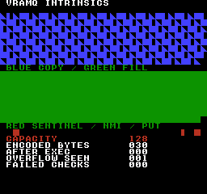
ビルドコマンド
New-Item -ItemType Directory -Force .\out | Out-Null
.\kitaqfc\kitaqfc.exe .\kitaq-docs\samples\api-examples\fc\vramq_intrinsics.c -I .\kitaqfc\lib -I .\kitaq-docs\samples -o .\out\vramq_intrinsics.nes --mapper=nrom --nes-chr=.\kitaq-docs\samples\api-examples\fc\vram_shapes.chr --no-cache --no-disasm実装とソース
kitaqfc/lib/intrinsics.h:160
Return total encoded command-buffer capacity; this is independent of PPU VRAM capacity.
__vramq_clear
組み込みキューの実行待ち記録をすべて破棄し、長さと準備完了フラグを0にします。VRAMへの書き込みや、オーバーフロー通知の解除は行いません。通知を解除するには__vramq_clear_overflowを別に呼びます。
書式
void __vramq_clear(void);戻り値
ありません（void）。
使用条件と制限
FCの単位は固定128バイトの組み込みバッファーに格納する、コマンド記録のバイト数です。タイル1個の書き込みは4バイト、埋める記録は5バイト、ポインターを使うコピー記録は6バイトで、管理情報も含みます。準備済みキューはNMIで消費されるため、コミット前に使用量の確認と登録を行い、登録側と実行側を調整してください。
これらの組み込み関数は、lib/vram.cと同じコマンドバッファーを操作します。runtime.cのnes_vram_queue_*関数は、記録形式の異なる別のキューを管理します。一方のクリアや容量取得が、もう一方にも適用されるわけではありません。
キューの登録と実行は、互いに重ならないよう管理してください。割り込みで実行している途中の追加、管理変数の直接変更、保存した転送元データの意図しない上書きは避けてください。これらのAPIはロックやダブルバッファーを提供しません。容量はコマンドバッファーの容量であり、ハードウェアVRAMの空きバイト数ではありません。
使用例
__vramq_clear();
if (__vramq_len()!=0 || __vramq_overflow()!=1) failures++;
// Clearing queued work deliberately leaves the overflow latch set.呼び出し部分のコード例です。完全なプログラムに組み込む際は、記載した初期化とバッファの条件を満たしてください。
期待する結果
完成プログラムでは、キュー容量、保持されるポインター、2種類のリセット、直接実行とNMI実行の違いを学べます。期待値はCAPACITY 128、ENCODED BYTES 030、AFTER EXEC 000、OVERFLOW SEEN 001、FAILED CHECKS 000です。6つの記録が30バイトを使い、512バイト分の書き込みを実行します。OVERFLOW SEENは意図的な登録拒否時に保存した値であり、終了時も通知が立っているという意味ではありません。
青いコピー領域はピクセル座標(0,16)、緑の埋め込み領域は(0,88)から始まります。それぞれ、幅256ピクセルのタイル行7行と、8行目の248ピクセルを描き、合計255タイルになります。最後の8×8セルは黒いままです。コピーは8×8の塗りつぶし・左半分・三角形を繰り返しますが、登録後に転送元を変えるため、先頭は三角形です。埋め込みは呼び出し元の変数を変えても塗りつぶしを保ちます。形と色の両方を検証します。
y=160では、x=16に赤い塗りつぶしの正方形、x=224に赤い左半分のタイル、x=240に赤い塗りつぶしの正方形が現れます。最初の正方形は長さ0のコピーと埋め込みで消えず、中央は標準NMIでの実行、最後は単発書き込みを確認するものです。取り消したセル(248,160)は黒いままです。長い転送は描画とNMIを止めて実行し、最後の小さな書き込みだけをNMIに任せます。これはNROMのエミュレータ検証であり、実機検証ではありません。
ビルドコマンド
New-Item -ItemType Directory -Force .\out | Out-Null
.\kitaqfc\kitaqfc.exe .\kitaq-docs\samples\api-examples\fc\vramq_intrinsics.c -I .\kitaqfc\lib -I .\kitaq-docs\samples -o .\out\vramq_intrinsics.nes --mapper=nrom --nes-chr=.\kitaq-docs\samples\api-examples\fc\vram_shapes.chr --no-cache --no-disasm実装とソース
kitaqfc/lib/intrinsics.h:142
NMI VRAM transfer queue. Queue entries are consumed by __vramq_exec(), and the default NMI handler calls __vramq_exec() automatically. / Reset pending intrinsic-queue records; this is separate from runtime.c nes_vram_queue_clear.
__vramq_clear_overflow
オーバーフロー通知だけを0に戻します。実行待ちの記録、長さ、準備完了フラグは変更しません。容量不足の通知を解除する操作であり、拒否された記録の再登録や、それ以前に成功した登録の取り消しは行いません。
書式
void __vramq_clear_overflow(void);戻り値
ありません（void）。
使用条件と制限
FCの単位は固定128バイトの組み込みバッファーに格納する、コマンド記録のバイト数です。タイル1個の書き込みは4バイト、埋める記録は5バイト、ポインターを使うコピー記録は6バイトで、管理情報も含みます。準備済みキューはNMIで消費されるため、コミット前に使用量の確認と登録を行い、登録側と実行側を調整してください。
これらの組み込み関数は、lib/vram.cと同じコマンドバッファーを操作します。runtime.cのnes_vram_queue_*関数は、記録形式の異なる別のキューを管理します。一方のクリアや容量取得が、もう一方にも適用されるわけではありません。
キューの登録と実行は、互いに重ならないよう管理してください。割り込みで実行している途中の追加、管理変数の直接変更、保存した転送元データの意図しない上書きは避けてください。これらのAPIはロックやダブルバッファーを提供しません。容量はコマンドバッファーの容量であり、ハードウェアVRAMの空きバイト数ではありません。
使用例
__vramq_clear_overflow();
if (__vramq_overflow()!=0 || __vramq_len()!=4) failures++;
// Resetting the latch deliberately keeps this pending put record.呼び出し部分のコード例です。完全なプログラムに組み込む際は、記載した初期化とバッファの条件を満たしてください。
期待する結果
完成プログラムでは、キュー容量、保持されるポインター、2種類のリセット、直接実行とNMI実行の違いを学べます。期待値はCAPACITY 128、ENCODED BYTES 030、AFTER EXEC 000、OVERFLOW SEEN 001、FAILED CHECKS 000です。6つの記録が30バイトを使い、512バイト分の書き込みを実行します。OVERFLOW SEENは意図的な登録拒否時に保存した値であり、終了時も通知が立っているという意味ではありません。
青いコピー領域はピクセル座標(0,16)、緑の埋め込み領域は(0,88)から始まります。それぞれ、幅256ピクセルのタイル行7行と、8行目の248ピクセルを描き、合計255タイルになります。最後の8×8セルは黒いままです。コピーは8×8の塗りつぶし・左半分・三角形を繰り返しますが、登録後に転送元を変えるため、先頭は三角形です。埋め込みは呼び出し元の変数を変えても塗りつぶしを保ちます。形と色の両方を検証します。
y=160では、x=16に赤い塗りつぶしの正方形、x=224に赤い左半分のタイル、x=240に赤い塗りつぶしの正方形が現れます。最初の正方形は長さ0のコピーと埋め込みで消えず、中央は標準NMIでの実行、最後は単発書き込みを確認するものです。取り消したセル(248,160)は黒いままです。長い転送は描画とNMIを止めて実行し、最後の小さな書き込みだけをNMIに任せます。これはNROMのエミュレータ検証であり、実機検証ではありません。
ビルドコマンド
New-Item -ItemType Directory -Force .\out | Out-Null
.\kitaqfc\kitaqfc.exe .\kitaq-docs\samples\api-examples\fc\vramq_intrinsics.c -I .\kitaqfc\lib -I .\kitaq-docs\samples -o .\out\vramq_intrinsics.nes --mapper=nrom --nes-chr=.\kitaq-docs\samples\api-examples\fc\vram_shapes.chr --no-cache --no-disasm実装とソース
kitaqfc/lib/intrinsics.h:158
Clear the overflow latch explicitly after handling the failed submission.
__vramq_commit
実行側がキューを処理できるよう、準備完了フラグを1にします。転送データのコピー、PPUへの書き込み、NMI待ちは行いません。コミット後は、実行が終わるまでキューと保持した転送元を変更しないでください。NMIが有効なら、標準ハンドラーが非同期に処理する場合があります。
書式
void __vramq_commit(void);戻り値
ありません（void）。
使用条件と制限
FCの単位は固定128バイトの組み込みバッファーに格納する、コマンド記録のバイト数です。タイル1個の書き込みは4バイト、埋める記録は5バイト、ポインターを使うコピー記録は6バイトで、管理情報も含みます。準備済みキューはNMIで消費されるため、コミット前に使用量の確認と登録を行い、登録側と実行側を調整してください。
これらの組み込み関数は、lib/vram.cと同じコマンドバッファーを操作します。runtime.cのnes_vram_queue_*関数は、記録形式の異なる別のキューを管理します。一方のクリアや容量取得が、もう一方にも適用されるわけではありません。
キューの登録と実行は、互いに重ならないよう管理してください。割り込みで実行している途中の追加、管理変数の直接変更、保存した転送元データの意図しない上書きは避けてください。これらのAPIはロックやダブルバッファーを提供しません。容量はコマンドバッファーの容量であり、ハードウェアVRAMの空きバイト数ではありません。
使用例
__vramq_commit(); // NMI is disabled here: this only marks the queue ready.
if (__vramq_len()!=30) failures++;呼び出し部分のコード例です。完全なプログラムに組み込む際は、記載した初期化とバッファの条件を満たしてください。
期待する結果
完成プログラムでは、キュー容量、保持されるポインター、2種類のリセット、直接実行とNMI実行の違いを学べます。期待値はCAPACITY 128、ENCODED BYTES 030、AFTER EXEC 000、OVERFLOW SEEN 001、FAILED CHECKS 000です。6つの記録が30バイトを使い、512バイト分の書き込みを実行します。OVERFLOW SEENは意図的な登録拒否時に保存した値であり、終了時も通知が立っているという意味ではありません。
青いコピー領域はピクセル座標(0,16)、緑の埋め込み領域は(0,88)から始まります。それぞれ、幅256ピクセルのタイル行7行と、8行目の248ピクセルを描き、合計255タイルになります。最後の8×8セルは黒いままです。コピーは8×8の塗りつぶし・左半分・三角形を繰り返しますが、登録後に転送元を変えるため、先頭は三角形です。埋め込みは呼び出し元の変数を変えても塗りつぶしを保ちます。形と色の両方を検証します。
y=160では、x=16に赤い塗りつぶしの正方形、x=224に赤い左半分のタイル、x=240に赤い塗りつぶしの正方形が現れます。最初の正方形は長さ0のコピーと埋め込みで消えず、中央は標準NMIでの実行、最後は単発書き込みを確認するものです。取り消したセル(248,160)は黒いままです。長い転送は描画とNMIを止めて実行し、最後の小さな書き込みだけをNMIに任せます。これはNROMのエミュレータ検証であり、実機検証ではありません。
ビルドコマンド
New-Item -ItemType Directory -Force .\out | Out-Null
.\kitaqfc\kitaqfc.exe .\kitaq-docs\samples\api-examples\fc\vramq_intrinsics.c -I .\kitaqfc\lib -I .\kitaq-docs\samples -o .\out\vramq_intrinsics.nes --mapper=nrom --nes-chr=.\kitaq-docs\samples\api-examples\fc\vram_shapes.chr --no-cache --no-disasm実装とソース
kitaqfc/lib/intrinsics.h:150
Publish the pending records to the configured consumer. Do not mutate them while consumption can run.
__vramq_copy
実行時にsrcからppu_addrへlenバイトをコピーする、6バイトの記録を1つ追加します。キューに保存するのは転送データではなく転送元ポインターです。255バイトのコピーでもコマンドバッファーの使用量は6バイトです。転送元のアドレスが増える順に読み、転送先を連続させるにはPPUの増分を1にします。
書式
void __vramq_copy(u16 ppu_addr, const u8* src, u8 len);引数
ppu_addrCPUポインターではなく、PPUのバイトアドレス（
0x0000～0x3FFF）です。転送先は書き込み可能でなければなりません。パターンの変更にはCHR ROMではなくCHR RAMが必要です。PPUのマッピングとミラーリングが適用されます。連続したコピーや埋め込みではPPUCTRLの増分を1にしてください。安全にPPUへ書ける時期に実行し、その後で必要なスクロール状態を設定してください。実行処理はPPUADDRとPPUDATAを使い、スクロール設定を復元しません。src実行時まで保存する、読み取り可能なバイト列への近距離ポインターです。実行が終わるまで必要な領域を有効に保ち、そのメモリー・ROMバンクを読み取り可能にしてください。バンク番号やデータのコピーは保存しません。長さがある転送には有効な元データが必要です。有効期間が終わったローカル配列を使わないでください。
lenバイト数で、範囲は0～255です。1つの記録で全体を扱い、127バイトずつには分割しません。0でもコピーや埋め込みの記録を使います。実行時にはPPUアドレスを設定しますが、PPUDATAへの書き込みは行いません。256はこの引数の範囲外です。
戻り値
ありません（void）。
使用条件と制限
追加処理は成否の値を返しません。記録全体が収まらない場合は__vramq_overflow()を1にし、既存の記録と長さは保ちます。空き容量と記録サイズが等しい場合は登録できます。以前の通知が残っていても、空きがあれば追加できるため、新しい一連の登録を判断する前に通知を処理・解除してください。複数回の追加をまとめて取り消す仕組みはありません。
FCの単位は固定128バイトの組み込みバッファーに格納する、コマンド記録のバイト数です。タイル1個の書き込みは4バイト、埋める記録は5バイト、ポインターを使うコピー記録は6バイトで、管理情報も含みます。準備済みキューはNMIで消費されるため、コミット前に使用量の確認と登録を行い、登録側と実行側を調整してください。
これらの組み込み関数は、lib/vram.cと同じコマンドバッファーを操作します。runtime.cのnes_vram_queue_*関数は、記録形式の異なる別のキューを管理します。一方のクリアや容量取得が、もう一方にも適用されるわけではありません。
キューの登録と実行は、互いに重ならないよう管理してください。割り込みで実行している途中の追加、管理変数の直接変更、保存した転送元データの意図しない上書きは避けてください。これらのAPIはロックやダブルバッファーを提供しません。容量はコマンドバッファーの容量であり、ハードウェアVRAMの空きバイト数ではありません。
使用例
__vramq_copy(0x2040,source_bytes,255);
source_bytes[0]=3; // The executor must see this change through its retained pointer.呼び出し部分のコード例です。完全なプログラムに組み込む際は、記載した初期化とバッファの条件を満たしてください。
期待する結果
完成プログラムでは、キュー容量、保持されるポインター、2種類のリセット、直接実行とNMI実行の違いを学べます。期待値はCAPACITY 128、ENCODED BYTES 030、AFTER EXEC 000、OVERFLOW SEEN 001、FAILED CHECKS 000です。6つの記録が30バイトを使い、512バイト分の書き込みを実行します。OVERFLOW SEENは意図的な登録拒否時に保存した値であり、終了時も通知が立っているという意味ではありません。
青いコピー領域はピクセル座標(0,16)、緑の埋め込み領域は(0,88)から始まります。それぞれ、幅256ピクセルのタイル行7行と、8行目の248ピクセルを描き、合計255タイルになります。最後の8×8セルは黒いままです。コピーは8×8の塗りつぶし・左半分・三角形を繰り返しますが、登録後に転送元を変えるため、先頭は三角形です。埋め込みは呼び出し元の変数を変えても塗りつぶしを保ちます。形と色の両方を検証します。
y=160では、x=16に赤い塗りつぶしの正方形、x=224に赤い左半分のタイル、x=240に赤い塗りつぶしの正方形が現れます。最初の正方形は長さ0のコピーと埋め込みで消えず、中央は標準NMIでの実行、最後は単発書き込みを確認するものです。取り消したセル(248,160)は黒いままです。長い転送は描画とNMIを止めて実行し、最後の小さな書き込みだけをNMIに任せます。これはNROMのエミュレータ検証であり、実機検証ではありません。
ビルドコマンド
New-Item -ItemType Directory -Force .\out | Out-Null
.\kitaqfc\kitaqfc.exe .\kitaq-docs\samples\api-examples\fc\vramq_intrinsics.c -I .\kitaqfc\lib -I .\kitaq-docs\samples -o .\out\vramq_intrinsics.nes --mapper=nrom --nes-chr=.\kitaq-docs\samples\api-examples\fc\vram_shapes.chr --no-cache --no-disasm実装とソース
kitaqfc/lib/intrinsics.h:146
Retain the source address for later consumption; keep its storage and bank mapping valid.
__vramq_exec
コミット済みのキューを、記録順に直ちに実行します。準備完了でなければキューを変更せずに戻ります。実行後は長さと準備完了フラグを消しますが、オーバーフロー通知は残します。安全なPPUアクセス時期の待機、転送量の制限、スクロールの復元は行わないため、呼び出し側で管理してください。
書式
void __vramq_exec(void);戻り値
ありません（void）。
使用条件と制限
CPUポインターではなく、PPUのバイトアドレス（0x0000～0x3FFF）です。転送先は書き込み可能でなければなりません。パターンの変更にはCHR ROMではなくCHR RAMが必要です。PPUのマッピングとミラーリングが適用されます。連続したコピーや埋め込みではPPUCTRLの増分を1にしてください。安全にPPUへ書ける時期に実行し、その後で必要なスクロール状態を設定してください。実行処理はPPUADDRとPPUDATAを使い、スクロール設定を復元しません。
FCの単位は固定128バイトの組み込みバッファーに格納する、コマンド記録のバイト数です。タイル1個の書き込みは4バイト、埋める記録は5バイト、ポインターを使うコピー記録は6バイトで、管理情報も含みます。準備済みキューはNMIで消費されるため、コミット前に使用量の確認と登録を行い、登録側と実行側を調整してください。
これらの組み込み関数は、lib/vram.cと同じコマンドバッファーを操作します。runtime.cのnes_vram_queue_*関数は、記録形式の異なる別のキューを管理します。一方のクリアや容量取得が、もう一方にも適用されるわけではありません。
キューの登録と実行は、互いに重ならないよう管理してください。割り込みで実行している途中の追加、管理変数の直接変更、保存した転送元データの意図しない上書きは避けてください。これらのAPIはロックやダブルバッファーを提供しません。容量はコマンドバッファーの容量であり、ハードウェアVRAMの空きバイト数ではありません。
使用例
// Rendering is stopped and the PPU increment is 1.
__vramq_exec();
after_exec=__vramq_len();
if (after_exec!=0 || __vramq_overflow()!=0) failures++;呼び出し部分のコード例です。完全なプログラムに組み込む際は、記載した初期化とバッファの条件を満たしてください。
期待する結果
完成プログラムでは、キュー容量、保持されるポインター、2種類のリセット、直接実行とNMI実行の違いを学べます。期待値はCAPACITY 128、ENCODED BYTES 030、AFTER EXEC 000、OVERFLOW SEEN 001、FAILED CHECKS 000です。6つの記録が30バイトを使い、512バイト分の書き込みを実行します。OVERFLOW SEENは意図的な登録拒否時に保存した値であり、終了時も通知が立っているという意味ではありません。
青いコピー領域はピクセル座標(0,16)、緑の埋め込み領域は(0,88)から始まります。それぞれ、幅256ピクセルのタイル行7行と、8行目の248ピクセルを描き、合計255タイルになります。最後の8×8セルは黒いままです。コピーは8×8の塗りつぶし・左半分・三角形を繰り返しますが、登録後に転送元を変えるため、先頭は三角形です。埋め込みは呼び出し元の変数を変えても塗りつぶしを保ちます。形と色の両方を検証します。
y=160では、x=16に赤い塗りつぶしの正方形、x=224に赤い左半分のタイル、x=240に赤い塗りつぶしの正方形が現れます。最初の正方形は長さ0のコピーと埋め込みで消えず、中央は標準NMIでの実行、最後は単発書き込みを確認するものです。取り消したセル(248,160)は黒いままです。長い転送は描画とNMIを止めて実行し、最後の小さな書き込みだけをNMIに任せます。これはNROMのエミュレータ検証であり、実機検証ではありません。
ビルドコマンド
New-Item -ItemType Directory -Force .\out | Out-Null
.\kitaqfc\kitaqfc.exe .\kitaq-docs\samples\api-examples\fc\vramq_intrinsics.c -I .\kitaqfc\lib -I .\kitaq-docs\samples -o .\out\vramq_intrinsics.nes --mapper=nrom --nes-chr=.\kitaq-docs\samples\api-examples\fc\vram_shapes.chr --no-cache --no-disasm実装とソース
kitaqfc/lib/intrinsics.h:152
Execute a ready queue directly; committing and safe PPU timing are caller responsibilities.
__vramq_fill
1バイトのvalueをPPUへlen回書く、5バイトの記録を1つ追加します。値は記録内へ保存されるため、呼び出し元の変数を後で変えても登録済みの値は変わりません。繰り返すのは1バイトであり、複数バイトのタイルパターンではありません。
書式
void __vramq_fill(u16 ppu_addr, u8 value, u8 len);引数
ppu_addrCPUポインターではなく、PPUのバイトアドレス（
0x0000～0x3FFF）です。転送先は書き込み可能でなければなりません。パターンの変更にはCHR ROMではなくCHR RAMが必要です。PPUのマッピングとミラーリングが適用されます。連続したコピーや埋め込みではPPUCTRLの増分を1にしてください。安全にPPUへ書ける時期に実行し、その後で必要なスクロール状態を設定してください。実行処理はPPUADDRとPPUDATAを使い、スクロール設定を復元しません。value0〜255の1バイトを繰り返し書きます。画面での意味は、転送先がタイル番号、画素のビットプレーン、その他のバイト列のどれかによって変わります。
lenバイト数で、範囲は0～255です。1つの記録で全体を扱い、127バイトずつには分割しません。0でもコピーや埋め込みの記録を使います。実行時にはPPUアドレスを設定しますが、PPUDATAへの書き込みは行いません。256はこの引数の範囲外です。
戻り値
ありません（void）。
使用条件と制限
追加処理は成否の値を返しません。記録全体が収まらない場合は__vramq_overflow()を1にし、既存の記録と長さは保ちます。空き容量と記録サイズが等しい場合は登録できます。以前の通知が残っていても、空きがあれば追加できるため、新しい一連の登録を判断する前に通知を処理・解除してください。複数回の追加をまとめて取り消す仕組みはありません。
FCの単位は固定128バイトの組み込みバッファーに格納する、コマンド記録のバイト数です。タイル1個の書き込みは4バイト、埋める記録は5バイト、ポインターを使うコピー記録は6バイトで、管理情報も含みます。準備済みキューはNMIで消費されるため、コミット前に使用量の確認と登録を行い、登録側と実行側を調整してください。
これらの組み込み関数は、lib/vram.cと同じコマンドバッファーを操作します。runtime.cのnes_vram_queue_*関数は、記録形式の異なる別のキューを管理します。一方のクリアや容量取得が、もう一方にも適用されるわけではありません。
キューの登録と実行は、互いに重ならないよう管理してください。割り込みで実行している途中の追加、管理変数の直接変更、保存した転送元データの意図しない上書きは避けてください。これらのAPIはロックやダブルバッファーを提供しません。容量はコマンドバッファーの容量であり、ハードウェアVRAMの空きバイト数ではありません。
使用例
__vramq_fill(0x2160,fill_value,255); // Seven complete rows and 31 tiles in the eighth.
fill_value=3; // The queued value stays 1, so the green block remains solid.呼び出し部分のコード例です。完全なプログラムに組み込む際は、記載した初期化とバッファの条件を満たしてください。
期待する結果
完成プログラムでは、キュー容量、保持されるポインター、2種類のリセット、直接実行とNMI実行の違いを学べます。期待値はCAPACITY 128、ENCODED BYTES 030、AFTER EXEC 000、OVERFLOW SEEN 001、FAILED CHECKS 000です。6つの記録が30バイトを使い、512バイト分の書き込みを実行します。OVERFLOW SEENは意図的な登録拒否時に保存した値であり、終了時も通知が立っているという意味ではありません。
青いコピー領域はピクセル座標(0,16)、緑の埋め込み領域は(0,88)から始まります。それぞれ、幅256ピクセルのタイル行7行と、8行目の248ピクセルを描き、合計255タイルになります。最後の8×8セルは黒いままです。コピーは8×8の塗りつぶし・左半分・三角形を繰り返しますが、登録後に転送元を変えるため、先頭は三角形です。埋め込みは呼び出し元の変数を変えても塗りつぶしを保ちます。形と色の両方を検証します。
y=160では、x=16に赤い塗りつぶしの正方形、x=224に赤い左半分のタイル、x=240に赤い塗りつぶしの正方形が現れます。最初の正方形は長さ0のコピーと埋め込みで消えず、中央は標準NMIでの実行、最後は単発書き込みを確認するものです。取り消したセル(248,160)は黒いままです。長い転送は描画とNMIを止めて実行し、最後の小さな書き込みだけをNMIに任せます。これはNROMのエミュレータ検証であり、実機検証ではありません。
ビルドコマンド
New-Item -ItemType Directory -Force .\out | Out-Null
.\kitaqfc\kitaqfc.exe .\kitaq-docs\samples\api-examples\fc\vramq_intrinsics.c -I .\kitaqfc\lib -I .\kitaq-docs\samples -o .\out\vramq_intrinsics.nes --mapper=nrom --nes-chr=.\kitaq-docs\samples\api-examples\fc\vram_shapes.chr --no-cache --no-disasm実装とソース
kitaqfc/lib/intrinsics.h:148
Append a repeated-byte update; the source value is stored in the record.
__vramq_len
実行待ちのコマンドが現在占めている、コマンドバッファーの使用量を返します。ビデオメモリーへ書き込むデータのバイト数ではありません。
書式
u8 __vramq_len(void);戻り値
ここで説明した各機種の単位による符号なし8ビット値です。読み取るだけではキューを変更・実行しません。
使用条件と制限
FCの単位は固定128バイトの組み込みバッファーに格納する、コマンド記録のバイト数です。タイル1個の書き込みは4バイト、埋める記録は5バイト、ポインターを使うコピー記録は6バイトで、管理情報も含みます。準備済みキューはNMIで消費されるため、コミット前に使用量の確認と登録を行い、登録側と実行側を調整してください。
これらの組み込み関数は、lib/vram.cと同じコマンドバッファーを操作します。runtime.cのnes_vram_queue_*関数は、記録形式の異なる別のキューを管理します。一方のクリアや容量取得が、もう一方にも適用されるわけではありません。
キューの登録と実行は、互いに重ならないよう管理してください。割り込みで実行している途中の追加、管理変数の直接変更、保存した転送元データの意図しない上書きは避けてください。これらのAPIはロックやダブルバッファーを提供しません。容量はコマンドバッファーの容量であり、ハードウェアVRAMの空きバイト数ではありません。
使用例
encoded=__vramq_len();
if (encoded!=30 || capacity-encoded!=98) failures++;
// 4+6+5+6+5+4 encoded bytes describe 512 actual byte writes.呼び出し部分のコード例です。完全なプログラムに組み込む際は、記載した初期化とバッファの条件を満たしてください。
期待する結果
完成プログラムでは、キュー容量、保持されるポインター、2種類のリセット、直接実行とNMI実行の違いを学べます。期待値はCAPACITY 128、ENCODED BYTES 030、AFTER EXEC 000、OVERFLOW SEEN 001、FAILED CHECKS 000です。6つの記録が30バイトを使い、512バイト分の書き込みを実行します。OVERFLOW SEENは意図的な登録拒否時に保存した値であり、終了時も通知が立っているという意味ではありません。
青いコピー領域はピクセル座標(0,16)、緑の埋め込み領域は(0,88)から始まります。それぞれ、幅256ピクセルのタイル行7行と、8行目の248ピクセルを描き、合計255タイルになります。最後の8×8セルは黒いままです。コピーは8×8の塗りつぶし・左半分・三角形を繰り返しますが、登録後に転送元を変えるため、先頭は三角形です。埋め込みは呼び出し元の変数を変えても塗りつぶしを保ちます。形と色の両方を検証します。
y=160では、x=16に赤い塗りつぶしの正方形、x=224に赤い左半分のタイル、x=240に赤い塗りつぶしの正方形が現れます。最初の正方形は長さ0のコピーと埋め込みで消えず、中央は標準NMIでの実行、最後は単発書き込みを確認するものです。取り消したセル(248,160)は黒いままです。長い転送は描画とNMIを止めて実行し、最後の小さな書き込みだけをNMIに任せます。これはNROMのエミュレータ検証であり、実機検証ではありません。
ビルドコマンド
New-Item -ItemType Directory -Force .\out | Out-Null
.\kitaqfc\kitaqfc.exe .\kitaq-docs\samples\api-examples\fc\vramq_intrinsics.c -I .\kitaqfc\lib -I .\kitaq-docs\samples -o .\out\vramq_intrinsics.nes --mapper=nrom --nes-chr=.\kitaq-docs\samples\api-examples\fc\vram_shapes.chr --no-cache --no-disasm実装とソース
kitaqfc/lib/intrinsics.h:154
Return encoded bytes currently occupied, not transfer payload bytes or command count.
__vramq_overflow
キューあふれフラグを消さずに読み取ります。過去の登録失敗が記録されたままの場合があります。
書式
u8 __vramq_overflow(void);戻り値
オーバーフローの記録がなければ0です。登録を拒否すると1になり、明示的にリセットするまで残ります。キューを実行してもこの記録は消えません。
使用条件と制限
FCの単位は固定128バイトの組み込みバッファーに格納する、コマンド記録のバイト数です。タイル1個の書き込みは4バイト、埋める記録は5バイト、ポインターを使うコピー記録は6バイトで、管理情報も含みます。準備済みキューはNMIで消費されるため、コミット前に使用量の確認と登録を行い、登録側と実行側を調整してください。
これらの組み込み関数は、lib/vram.cと同じコマンドバッファーを操作します。runtime.cのnes_vram_queue_*関数は、記録形式の異なる別のキューを管理します。一方のクリアや容量取得が、もう一方にも適用されるわけではありません。
キューの登録と実行は、互いに重ならないよう管理してください。割り込みで実行している途中の追加、管理変数の直接変更、保存した転送元データの意図しない上書きは避けてください。これらのAPIはロックやダブルバッファーを提供しません。容量はコマンドバッファーの容量であり、ハードウェアVRAMの空きバイト数ではありません。
使用例
overflow_seen=__vramq_overflow();
if (overflow_seen!=1 || __vramq_overflow()!=1) failures++;呼び出し部分のコード例です。完全なプログラムに組み込む際は、記載した初期化とバッファの条件を満たしてください。
期待する結果
完成プログラムでは、キュー容量、保持されるポインター、2種類のリセット、直接実行とNMI実行の違いを学べます。期待値はCAPACITY 128、ENCODED BYTES 030、AFTER EXEC 000、OVERFLOW SEEN 001、FAILED CHECKS 000です。6つの記録が30バイトを使い、512バイト分の書き込みを実行します。OVERFLOW SEENは意図的な登録拒否時に保存した値であり、終了時も通知が立っているという意味ではありません。
青いコピー領域はピクセル座標(0,16)、緑の埋め込み領域は(0,88)から始まります。それぞれ、幅256ピクセルのタイル行7行と、8行目の248ピクセルを描き、合計255タイルになります。最後の8×8セルは黒いままです。コピーは8×8の塗りつぶし・左半分・三角形を繰り返しますが、登録後に転送元を変えるため、先頭は三角形です。埋め込みは呼び出し元の変数を変えても塗りつぶしを保ちます。形と色の両方を検証します。
y=160では、x=16に赤い塗りつぶしの正方形、x=224に赤い左半分のタイル、x=240に赤い塗りつぶしの正方形が現れます。最初の正方形は長さ0のコピーと埋め込みで消えず、中央は標準NMIでの実行、最後は単発書き込みを確認するものです。取り消したセル(248,160)は黒いままです。長い転送は描画とNMIを止めて実行し、最後の小さな書き込みだけをNMIに任せます。これはNROMのエミュレータ検証であり、実機検証ではありません。
ビルドコマンド
New-Item -ItemType Directory -Force .\out | Out-Null
.\kitaqfc\kitaqfc.exe .\kitaq-docs\samples\api-examples\fc\vramq_intrinsics.c -I .\kitaqfc\lib -I .\kitaq-docs\samples -o .\out\vramq_intrinsics.nes --mapper=nrom --nes-chr=.\kitaq-docs\samples\api-examples\fc\vram_shapes.chr --no-cache --no-disasm実装とソース
kitaqfc/lib/intrinsics.h:156
Read the latched capacity failure; reading does not reset it.
__vramq_put
PPUアドレスと1バイトの値を、4バイトの記録として追加します。値はその場でキューへコピーされ、実行時にPPUへ書かれます。ネームテーブルのタイル1個の更新に使えるほか、書き込み可能な他のPPUバイトも指定できます。
書式
void __vramq_put(u16 ppu_addr, u8 value);引数
ppu_addrCPUポインターではなく、PPUのバイトアドレス（
0x0000～0x3FFF）です。転送先は書き込み可能でなければなりません。パターンの変更にはCHR ROMではなくCHR RAMが必要です。PPUのマッピングとミラーリングが適用されます。連続したコピーや埋め込みではPPUCTRLの増分を1にしてください。安全にPPUへ書ける時期に実行し、その後で必要なスクロール状態を設定してください。実行処理はPPUADDRとPPUDATAを使い、スクロール設定を復元しません。value0〜255の1バイトを繰り返し書きます。画面での意味は、転送先がタイル番号、画素のビットプレーン、その他のバイト列のどれかによって変わります。
戻り値
ありません（void）。
使用条件と制限
追加処理は成否の値を返しません。記録全体が収まらない場合は__vramq_overflow()を1にし、既存の記録と長さは保ちます。空き容量と記録サイズが等しい場合は登録できます。以前の通知が残っていても、空きがあれば追加できるため、新しい一連の登録を判断する前に通知を処理・解除してください。複数回の追加をまとめて取り消す仕組みはありません。
FCの単位は固定128バイトの組み込みバッファーに格納する、コマンド記録のバイト数です。タイル1個の書き込みは4バイト、埋める記録は5バイト、ポインターを使うコピー記録は6バイトで、管理情報も含みます。準備済みキューはNMIで消費されるため、コミット前に使用量の確認と登録を行い、登録側と実行側を調整してください。
これらの組み込み関数は、lib/vram.cと同じコマンドバッファーを操作します。runtime.cのnes_vram_queue_*関数は、記録形式の異なる別のキューを管理します。一方のクリアや容量取得が、もう一方にも適用されるわけではありません。
キューの登録と実行は、互いに重ならないよう管理してください。割り込みで実行している途中の追加、管理変数の直接変更、保存した転送元データの意図しない上書きは避けてください。これらのAPIはロックやダブルバッファーを提供しません。容量はコマンドバッファーの容量であり、ハードウェアVRAMの空きバイト数ではありません。
使用例
__vramq_put(0x2282,1); // Red 8x8 sentinel at pixel (16,160).呼び出し部分のコード例です。完全なプログラムに組み込む際は、記載した初期化とバッファの条件を満たしてください。
期待する結果
完成プログラムでは、キュー容量、保持されるポインター、2種類のリセット、直接実行とNMI実行の違いを学べます。期待値はCAPACITY 128、ENCODED BYTES 030、AFTER EXEC 000、OVERFLOW SEEN 001、FAILED CHECKS 000です。6つの記録が30バイトを使い、512バイト分の書き込みを実行します。OVERFLOW SEENは意図的な登録拒否時に保存した値であり、終了時も通知が立っているという意味ではありません。
青いコピー領域はピクセル座標(0,16)、緑の埋め込み領域は(0,88)から始まります。それぞれ、幅256ピクセルのタイル行7行と、8行目の248ピクセルを描き、合計255タイルになります。最後の8×8セルは黒いままです。コピーは8×8の塗りつぶし・左半分・三角形を繰り返しますが、登録後に転送元を変えるため、先頭は三角形です。埋め込みは呼び出し元の変数を変えても塗りつぶしを保ちます。形と色の両方を検証します。
y=160では、x=16に赤い塗りつぶしの正方形、x=224に赤い左半分のタイル、x=240に赤い塗りつぶしの正方形が現れます。最初の正方形は長さ0のコピーと埋め込みで消えず、中央は標準NMIでの実行、最後は単発書き込みを確認するものです。取り消したセル(248,160)は黒いままです。長い転送は描画とNMIを止めて実行し、最後の小さな書き込みだけをNMIに任せます。これはNROMのエミュレータ検証であり、実機検証ではありません。
ビルドコマンド
New-Item -ItemType Directory -Force .\out | Out-Null
.\kitaqfc\kitaqfc.exe .\kitaq-docs\samples\api-examples\fc\vramq_intrinsics.c -I .\kitaqfc\lib -I .\kitaq-docs\samples -o .\out\vramq_intrinsics.nes --mapper=nrom --nes-chr=.\kitaq-docs\samples\api-examples\fc\vram_shapes.chr --no-cache --no-disasm実装とソース
kitaqfc/lib/intrinsics.h:144
Append one address/value update; use the overflow latch to detect capacity failure.
__xy_in_rectコンパイラ組み込み
コンパイラ組み込み命令に関するAPIです。引数に対応する処理を実行します。正確な引数の単位・終端・戻り値の条件は、以下の宣言・原注記・実装に従います。
u8 __xy_in_rect(u8 x, u8 y, u8 rx, u8 ry, u8 rw, u8 rh);引数（左から順）：u8 x, u8 y, u8 rx, u8 ry, u8 rw, u8 rh。配列・ポインタでは必要な領域を用意し、処理が終わるまで有効に保ちます。
戻り値の型：u8。意味・成功値・失敗値は原注記と実装のreturn条件を参照してください。
Return 0 or 1 for half-open bounds. Zero extents are empty; coordinates do not wrap across 255.
引数受け渡し例
u8 example_xy_in_rect(u8 x, u8 y, u8 rx, u8 ry, u8 rw, u8 rh) {
return __xy_in_rect(x, y, rx, ry, rw, rh);
}オブジェクトの初期化、バッファの大きさ、ROMバンク、機器状態は上位コードで準備します。この関数断片単体は実行確認していません。
宣言・識別子の出典：kitaqfc/lib/intrinsics.h:31
__zapper_lightコンパイラ組み込み
コンパイラ組み込み命令に関するAPIです。引数に対応する処理を実行します。正確な引数の単位・終端・戻り値の条件は、以下の宣言・原注記・実装に従います。
u8 __zapper_light(void);戻り値の型：u8。意味・成功値・失敗値は原注記と実装のreturn条件を参照してください。
Default to the port-2 normalized light reader.
引数受け渡し例
__zapper_light();オブジェクトの初期化、バッファの大きさ、ROMバンク、機器状態は上位コードで準備します。この関数断片単体は実行確認していません。
宣言・識別子の出典：kitaqfc/lib/intrinsics.h:249
__zapper_light1コンパイラ組み込み
コンパイラ組み込み命令に関するAPIです。引数に対応する処理を実行します。正確な引数の単位・終端・戻り値の条件は、以下の宣言・原注記・実装に従います。
u8 __zapper_light1(void);戻り値の型：u8。意味・成功値・失敗値は原注記と実装のreturn条件を参照してください。
Invert port-1 bit 3 and normalize: one means light detected.
引数受け渡し例
__zapper_light1();オブジェクトの初期化、バッファの大きさ、ROMバンク、機器状態は上位コードで準備します。この関数断片単体は実行確認していません。
宣言・識別子の出典：kitaqfc/lib/intrinsics.h:243
__zapper_light2コンパイラ組み込み
コンパイラ組み込み命令に関するAPIです。引数に対応する処理を実行します。正確な引数の単位・終端・戻り値の条件は、以下の宣言・原注記・実装に従います。
u8 __zapper_light2(void);戻り値の型：u8。意味・成功値・失敗値は原注記と実装のreturn条件を参照してください。
Invert port-2 bit 3 and normalize: one means light detected.
引数受け渡し例
__zapper_light2();オブジェクトの初期化、バッファの大きさ、ROMバンク、機器状態は上位コードで準備します。この関数断片単体は実行確認していません。
宣言・識別子の出典：kitaqfc/lib/intrinsics.h:245
__zapper_raw1コンパイラ組み込み
コンパイラ組み込み命令に関するAPIです。引数に対応する処理を実行します。正確な引数の単位・終端・戻り値の条件は、以下の宣言・原注記・実装に従います。
u8 __zapper_raw1(void);戻り値の型：u8。意味・成功値・失敗値は原注記と実装のreturn条件を参照してください。
Famicom/NES expansion input devices. D1 readers are for expansion-port controllers/joysticks that expose a standard 8-bit joypad stream on data line D1 instead of D0. __joypad2p_voice() / __mic_read2p() return the Famicom 2P microphone bit. / Latch and read an eight-button stream from port-1 data line D1 rather than D0. u8 __pad_read1_d1(void); Latch and read an eight-button stream from port-2 data line D1 rather than D0. u8 __pad_read2_d1(void); Alias the port-1 D1 controller reader; the attached device must use the expected serial protocol. u8 __exp_pad_read1(void); Alias the port-2 D1 controller reader; this is not an expansion-device discovery operation. u8 __exp_pad_read2(void); Return controller-port 4016 bit 2 normalized to 0 or 1; this is a microphone level bit, not PCM audio. u8 __joypad2p_voice(void); Alias the same normalized microphone input bit as __joypad2p_voice. u8 __mic_read2p(void); Zapper / light gun. The no-suffix names default to the usual port-2/Famicom expansion-port mapping. __zapper_light*() returns 1 when light is detected. / Return raw 4016 & 18, retaining trigger and active-low light bits.
引数受け渡し例
__zapper_raw1();オブジェクトの初期化、バッファの大きさ、ROMバンク、機器状態は上位コードで準備します。この関数断片単体は実行確認していません。
宣言・識別子の出典：kitaqfc/lib/intrinsics.h:235
__zapper_raw2コンパイラ組み込み
コンパイラ組み込み命令に関するAPIです。引数に対応する処理を実行します。正確な引数の単位・終端・戻り値の条件は、以下の宣言・原注記・実装に従います。
u8 __zapper_raw2(void);戻り値の型：u8。意味・成功値・失敗値は原注記と実装のreturn条件を参照してください。
Return raw 4017 & 18 for the second port.
引数受け渡し例
__zapper_raw2();オブジェクトの初期化、バッファの大きさ、ROMバンク、機器状態は上位コードで準備します。この関数断片単体は実行確認していません。
宣言・識別子の出典：kitaqfc/lib/intrinsics.h:237
__zapper_triggerコンパイラ組み込み
コンパイラ組み込み命令に関するAPIです。引数に対応する処理を実行します。正確な引数の単位・終端・戻り値の条件は、以下の宣言・原注記・実装に従います。
u8 __zapper_trigger(void);戻り値の型：u8。意味・成功値・失敗値は原注記と実装のreturn条件を参照してください。
Default to the port-2 normalized trigger reader.
引数受け渡し例
__zapper_trigger();オブジェクトの初期化、バッファの大きさ、ROMバンク、機器状態は上位コードで準備します。この関数断片単体は実行確認していません。
宣言・識別子の出典：kitaqfc/lib/intrinsics.h:247
__zapper_trigger1コンパイラ組み込み
コンパイラ組み込み命令に関するAPIです。引数に対応する処理を実行します。正確な引数の単位・終端・戻り値の条件は、以下の宣言・原注記・実装に従います。
u8 __zapper_trigger1(void);戻り値の型：u8。意味・成功値・失敗値は原注記と実装のreturn条件を参照してください。
Return port-1 trigger bit 4 normalized to 0 or 1.
引数受け渡し例
__zapper_trigger1();オブジェクトの初期化、バッファの大きさ、ROMバンク、機器状態は上位コードで準備します。この関数断片単体は実行確認していません。
宣言・識別子の出典：kitaqfc/lib/intrinsics.h:239
__zapper_trigger2コンパイラ組み込み
コンパイラ組み込み命令に関するAPIです。引数に対応する処理を実行します。正確な引数の単位・終端・戻り値の条件は、以下の宣言・原注記・実装に従います。
u8 __zapper_trigger2(void);戻り値の型：u8。意味・成功値・失敗値は原注記と実装のreturn条件を参照してください。
Return port-2 trigger bit 4 normalized to 0 or 1.
引数受け渡し例
__zapper_trigger2();オブジェクトの初期化、バッファの大きさ、ROMバンク、機器状態は上位コードで準備します。この関数断片単体は実行確認していません。
宣言・識別子の出典：kitaqfc/lib/intrinsics.h:241
コマンド書式辞典
下記のヘルプは本版で実行して採取しました。省略可能な引数、既定値、列挙値は採取結果に従ってください。説明用コマンドの入力ファイルは自分の出力名に合わせます。
kitaqfc
usage: kitaqfc first.c second.c ... [--target=nes] [--mapper=nrom|uxrom|cnrom|axrom|mmc1|mmc3|mmc5|vrc6|vrc7|fme7|fds] [--board=auto|generic|surom512] [--mirroring=horizontal|vertical|four-screen] [--battery|--no-battery] [--nes-chr=path/to/chr.bin] [--kurosaki-metadata[=<file>]] [-o out.nes]
NES RAM placement: [--no-whole-program-zp] [--nes-local-ram=START:LENGTH] [--nes-temp-ram=START:LENGTH]
subcommands: kitaqfc test | attrviz | src2asm | symfind | romdiff | kqhelp | template | fixhint | irsum | conventions | snippet | devserver | recipe開発補助コマンドの書式
以下は現在のProgram.DebugTools.cs / Program.VibeTools.csにある書式です。ROM差分、シンボル探索、テンプレートなどは通常のCコンパイルと別のサブコマンドです。
usage: kitaqfc kqhelp <KQxxxx>usage: kitaqfc symfind <pattern> [--map=<.map>] [--dbg=<.dbg>] [--regex] [--ignore-case] [--out=<file>|-]usage: kitaqfc src2asm <source.c:line> [--disasm=<dis.s>] [--funcsizes=<.funcsizes.txt>] [--context=N] [--out=<file>|-]usage: kitaqfc romdiff <old.nes> <new.nes> [--old-func=<.funcsizes.txt>] [--new-func=<.funcsizes.txt>] [--old-map=<.map>] [--new-map=<.map>] [--out=<file>|-]usage: kitaqfc template [out.c] [--out=<file.c>] [--overwrite] [--no-build-script] [--no-readme]usage: kitaqfc conventions [--out=<file>|--stdout]usage: kitaqfc snippet list | get <id> [--out=<file>|-] | emit <category|all> [--out=<file>|-]usage: kitaqfc fixhint [diag.json|stderr.log] [--in=<file>] [--out=<file>|-] [--max=N]usage: kitaqfc irsum [--ir=<syntax_tree_lowered.txt>] [--asm=<assembly_code.txt>] [--top=N] [--out=<file>|-]usage: kitaqfc devserver [--poll-ms=N] [--debounce-ms=N] [--once] [--max-builds=N] [--deps=<file>] <compile args...>usage: kitaqfc recipe [--history=<file>] [--last=N] [--out=<file>] [--script=<file>] [--stdout]パーサーが認識する長いオプション索引
完全な綴りを現在のProgram.csから採取。ここには互換・調査用の指定も含みます。値を必要とするかはヘルプと対応する処理を参照してください。
--abi--abi-diff-report--abi-verify--attach--auto-inline-small--auto-minimize--bank-sim--battery--board--cache--cart--cgb--cgb-consistency--chr-rom--container--cross-bank-report--debug-out--debug-output--deps-out--dest--diag-json--disasm--disasm-changed--disasm-changed-out--emit-ai-metadata--farcall-suggest--fast--fast-build--fastcall-v2--fds-approval-bypass--fds-auto-overlay--fds-auto-overlays--fds-builder-manifest--fds-bypass-license--fds-game-code--fds-header--fds-image--fds-layout--fds-license-bypass--fds-manifest--fds-meta--fds-meta-out--fds-metadata--fds-metadata-out--fds-no-approval-bypass--fds-no-auto-overlay--fds-no-auto-overlays--fds-no-header--fds-no-license-bypass--fds-no-overlay-farcall--fds-no-overlay-guard--fds-no-overlay-table--fds-no-residency-guard--fds-out--fds-overlay-farcall--fds-overlay-guard--fds-overlay-id-base--fds-overlay-no-trim--fds-overlay-prefix--fds-overlay-start-id--fds-overlay-table--fds-overlay-trim--fds-raw--fds-residency-guard--func-size-report--help--hotspot-report--include-dir--kurosaki-meta--kurosaki-metadata--kurosaki-out--kurosaki-profile--library-lto-lite--loop-lowering--lto-lite--mapper--mapper-aware-placement--max-errors--minimize-on-fail--mirroring--nes-chr--nes-local-ram--nes-opt--nes-opt-report--nes-temp-ram--no-auto-inline-small--no-battery--no-cache--no-disasm--no-fastcall-v2--no-library-lto-lite--no-loop-lowering--no-lto-lite--no-mapper-aware-placement--no-reg-cc-v2--no-rst--no-small-inline--no-static-frame--no-whole-program-zp--no-zp-alloc--opt-diff--output-format--permissive--profile--ramsize--reg-cc-v2--repro-check--repro-pack--rom-header--rom-title--romsize--rst--rst-disable--rst-enable--rst-exclude--rst-max-calls--rst-max-vectors--rst-off--rst-on--rst-report--rst-safe--rst-speed-safe--rst-unsafe--rst-use-38--sgb--small-inline--static-frame--strict--target--trace--trace-out--verify-cgb-symbols--version--vlist--vlist-out--whole-program-zp--zp-alloc付録：アセンブリ命令索引
AsmInfo.csの命令表を採取しています。これはコンパイラ内部の綴り・オペランド形式の索引です。分岐先やメモリアドレスを持つ行は書式例であり、単独で実行するプログラムではありません。レジスターの保持やフラグ変化は呼び出し規約とコード生成を参照してください。
| opcode | 命令名 | 形式 | 書式例 |
|---|---|---|---|
| 00 | NOP | IMP | NOP |
| F3 | DI | IMP | DI |
| FB | EI | IMP | EI |
| 76 | HALT | IMP | HALT |
| 10 | STOP | IMM8 | STOP #1 |
| C9 | RET | IMP | RET |
| D9 | RETI | IMP | RETI |
| C3 | JP | ABS | JP 0xC000 |
| E9 | JP_HL | IMP | JP_HL |
| 18 | JR | REL | JR +target |
| 20 | JR_NZ | REL | JR_NZ +target |
| 28 | JR_Z | REL | JR_Z +target |
| 30 | JR_NC | REL | JR_NC +target |
| 38 | JR_C | REL | JR_C +target |
| CD | CALL | ABS | CALL 0xC000 |
| C4 | CALL_NZ | ABS | CALL_NZ 0xC000 |
| CC | CALL_Z | ABS | CALL_Z 0xC000 |
| D4 | CALL_NC | ABS | CALL_NC 0xC000 |
| DC | CALL_C | ABS | CALL_C 0xC000 |
| C2 | JP_NZ | ABS | JP_NZ 0xC000 |
| CA | JP_Z | ABS | JP_Z 0xC000 |
| D2 | JP_NC | ABS | JP_NC 0xC000 |
| DA | JP_C | ABS | JP_C 0xC000 |
| C7 | RST_00 | IMP | RST_00 |
| CF | RST_08 | IMP | RST_08 |
| D7 | RST_10 | IMP | RST_10 |
| DF | RST_18 | IMP | RST_18 |
| E7 | RST_20 | IMP | RST_20 |
| EF | RST_28 | IMP | RST_28 |
| F7 | RST_30 | IMP | RST_30 |
| FF | RST_38 | IMP | RST_38 |
| 3E | LD_A_IMM | IMM8 | LD_A_IMM #1 |
| 06 | LD_B_IMM | IMM8 | LD_B_IMM #1 |
| 0E | LD_C_IMM | IMM8 | LD_C_IMM #1 |
| 16 | LD_D_IMM | IMM8 | LD_D_IMM #1 |
| 1E | LD_E_IMM | IMM8 | LD_E_IMM #1 |
| 26 | LD_H_IMM | IMM8 | LD_H_IMM #1 |
| 2E | LD_L_IMM | IMM8 | LD_L_IMM #1 |
| 7F | LD_A_A | IMP | LD_A_A |
| 78 | LD_A_B | IMP | LD_A_B |
| 79 | LD_A_C | IMP | LD_A_C |
| 7A | LD_A_D | IMP | LD_A_D |
| 7B | LD_A_E | IMP | LD_A_E |
| 7C | LD_A_H | IMP | LD_A_H |
| 7D | LD_A_L | IMP | LD_A_L |
| 47 | LD_B_A | IMP | LD_B_A |
| 40 | LD_B_B | IMP | LD_B_B |
| 41 | LD_B_C | IMP | LD_B_C |
| 42 | LD_B_D | IMP | LD_B_D |
| 43 | LD_B_E | IMP | LD_B_E |
| 44 | LD_B_H | IMP | LD_B_H |
| 45 | LD_B_L | IMP | LD_B_L |
| 4F | LD_C_A | IMP | LD_C_A |
| 48 | LD_C_B | IMP | LD_C_B |
| 49 | LD_C_C | IMP | LD_C_C |
| 4A | LD_C_D | IMP | LD_C_D |
| 4B | LD_C_E | IMP | LD_C_E |
| 4C | LD_C_H | IMP | LD_C_H |
| 4D | LD_C_L | IMP | LD_C_L |
| 57 | LD_D_A | IMP | LD_D_A |
| 50 | LD_D_B | IMP | LD_D_B |
| 51 | LD_D_C | IMP | LD_D_C |
| 52 | LD_D_D | IMP | LD_D_D |
| 53 | LD_D_E | IMP | LD_D_E |
| 54 | LD_D_H | IMP | LD_D_H |
| 55 | LD_D_L | IMP | LD_D_L |
| 5F | LD_E_A | IMP | LD_E_A |
| 58 | LD_E_B | IMP | LD_E_B |
| 59 | LD_E_C | IMP | LD_E_C |
| 5A | LD_E_D | IMP | LD_E_D |
| 5B | LD_E_E | IMP | LD_E_E |
| 5C | LD_E_H | IMP | LD_E_H |
| 5D | LD_E_L | IMP | LD_E_L |
| 67 | LD_H_A | IMP | LD_H_A |
| 60 | LD_H_B | IMP | LD_H_B |
| 61 | LD_H_C | IMP | LD_H_C |
| 62 | LD_H_D | IMP | LD_H_D |
| 63 | LD_H_E | IMP | LD_H_E |
| 64 | LD_H_H | IMP | LD_H_H |
| 65 | LD_H_L | IMP | LD_H_L |
| 6F | LD_L_A | IMP | LD_L_A |
| 68 | LD_L_B | IMP | LD_L_B |
| 69 | LD_L_C | IMP | LD_L_C |
| 6A | LD_L_D | IMP | LD_L_D |
| 6B | LD_L_E | IMP | LD_L_E |
| 6C | LD_L_H | IMP | LD_L_H |
| 6D | LD_L_L | IMP | LD_L_L |
| EA | LD_MEM_A | ABS | LD_MEM_A 0xC000 |
| FA | LD_A_MEM | ABS | LD_A_MEM 0xC000 |
| E0 | LDH_MEM_A | LDH | LDH_MEM_A 0x40 |
| F0 | LDH_A_MEM | LDH | LDH_A_MEM 0x40 |
| E2 | LD_C_MEM_A | IMP | LD_C_MEM_A |
| F2 | LD_A_MEM_C | IMP | LD_A_MEM_C |
| 77 | LD_HL_A | IMP | LD_HL_A |
| 7E | LD_A_HL | IMP | LD_A_HL |
| 70 | LD_HL_B | IMP | LD_HL_B |
| 71 | LD_HL_C | IMP | LD_HL_C |
| 72 | LD_HL_D | IMP | LD_HL_D |
| 73 | LD_HL_E | IMP | LD_HL_E |
| 74 | LD_HL_H | IMP | LD_HL_H |
| 75 | LD_HL_L | IMP | LD_HL_L |
| 36 | LD_HL_REF_IMM | IMM8 | LD_HL_REF_IMM #1 |
| 12 | LD_DE_A | IMP | LD_DE_A |
| 1A | LD_A_DE | IMP | LD_A_DE |
| 02 | LD_BC_A | IMP | LD_BC_A |
| 0A | LD_A_BC | IMP | LD_A_BC |
| 22 | LDI_HL_A | IMP | LDI_HL_A |
| 2A | LDI_A_HL | IMP | LDI_A_HL |
| 32 | LDD_HL_A | IMP | LDD_HL_A |
| 3A | LDD_A_HL | IMP | LDD_A_HL |
| 01 | LD_BC_IMM | IMM16 | LD_BC_IMM #0xC000 |
| 11 | LD_DE_IMM | IMM16 | LD_DE_IMM #0xC000 |
| 21 | LD_HL_IMM | IMM16 | LD_HL_IMM #0xC000 |
| 31 | LD_SP_IMM | IMM16 | LD_SP_IMM #0xC000 |
| F9 | LD_SP_HL | IMP | LD_SP_HL |
| F8 | LD_HL_SP_IMM | REL | LD_HL_SP_IMM +target |
| E8 | ADD_SP_IMM | REL | ADD_SP_IMM +target |
| 08 | LD_MEM_SP | IMM16 | LD_MEM_SP #0xC000 |
| C5 | PUSH_BC | IMP | PUSH_BC |
| C1 | POP_BC | IMP | POP_BC |
| D5 | PUSH_DE | IMP | PUSH_DE |
| D1 | POP_DE | IMP | POP_DE |
| E5 | PUSH_HL | IMP | PUSH_HL |
| E1 | POP_HL | IMP | POP_HL |
| F5 | PUSH_AF | IMP | PUSH_AF |
| F1 | POP_AF | IMP | POP_AF |
| 3C | INC_A | IMP | INC_A |
| 04 | INC_B | IMP | INC_B |
| 0C | INC_C | IMP | INC_C |
| 14 | INC_D | IMP | INC_D |
| 1C | INC_E | IMP | INC_E |
| 24 | INC_H | IMP | INC_H |
| 2C | INC_L | IMP | INC_L |
| 34 | INC_HL_REF | IMP | INC_HL_REF |
| 3D | DEC_A | IMP | DEC_A |
| 05 | DEC_B | IMP | DEC_B |
| 0D | DEC_C | IMP | DEC_C |
| 15 | DEC_D | IMP | DEC_D |
| 1D | DEC_E | IMP | DEC_E |
| 25 | DEC_H | IMP | DEC_H |
| 2D | DEC_L | IMP | DEC_L |
| 35 | DEC_HL_REF | IMP | DEC_HL_REF |
| 87 | ADD_A | IMP | ADD_A |
| 80 | ADD_B | IMP | ADD_B |
| 81 | ADD_C | IMP | ADD_C |
| 82 | ADD_D | IMP | ADD_D |
| 83 | ADD_E | IMP | ADD_E |
| 84 | ADD_H | IMP | ADD_H |
| 85 | ADD_L | IMP | ADD_L |
| 86 | ADD_HL_REF | IMP | ADD_HL_REF |
| C6 | ADD_A_IMM | IMM8 | ADD_A_IMM #1 |
| 8F | ADC_A | IMP | ADC_A |
| 88 | ADC_B | IMP | ADC_B |
| 89 | ADC_C | IMP | ADC_C |
| 8A | ADC_D | IMP | ADC_D |
| 8B | ADC_E | IMP | ADC_E |
| 8C | ADC_H | IMP | ADC_H |
| 8D | ADC_L | IMP | ADC_L |
| 8E | ADC_HL_REF | IMP | ADC_HL_REF |
| CE | ADC_IMM | IMM8 | ADC_IMM #1 |
| 97 | SUB_A | IMP | SUB_A |
| 90 | SUB_B | IMP | SUB_B |
| 91 | SUB_C | IMP | SUB_C |
| 92 | SUB_D | IMP | SUB_D |
| 93 | SUB_E | IMP | SUB_E |
| 94 | SUB_H | IMP | SUB_H |
| 95 | SUB_L | IMP | SUB_L |
| 96 | SUB_HL_REF | IMP | SUB_HL_REF |
| D6 | SUB_IMM | IMM8 | SUB_IMM #1 |
| 9F | SBC_A | IMP | SBC_A |
| 98 | SBC_B | IMP | SBC_B |
| 99 | SBC_C | IMP | SBC_C |
| 9A | SBC_D | IMP | SBC_D |
| 9B | SBC_E | IMP | SBC_E |
| 9C | SBC_H | IMP | SBC_H |
| 9D | SBC_L | IMP | SBC_L |
| 9E | SBC_HL_REF | IMP | SBC_HL_REF |
| DE | SBC_IMM | IMM8 | SBC_IMM #1 |
| A7 | AND_A | IMP | AND_A |
| A0 | AND_B | IMP | AND_B |
| A1 | AND_C | IMP | AND_C |
| A2 | AND_D | IMP | AND_D |
| A3 | AND_E | IMP | AND_E |
| A4 | AND_H | IMP | AND_H |
| A5 | AND_L | IMP | AND_L |
| A6 | AND_HL_REF | IMP | AND_HL_REF |
| E6 | AND_IMM | IMM8 | AND_IMM #1 |
| B7 | OR_A | IMP | OR_A |
| B0 | OR_B | IMP | OR_B |
| B1 | OR_C | IMP | OR_C |
| B2 | OR_D | IMP | OR_D |
| B3 | OR_E | IMP | OR_E |
| B4 | OR_H | IMP | OR_H |
| B5 | OR_L | IMP | OR_L |
| B6 | OR_HL_REF | IMP | OR_HL_REF |
| F6 | OR_IMM | IMM8 | OR_IMM #1 |
| AF | XOR_A | IMP | XOR_A |
| A8 | XOR_B | IMP | XOR_B |
| A9 | XOR_C | IMP | XOR_C |
| AA | XOR_D | IMP | XOR_D |
| AB | XOR_E | IMP | XOR_E |
| AC | XOR_H | IMP | XOR_H |
| AD | XOR_L | IMP | XOR_L |
| AE | XOR_HL_REF | IMP | XOR_HL_REF |
| EE | XOR_IMM | IMM8 | XOR_IMM #1 |
| BF | CP_A | IMP | CP_A |
| B8 | CP_B | IMP | CP_B |
| B9 | CP_C | IMP | CP_C |
| BA | CP_D | IMP | CP_D |
| BB | CP_E | IMP | CP_E |
| BC | CP_H | IMP | CP_H |
| BD | CP_L | IMP | CP_L |
| BE | CP_HL_REF | IMP | CP_HL_REF |
| FE | CP_IMM | IMM8 | CP_IMM #1 |
| 03 | INC_BC | IMP | INC_BC |
| 0B | DEC_BC | IMP | DEC_BC |
| 13 | INC_DE | IMP | INC_DE |
| 1B | DEC_DE | IMP | DEC_DE |
| 23 | INC_HL | IMP | INC_HL |
| 2B | DEC_HL | IMP | DEC_HL |
| 33 | INC_SP | IMP | INC_SP |
| 3B | DEC_SP | IMP | DEC_SP |
| 09 | ADD_HL_BC | IMP | ADD_HL_BC |
| 19 | ADD_HL_DE | IMP | ADD_HL_DE |
| 29 | ADD_HL_HL | IMP | ADD_HL_HL |
| 39 | ADD_HL_SP | IMP | ADD_HL_SP |
| 07 | RLCA | IMP | RLCA |
| 17 | RLA | IMP | RLA |
| 0F | RRCA | IMP | RRCA |
| 1F | RRA | IMP | RRA |
| CB | PREFIX_CB | IMP | PREFIX_CB |
| 2F | CPL | IMP | CPL |
| 3F | CCF | IMP | CCF |
| 37 | SCF | IMP | SCF |
| 27 | DAA | IMP | DAA |